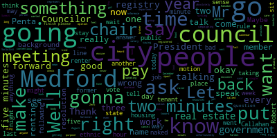

[SPEAKER_46]: Medford City Council, seventh regular meeting, April 2, 2024. Mr. Clerk, please call the roll.
[SPEAKER_40]: Councilor Callahan. Councilor Callahan. Present. Vice President Collins. Present. Councilor Lazzaro. Present. Councilor Lennon.
[SPEAKER_31]: Present.
[SPEAKER_40]: Councilor Scarpelli.
[SPEAKER_46]: Present. Councilor Sanders. Present. 7 present, none absent. The meeting is called to order. Please rise to salute the flag. Thank you all. Announcements, accolades, remembrances, reports and records. 24-062 offered by President Bears. Is there a motion to join with 24-070 by Councilor Scarpelli? On the motion of Councilor Tseng, seconded by Councilor Scarpelli. All those in favour?
[SPEAKER_44]: Aye.
[SPEAKER_46]: Opposed? Motion passes. This is 24-062 be it resolved. by the Medford City Council that we honor and commemorate the dedicated service of former Medford Mayor and State Representative John J. Jack McGlynn and the United States Army and the 3132 Signal Service Company, part of the World War II Ghost Army, upon posthumous receipt of the Congressional Gold Medal on March 21st. Be it further resolved that we dedicate this meeting in honor of all of those who served in the Ghost Army to defend democracy, the people of the United States, and all humankind. And we have 24-070. by Councilor Scarpelli, be it resolved that the Medford City Council recognize and thank former Mayor Jack McGlynn for his service to our great country, and finally being recognized for his heroism in being awarded the Congressional Gold Medal for his service as a member of the Secret Ghost Army during World War II. I'll be brief and I'll turn it over to Councilor Scarpelli, but my favorite anecdote in the news stories that have come out about this was former Mayor Mike McGlynn talking about how he got a phone call when he was mayor from a news source in the 90s, and it was about, they were saying, oh, well, we've learned about the Ghost Army, we learned your father, former Mayor Jack McGlynn, was in the Ghost Army, and he called his dad, and his dad's response was, who told you that? I need to track that down, because it was that much of a secret, and even 50 years later, he wanted to know how that information had gotten out there, and I think that just shows the dedication and service that he gave to the city and the country. And with that, I'll turn it over to Councilor Scarpelli.
[SPEAKER_38]: Thank you, President Beasley. Again, a great man, a great family. And these are the things when you know someone's a true hero, when you realize when no one's watching. And Jack McGlynn did this for 100 years. He tried to stay under the radar. And it's about time that He could be recognized. Unfortunately, he wasn't here, but his family was. I know that his children went out to Washington to receive the honor. And I think that we as a city should really praise and honor people like Jack McGlynn, not for just the service here in the city, in the state, but for also what he did when nobody was watching. And that's a true sign of a true hero. So this is where, hopefully, there are history books written where Medford students can learn about how important Jack McGlynn was to our community and to our country. So I think that I'd like to dedicate this meeting to Mr. Jack McGlynn. And hopefully, I would recommend that this city finds it within themselves to erect a statue in my eyes for that person who did so much for this country. So he's what Medford's all about. So thank you.
[SPEAKER_29]: Thank you, Councilor Scarpelli. Any further comments? Councilor Tseng. Thank you. I grew up in Medford where Mr. McGlynn was mayor and his father was around and a very active member of our community. And it was always a joy to talk to them and hang with them. and hear their stories. And I think, I can't say more, that would be more eloquent than what my fellow councillors said, but they're, you know, I'm glad that we're recognizing Jack McGlynn's service to our city and to our country.
[SPEAKER_46]: Thank you, Councilor Tseng. Any further comment? And if you don't know about the Ghost Army, I really recommend taking a look. There's been some really great articles, NPR, a few other ones that are free, no paywall. There's about 2,000 people who, with signals intelligence and inflatable tanks, tricked the Nazis into thinking they were 50,000 people and saved a lot of lives while doing it. Any public comment? Mr. Castagnetti? Name and address for the record, please.
[SPEAKER_11]: Andrew Castagnetti, Cushing Street, Method Mass. Sorry I'm late, talking about Mr. McGlynn, Sr.? ? Thank you. I wanted to say the man was, he's a great man and a great neighbor across the street from me on Cushman Street. And when I first moved there, I knocked on the door in 1980, introduced myself, because my sister worked for the Attorney General, Francis X. Bilotti, and I know he knew of the people. So he started speaking in Italian, I mean, fluent. I said, I thought you were an Irishman. He says, I grew up speaking Italian just like I did in the house. And I didn't understand half of what he said, because he spoke Southern Italian, but he was very fluent in his Italian. And he spoke Latin also, and he told me that whenever his grandkids got an A in Latin, he would give them a hundred dollar bill back then. It was wonderful. He's one of the last of the greatest generation. obviously, and he is a consummate gentleman and a consummate politician. I miss him a lot. Thank you.
[SPEAKER_46]: Thank you. On the motion by myself and Councilor Scarpelli, seconded by Councilor Tseng, all those in favour? Opposed? Motion passes. 24-063, offered by Vice President Collins and Councilor Tseng, be it resolved that the Medford City Council recognize the holy month of Ramadan and wish a happy Ramadan and an easy fast to all who observe. Vice President Collins.
[SPEAKER_18]: Thank you, President Bears. Thank you to Councilor Tseng for co-sponsoring this with me. Just wanted to take a quick moment during this special time of the year for many people in Medford to acknowledge our Muslim community and wish all celebrants a happy Ramadan during this special time for their faiths. Thank you.
[SPEAKER_29]: Thank you, Councilor Tseng. Thank you, Councilor Collins, for putting this on the agenda with me. We have a growing Muslim community here in Medford that we're very happy to welcome, and we know that this has been a difficult year, but we want to make sure that everyone's fast is easy this month, that we recognize this really important month for so many of our residents, a month of spiritualism, a month of purity and of love and embrace. And so I'm very happy to move approval on this question.
[SPEAKER_46]: On the motion of Councilor Saing and Councilor Collins, seconded by Councilor Callaghan, any further discussion? All those in favour? Opposed? Motion passes. Records. The records of the meeting of March 19th, 2024 were passed to Councilor Scarpelli. Councilor Scarpelli, how did you find those records? Councilor Scarpelli found the records in order and moves approval, seconded by Councilor Leming. All those in favor? Opposed? Motion passes. Reports of committees. 24-045, committee of the whole report, March 19th, 2024. This was our final meeting on budget recommendations, which were submitted to the mayor. We have received an informal acknowledgement of receipt and expect a formal response. We also expect budget meetings to begin in the middle of this month. I think April 17th will be our first meeting. So that is an improvement. We should have by then, not only warrant articles, but also quarter one, two, and three budget to actuals and revenue projections for fiscal year 25. On the motion to approve by Councilor Collins, seconded by Councilor Leming. All those in favor? Opposed? Motion passes. On 2020 offered by President Bears committee, the whole report to follow food trucks. We had another confusing meeting on food trucks on March 20th 2024. I think we managed to land at the end with a decent understanding of what legal authority applies to food trucks on what properties, but there's going to be further discussion on this matter. Is there a motion to approve or any further discussion on the report? On the motion approved by Councilor Callahan, seconded by Councilor Lazzaro. All those in favour? Opposed? Motion passes. 24-056 and 24-057, Administration and Finance Committee report, March 26, 2024. This was on ordinance language updates to the linkage fee that was reported out of committee and is on the agenda for the Council tonight to refer to the Community Development Board. to initiate the zoning amendment process. Any further discussion? Is there a motion to approve? On the motion of Vice President Collins to approve, seconded by Councilor Leming. All those in favor? Opposed? Motion passes. to 3-474 governance committee report, March 26th, 2024. Councilor Tseng is the chair of that committee.
[SPEAKER_29]: Thank you. For this governance committee meeting, we invited the elections commission and chief of staff Nazarian, who has been helping the elections department in the last few months. We asked them questions. They gave us an update as to how the department's running. They told us about a post-election audit that will be happening.
[SPEAKER_46]: And this is more of a post-election internal report All right. On the motion of Councilor Tseng to approve the committee report, any further discussion? Seconded by Councilor Callahan. All those in favor? Opposed? Motion passes. 23-427 and 24-008, Planning and Permitting Committee Report, March 27th, 2024. Councilor Collins.
[SPEAKER_18]: Thank you. At this meeting of the Planning and Permitting Committee, we discussed two resolutions, one from the previous term about amending the short-term rental ordinance. to include a monthly report from the short-term rental platforms such as Vrbo or Airbnb so that we can better reconcile the post-reported and platform-reported number of short-term rentals in the community and make sure that we're in compliance with the short-term rental ordinance. We also discussed a resolution from this term to review the fee schedule for like across city departments and boards to make sure that we go through the process of asking city departments for feedback on which of those fees are updated or out of step with our neighboring communities so that we can make sure those fees are covering the relevant administrative costs and brought into the modern age. Motion for approval.
[SPEAKER_46]: On the motion of Councilor Collins to approve, seconded by Councilor Leming. Any further discussion? All those in favor? Opposed? Motion passes. 23-319, Raisin Cane hearings. 23-319, Raisin Cane, 760 Fellsway. that we have a special permit for on additional on premises signage. We had a public hearing at our meeting on March 19th, which was continued to today, April 2nd. And that is on signage for raising canes. I will go to Councilor Scarpelli, chair of the Subcommittee on Licensing, Permitting and Signs, and then we will hear from the petitioner, Councilor Scarpelli.
[SPEAKER_38]: Thank you, Council President, and I thank Raising Canes and their representatives I think that. We're going through the due diligence of making sure that our neighborhood is, um, is involved in all of the signage concerns, and I think that we had a subcommittee that that broke it down, and I think that we made some concessions and. I think that We're pretty happy with decisions we made and removing a few signs and then keeping signs that are vital to their operations. And I think the biggest ones were the signs that had the menus on it that were hidden by bushes. So that was a big piece that would question, but the landscaping that's set up it's really going to assist with that. And I think all the lighting that you'll see on the building is really reflecting on the building. It's really nothing that's illuminating the neighborhood. So I think we can listen to the petitioner and then we can move on.
[SPEAKER_46]: Thank you, Councilor Scarpelli. Kathy, name and address for the record, please.
[SPEAKER_58]: Good evening. Councilor be at present Councilor Bears and board members, Kathleen a Desmond of five of 580 Main Street units for reading is where my office is located. I'm here today with Sarah homes, senior property development manager for raising canes. Um, as Miss as council member Scarpelli indicated, we did make some concessions with respect to the signage that we were originally requesting. We withdrew the painted arrow sign, which is marked exhibit C of your materials that were provided with the petition. The one love canopy sign. marked as Exhibit E has been withdrawn and the monument sign marked as Exhibit B. What remains in terms of signage are the two additional wall signs that aid with vehicular queuing as The site is very large, it's over 670,000 square feet, the Felsway Plaza. The two additional signs will provide direction to customers which are within the parking area, coming from where the Dunkin Donuts is, and around that area where the Stop and Shop is. So that's why those two additional signs were requested. They are small in nature. The permitted size for a primary wall sign is 100 square feet. The four combined is only 120 square feet so the signage is not out of character with the neighborhood. In addition to the wall signs, there are two to mural signs, a one love heart design that's not lighted, it's, it's lighted by virtue of the lighting on the building itself. It helps provide some design to the building so you're not just looking at a brick square building. That is also the case with the proposed digital sign, which is the dog sign. Again, that's not a lighted sign, but it's naturally lighted by what's on the building. And then the menu and the pre-sale boards, which as Councilman Scarpelli indicated, is screened from the landscaping and is also integral to the business of a takeout restaurant.
[SPEAKER_46]: Thank you, Cathy. Any questions or comments by members of the Council? Seeing none, I'm going to reopen the public hearing to anyone who would like to speak in favor, in opposition, or otherwise has a comment on this matter. The public hearing is reopened. Would you like to speak in favor?
[SPEAKER_58]: Yes. Again, in terms of what we're looking for, I can let the petitioner speak in favor of Sarah Holmes.
[SPEAKER_25]: Hi. My name is Sarah Holmes. I'm with HT Group on behalf of Raising Canes as their senior property development manager, and just speaking in favor of raising canes, these signs are crucial to the operations, and I really believe that they lend to allowing safe vehicular access from the shopping center, as well as with the many boards providing a crucial function for having a drive-through business.
[SPEAKER_46]: Thank you. Any further comment by members of the public on the special permit for additional on-premises signage for raising canes, you can come to the podium or you can raise your hand on Zoom. Let me give it just another minute here. name and address for the record please.
[SPEAKER_56]: Good evening President Bears and members of the council, Sharon DSL Mass Avenue circuit road. I think it's wonderful to have some larger size commerce, coming to the community. It's sad in a way that stop and shop is has, you know, started the anchor, but I like the whole idea what I don't like that entrance, I did not know about any public hearings in the beginning of this placement. And I've looked into the, the, the company very fine. I was wondering if it's there's any way on that side street that comes behind ocean job lot in the freight tools company. the Raising Cane Company would be willing to put a smaller sign on that street next to Dunkin' Donuts. That entrance, as you know, goes to Eastern Bank, it goes to Panera's, it goes to Smashburger's, and it goes to that small, I'm sorry, Chinese spot on the corner. And now Raising Cane's. I have to wait five and 10 minutes to get in and out of there all the time. So I'm wondering if they might want to also promote more people going in if they get a little bit discouraged. If on that street right by Dunkin Donuts, I forget the name of that street, that there could also be additional small signage entrance to Raising Cane's here also. I don't know how that works with zoning or anything like that. is a suggestion because I think especially in the beginning with the fine product like that, especially with families and inflation on higher restaurants right now, it's going to be busy. I wish them success. I'm just wondering about that. I think it's a really good idea.
[SPEAKER_46]: Thank you. Yes, this is just about the signs and we did the special permit on other items already, but I do believe Raising Cane's is making improvements at the lot area. Kathy, if you want to speak on it.
[SPEAKER_58]: I can address that briefly as part of the that we put some kind of signage so that when you get to the end of Riverside have where the light is that they don't block the box, and that's going to be somehow tied. To a light right before the block the box so that cars and coming going down Riverside have to the fouls way will be aware that they can't block the box and that there's going to be a change in light. In addition to that, I believe we also discussed the. putting some kind of signage. I don't recall who is specifically responsible for it, but that other entrance was addressed as something that should be made known to Raisin Cane customers that they can also exit out of that way. So those were discussed.
[SPEAKER_46]: I believe there were new paint marks as well were?
[SPEAKER_58]: Right.
[SPEAKER_46]: Thank you. Any further comment on the special permit for signage for Raisin Canes? Seeing none in the chamber and none on Zoom, I'm declaring the public hearing closed. Are there any motions?
[SPEAKER_38]: I would, if I can. Councilor Scarpelli.
[SPEAKER_18]: I'll defer to that.
[SPEAKER_38]: Well, I'm just gonna move forward.
[SPEAKER_18]: I'll second your motion.
[SPEAKER_38]: Okay, so I think that with the concessions for the neighbors and for the business that's moving in, I think that we've been pretty thorough with our meetings and informing the neighbors, so I would move forward with the changes as instructed and approve.
[SPEAKER_46]: Thank you Councilor Scarpelli on the motion to approve the special permit for additional on premises signage for Raising Cane seconded by Vice President Collins, Mr. Clerk, please call the roll.
[SPEAKER_40]: Yes. Yes. Yes. Yes.
[SPEAKER_46]: Yes, 70 affirmative, none negative. The motion is approved. 24-056 offered by Councilor Leming. Resolution to bring linkage pre-ordinance in compliance with the State Act establishing the ordinance. Is there a motion to waive the reading in favour of a summary by the chair? motion the motion by Council I mean to waive the reading in favor of summary by the chair seconded by Councilor Callahan all those in favor. Opposed motion passes. So we did discuss this in our administration and Finance Committee meeting last week, and essentially what was referred out of committee. is a number of technical amendments. There are some errors in the linkage fee ordinance referring to different trust funds and sending money to all of the money right now, technically, by ordinance is going to the parks fund, even if it's money for the water sewer system or schools or whatever else it may be. And then also adding a bucket for affordable housing, which is authorized by the a special act of 1989, but was never passed into ordinance in 1990. So the process from here on out is there will be a referral to the Community Development Board. The Community Development Board will hold a public hearing. They will issue comments and recommendations to the council. The council will then hold a public hearing considering those recommendations. And then there would be a final vote on the amended linkage fee zoning ordinance at that point. Any further discussion by members of the council or any motions on the floor? Council Vice President Collins.
[SPEAKER_18]: Thank you, President Bears. As I said last week in committee, I appreciate Councilor Leming for bringing this forward. I think that even if all we were doing was updating the technical aspects of this ordinance that are out of step with how it's actually utilized, that would be a productive thing to do. And I think it's in keeping with where we're at as a community and this modern moment. to be adding, as we discussed at length last week, the point of the linkage fees is to associate certain costs from developers for the things that they affect in our community when they come in and build here. Things like parks, things like roads, sewer. I think it's appropriate to be adding an affordable housing bucket at this time. And I look forward to reviewing the recommendations that the city board comes back to us with. So I'd motion to refer to the community development board
[SPEAKER_46]: On the motion of Vice President Collins to refer to the Community Development Board, seconded by Councilor Leming. Any further discussion? Any discussion by members of the public? If you're on Zoom, you can raise your hand. Seeing none, on the motion of Council Vice President Collins, seconded by Councilor Leming, Mr. Clerk, please call the roll.
[SPEAKER_40]: Councilor Callahan. Yes. Vice President Collins. Yes. That's a little bizarre. Yes. Absolutely. Yes. I'll just go Kelly. Yes, I'll just say yes.
[SPEAKER_46]: Yes, 70 affirmative. None the negative. The motion passes and the item is referred to the Community Development Board. Vice President Collins can ask you to take the chair. Thank you.
[SPEAKER_18]: Council. 24-059 offered by Councilor Callahan resolution to create a rental registry. Whereas the city of Medford has climate sustainability, affordable housing and other goals that would be easier to accomplish if we could reach either renters or landlords or both in our city, and whereas a lack of a registry of rental properties means that we currently miss opportunities to reach either our renters or our landlords or both. Be it so with energy efficiency standards as described in the Climate Action and Adaptation Plan, Section 2.2.D. Be it further resolved that this ordinance be referred to committee for further discussion in the Planning and Permitting Committee. Be it further resolved that members of the Planning and Permitting Committee submit questions to the chair, clerk, and city staff ahead of the committee meeting scheduled for the subject. and be it further resolved that the council work with the building department and the Office of Planning, Development and Sustainability on the drafting of this ordinance to ensure that it best serves the city of Medford and our climate and affordable housing goals. Councilor Callahan.
[SPEAKER_15]: Thank you. So one thing that I feel pretty strongly about is that the folks who live in Medford and rent out properties in Medford, these are always the best landlords we have. I know that the city is currently making an effort to reach out to landlords to make sure that they know about the different rebate programs that there are at the state level. And tax incentives in order to retrofit their houses, but it's very difficult to reach that group of people because we just don't know who they are. There are also. you know, we have on our docket for things that we are hope to do, and I know I'm excited to do is to implement what the state has now allowed, which is a good landlord tax credit. That would also, you know, you have to apply to that, and that would be much easier for us to reach those good landlords in town if we knew who they were. And there are all sorts of other reasons down the line that it could be really helpful for us. I know in the climate adaptation and action plan, it has. There are ways that, you know, reaching out to landlords, knowing who landlords are in terms of retrofitting buildings is going to be really helpful in terms of, you know, being able to provide rental protections. I know that we many people as I campaigned were upset with absentee landlords who allow their buildings to fall into disrepair or allow to have there to be know, junk in the, in their yards, and being able to know who landlords are what properties are landlords and reach the tenants in those buildings as well to communicate them we we have tenants rights ordinance which we passed recently. being able to know who which properties those are so we can reach those people would be great. And really all we're talking about is simple, simple registry that would just have the listing of which properties and how many you know which units are rental properties, and who is a contact person that we can reach out to in terms of the property management or the landlord. So that's what this is about. Thank you.
[SPEAKER_18]: Thank you.
[SPEAKER_29]: Thank you. I would really like to thank Councilor Callahan for introducing this. I think this is an idea that most residents assume we already do as a city, but we don't. And it is something that, you know, it's information that the city should really have in order to communicate its message better. And I think that kind of touches at two of the arcs that we're trying to work on this term in the city of Medford with the city government communication modernization. we're ambitious as a city council and as a city when it comes to our climate goals, housing goals, but also the very basis of just having our existing laws be carried out and enforced. And this registry would allow us to do that. It would allow us to be more responsive to a lot of constituent concerns and a lot of resident concerns like what you mentioned about absentee landlords. and it would help us restructure some of the ideas that we have. For example, with the good landlord tax credit, which I know a lot of people are really excited about, this idea allows us to reach out to them. So thank you.
[SPEAKER_14]: This sounds really interesting I'm curious about if this is common practice and other cities in the area I'm not I'm not familiar with this as a concept. I would be curious to hear if other cities practices commonly and another thought I have and I don't think this necessarily is a deal breaker but if it would be. I don't know what that would mean for. Prohibitive administratively for City Hall staff and what that would mean for requirements for maybe additional hiring or restructuring, or if that's just something to discuss in committee because I know the resolution says, you know, talk about it and planning and permitting. Obviously that would be the time to talk to City Hall staff, but that those are just things that come up and also things being
[SPEAKER_15]: Councilor Callahan? I would just reply that I have spoken to the planning department and they say that they're actually kind of excited to have this because a lot of the things that they're trying to do are very difficult. For example, that they have on their docket to reach out to landlords specifically about rebate programs at the state level, and that's very difficult. They just don't have access to who those people are. So I think that from the planning side, they are kind of excited to be able to have this information, and they see it as being beneficial to them rather than a burden to them.
[SPEAKER_18]: We're gonna go to President Bears, Councilor Leming, and then Councilor Tseng.
[SPEAKER_46]: Thank you, Madam President. Yeah, having spoken with not just the planning department, but also code enforcement, building inspectors, et cetera, And also, this is a policy that's in effect in Boston, Worcester, other communities around the city, around the state. There's a huge issue with being able to identify what's an owner-occupied home, what is a rental unit, what's an illegal rental unit, and this would go a long way. I think I was listening to Councilor Tseng talk a bit about this. Building code, health and safety, you know, there's a lot of difficulty with reaching out. We send it out in the tax bill, absentee landlord, absentee property owner, maybe they never open the envelope and maybe they never see it, right? So there's a number of things when it comes to quality of life here in a community where this would be a huge benefit for the city to be able to identify this and I think the good and important thing to recognize is that most of the people who are renting property owners or renting properties in the city are the right thing, following the rules, you know, and this is a way for the city to provide access to the different programs and benefits available and be in contact. And then for the folks who are problem properties, and we know of them, and we know many of them are in the hillside neighborhood and over-renting to tough students, and we have overgrowth, and we've had petitions coming in here before, this is a way for the city to actually keep track of that. And that's been a huge note from code enforcement and building, is that It's just hard to say, here's the file on this property. And this property may be violating snow and ice removal. They may have overgrowth under the street. They may have trash on the property. They may have noise nuisance complaints. They may have a whole plethora list of things. But because there's no registry, there's nothing to attach any of that to. And they get away with it. So this really is a way for us to have that list, know what's going on in the city, and make sure that while most folks are doing the right thing, address the issues with those who are not. And I think that's something that all of us can acknowledge is an issue that we all experience here in Medford. Thank you.
[SPEAKER_18]: Thank you. Councilor Leming.
[SPEAKER_31]: just a question for Councilor Callahan. So it says here the building department, the office and the PBS. Do you have a good idea of where this project once it is implemented would primarily be maintained? Would it be the building department or PBS? And what's do you have? Can you just, like, give us an idea of the amount of staff time that it would take to get this off the ground and maintain a longer term? If
[SPEAKER_18]: Councilor Callahan, if you have a direct response.
[SPEAKER_15]: Sure. I mean, my direct response is all we're doing is giving this a number and we're beginning the conversation. So the truth is, we're going to be taking input from the planning department, from the building commissioner, from the administrative staff to understand how is this best implemented. So really, this is all we're doing is starting the conversation. But as far as who will implement it. I think that the administration already, because this was in the plan that would come up a few years ago, I think they already have ideas and I would look to the administration for information like that.
[SPEAKER_29]: Thank you.
[SPEAKER_18]: Councilor Tseng and then Councilor Scarpelli.
[SPEAKER_29]: Thank you. I can also speak to some of Councilor Lazzaro and Councilor Leming's questions, because I happened to hold a meeting on this a few weeks ago with some city staff. It seems like most of the work would fall within the purview of the building department. Actually, the new building commissioner that we have here in Medford set up the rental registry system for their last municipality, and so they're very well-versed. how to create the system. They've created an online system that really maintains itself. And so it wouldn't, you know, the setup would take time for the staff to manage. But once the system is in place, they expect the system to be quite self-containing.
[SPEAKER_18]: you. Thank you. Thank you. Thank you. Thank you.
[SPEAKER_38]: Thank you. Thank you. Thank you. Thank you. Thank you. Um. If I can't do the chair to Council Kalyan or any other councils that can what documents were we asking for? What? What? This is an intrusive. Um process and what we're asking for for renters information. Landlords information. Can anybody share what we
[SPEAKER_15]: Again, this is the beginning of the conversation.
[SPEAKER_18]: Excuse me, we're not going to interrupt people. Councilor Callahan, please go ahead.
[SPEAKER_15]: So this is the beginning of a many months long process. Yes, this is the beginning of a many months long process at which the public is welcome to attend any of those meetings that we have. And My understanding is that at a minimum, it is the address of the property, the address of which unit is a rental property, and information on how to contact the landlord or property management.
[SPEAKER_18]: There will be a chance for everybody to participate on this item. Please do not interrupt speakers. Councilor Callahan, are you finished? Councilor Scarpelli.
[SPEAKER_38]: Thank you. And I think that's what the big concern is. I think that we're doing something that sounds like it doesn't need to be done. We've been we've been Based on interrupt speakers, I'm gonna ask the room to be silent, thank you. I'm hearing dialogue back and forth from fellow councils that we're here to do people's business and we should do some things later on that we'll talk about that we need to do business. We keep doing business and keep throwing more work onto people that we already know don't have the capability to do what you're asking for. You're asking for something that's already done through the city in every way possible. If the biggest thing is just to get the information out to people, there's other ways to do this. But to be intrusive and then really take all these unnecessary documents, it makes people very uneasy. And I'll be honest with you, for a council that's very, very astute in understanding about people that I probably most difficult people that are going through a very difficult time. I was getting phone calls from landlords saying, George, what do we do hypothetically? Hypothetically? What do you do? Because the conversation scares our residents, that our landlords allow to give them a place to live, but are afraid to give documentation, because maybe they're undocumented. And they're petrified. This is a fear that you should wait when we get to this point, but also understand we're trying to do something over and over again with different issues on this council lately that's redundant. And it's putting more work to departments that need to do their work, not to do this additional stuff that we want to get people to know that there is some sort of rebate. There are so many other ways we can do that. There are so many other ways we can do that. But to keep bringing resolutions through. I think it's hurting this community and it's driving more wedges through this community. So I would request that we deny this process and not put more work on more departments that don't need it right now.
[SPEAKER_46]: I would just note that the departments themselves have requested it and it's part of the city's comprehensive plan. It is true. Thank you. I'm not going to engage. Seriously, my role is to just state facts. Okay, please stop. Please stop. Thank you. You have to be silent. Thank you. Any further comments by members of the council? Seeing none, name and address for the record, please, for public participation.
[SPEAKER_33]: Robert Jones, 5 St. Mary Street. Again, I really don't know where this is coming from. The people that own the houses pay their tax bills. We know how to contact them when we're looking for their money, correct?
[SPEAKER_46]: Okay. If they don't pay, then they are contacted.
[SPEAKER_33]: If they don't pay, then they are contacted. So you have a mechanism to contact every homeowner in the city of Medford. It's a current system. Who is going to be processing and administering all this registry? rental registry, we're going to have a rental registry department here, because we barely have enough staff to provide the basic city services that we have right now.
[SPEAKER_46]: Thank you, as was as was noted, and please do not if you're going to shout, I'm going to ask you to leave. Thank you people. I just want to if you I can answer your question, which is that the people who are responsible for enforcing the building code have said that this would make their jobs easier.
[SPEAKER_33]: Can you name them?
[SPEAKER_46]: Yes, the people who work in the building department, the building commissioners. Are they here? It was just mentioned. Well, we're not, we haven't had them, we're just referring to the committee. So we're going to have the discussion as members of the public have noted, we're going to have a long discussion just on this topic so that everyone can have their points concerned, so that points like Councilor Scarpelli's can be raised and so that we can craft an ordinance that works for the community.
[SPEAKER_33]: Thank you. It would be nice if the people that you talked to would be here to verify that you had talked to them.
[SPEAKER_46]: We're going, okay, I don't think we need to be verifying anything. We're gonna have a discussion.
[SPEAKER_33]: I do. Read the room, Councilor.
[SPEAKER_46]: I have, and I'm disappointed. Thank you.
[SPEAKER_33]: And I think that you guys are way overstepping your boundaries here. I think you're beyond the city charter. I'm gonna let you go. You got three minutes, 30 seconds. That's my opinion. I'm not a lawyer. I'd love to ask a city solicitor, but obviously we don't have one. Another point that I'd like to make with all the, what I consider drastic and radical changes that you're trying to push through in the city, I think they should be put on a ballot. And if they're truly...
[SPEAKER_46]: Just a reminder that the disruption does take away from the speaker's time.
[SPEAKER_33]: Oh, that's fine. Well, the police are here so they can drag me from the podium if you so desire. If needed. If needed, okay. I'll stay here all night. The other thing was, through the chair to the city clerk, what is our next municipal election? How about September 3rd? There's no election on September 3rd?
[SPEAKER_46]: That's not a municipal election, that's a state primary.
[SPEAKER_33]: Oh, sorry, I misspoke. The next election in the city of Medfordwood will be September 3rd. So why don't we craft all the ordinances and the registries, whatever that may be, and put it on the ballot. And if it's truly the will of the people, we'll see that. And people will be able to vote at the ballot box, not down here with a two minute limitation. Every week, it's something new. And it's overstepping the chart. You're doing charter review here on Tuesday nights. And if we had a city solicitor, maybe they could weigh in on this. I guess that's all I have. What is the impetus of this registry? Because it doesn't sound like The problem landlords are not going to register. You understand that, right? The people that you're talking about enforcing are not going to register. And we know who they are. You know how to get in touch with them. So I question why this registry is even being put forth. Is it to mimic the one that they have in Lynn? Lynn has a rental registry. Is that where you got the information from, Mr. Chair?
[SPEAKER_46]: I'm not going to engage in the back and forth, but as I noted, this is in the city's comprehensive plan and was requested by several departments in the city as a way to... Okay, well, I'd like to know who they are. I just told you it's the building department and the planning department. I don't believe you, to be honest with you. Okay, well, I'm sorry that you don't believe it. You can continue your comment, but I'm not going to engage in the back and forth.
[SPEAKER_33]: Okay, well, I thought we were here to ask questions and you would answer them.
[SPEAKER_46]: No, you're here to make comments and we will hear them.
[SPEAKER_33]: I'm asking questions. You have 55 seconds. OK, we have somebody else ask the question. So my question is, what is the impetus, the end game for this rental registry? Number one. Number two, who in the building department asked for this registry? And I have plenty of them. And if this registry and some of the other things that we have rise above the charter of the city, and if they're legal, I'd like to have that legal opinion by a city solicitor or KP Law, whoever it may be. Thank you. Thank you.
[SPEAKER_46]: I'm going to go to Zoom with Kayla Lazzaro. Name and address for the record, please. You have five minutes.
[SPEAKER_48]: Donna Silva?
[SPEAKER_46]: No, sorry. I'm going to Zoom. Sorry.
[SPEAKER_48]: Oh, sorry. Hi, it's Kathleen Lazzaro. I have a couple thoughts or questions about this rental registry. I don't own a two family home, so I don't really have I can't comment, but I do have some thoughts. One is that all this information, like Mr. Jones said earlier, all this information should be somewhere in some sort of city database that we have with our names and addresses, that we pay taxes. You know, so either someone's not doing their job correctly, or someone is not using the technology that we have to do their job, or we're missing some piece of technology to gather that information to be able to utilize it. Because if we have some sort of computer system, we have some sort of database that has all this information in it. And then my other thought was about how do you get around people who rent illegally or like, I mean, I can only assume, because I have seen college students before, you know, you have an apartment in Hillside that's supposed to rent to four people, but there's eight people living there. How do you get around that? Like, how do you, I just, I think that there's, I think it's a nice idea, but I think we have that information and we should utilize what we have before we start creating something new.
[SPEAKER_47]: Thank you.
[SPEAKER_46]: Name and address for the record, please.
[SPEAKER_13]: Donna Silva, 1536 Mystic Valley Parkway. Our country is built on a democracy. Am I right? Are we all in agreement? This is anti-Democrat, okay? And I do own a multifamily, okay? And I have pride of ownership. And I am a good person and a good landlord. We don't have a code enforcement officer in Medford. That's our problem. So you're targeting multi-families. I did not hear one person here say about the single-family homes that have code violations, debris strewn across their properties. So if you're going to start targeting and you want to go against these people, hit the whole city, get a code enforcement officer. Other states and cities have them. And if that's your problem, go for it. Landlords aren't bad. But every time you talk, all I hear is that people like me are bad people. I'm an elderly person. I own a two-family home. And I've lived in Medford just about my entire life. My parents didn't buy their first home until I was 19. And it was my grandfather's. Where were you people coming from? share on each and every one of you. I sit here and I feel like I've done something wrong. I've done absolutely nothing wrong. Two of my former tenants, separate, both own homes because of me. Okay? My family, my parents were able to live in my first floor. My mother had Alzheimer's. Shame on all of you. I'm a good person. And most of these homeowners are, too. And you wouldn't have rich properties.
[SPEAKER_46]: Please direct your comments to the chair. Thank you.
[SPEAKER_13]: I'm sorry?
[SPEAKER_46]: Please direct your comments to the chair.
[SPEAKER_13]: OK. And for the most part, I do understand there are some slum landlords, OK? There are. But there are some homeowners, and there are some really bad tenants, too. some really bad tenants. And I know people that have had difficulty with them. And I have a friend that had she couldn't get them out. She had to take them to court, she lost a lot of money. So where does that happen? And then you talk about rent control. Do you know how much it costs to run a home? If a roof goes, it's $18,000. A heating system, a heating system. I put two new heating systems in my house. $50,000 each, that's a hundred grand. And that woman who sat here the two weeks ago, three weeks ago, who stated that her house is now worth $800,000 and she only bought it for 60,000. Well, good for you because I have pride of ownership. And I have brand new kitchens, brand new bathrooms, brand new heating systems, new electrical, new plumbing, because I'm a good person, okay? And I pay my taxes. And the person who made this comment that their rent goes to taxes, add up everything and the percentage of your rent, the pennies that go to the taxes, because there's repairs when your stove goes, Who pays for that? I just put a new stove in my house, cost me $3,000. My friend said to me, well, it's not the stove, it's the installation. So you have to look at all of this when it comes to paying for things. I was going to actually do a spreadsheet for all of you and hand it out and say, look at what it costs to run a home. It's a lot of money. And even affordable housing for these poor people. Poor people can't afford homes. No matter how little you give it to them for, they can't afford it. So the really poor will never afford a home.
[SPEAKER_46]: You have one minute.
[SPEAKER_13]: It's the people that maybe the young millennial generation that wants to buy homes and they want to live in Medford. They can't afford those. And I can understand it. And I feel for you. OK, I feel for all of them. But you have to take it and look into the consideration, maybe move a little further out. That's all I have to say. Thank you.
[SPEAKER_47]: Thank you, we're gonna go to Melanie Tringale on Zoom. Name and address for the record, please. You have five minutes.
[SPEAKER_04]: Hi, this is Melanie Tringale, 116 Forest Street in Medford. I also wanted to comment similar to what the previous woman has also said. I am a landlord. I own two multi-families. My first home was a multi-family. I've been a landlord in Medford for over 25 years. I take pride in ownership of my properties. I upkeep them. I have good tenants. I'm a good landlord. Many of my tenants have lived in my properties for five, six, seven years. This registry is a slippery slope and it's a policing policy of landlords and the people that end up getting punished for this are the good landlords, not the bad landlords. You said in your comments, President, that you know who the bad landlords are. It is a code enforcement issue. If you know who they are, then you can enforce the laws. The other thing is you talk about that. You did. You did. You said you already know.
[SPEAKER_46]: I didn't quite say that. I said we know that there's a small percentage of people who are problem landlords, but code enforcement has said because there's no registry, it can be difficult to track them down and we are well aware that there are a lot of corporate owners using shell corporations and they're almost impossible for the city to get in touch with. Thank you.
[SPEAKER_04]: Okay, all right, so I didn't hear anything about single families. There's tons of single family homes that don't enforce their codes. I walk the streets of Medford all the time. There's no code enforcement for businesses. There's trash thrown in front of their businesses, overgrowth, things are not taken care of. What are you doing about that? Are they registered? Do you reach out to them? How are you gonna reach out? You talk about tax programs that you wanna reach out to us for tax programs. There's other ways to reach out to us. do you what about the tax incentives for single family homebuyers how are you going to reach out to them are you going to have them register there's ways to reach out to these people without having to and again the people that end up getting burned with these types of things are the small property owners who actually the majority of them are pretty good landlords and they're the ones who end up bearing the brunt of these these laws that's all i have to say thank you
[SPEAKER_46]: Thank you, and I will note we do have a business license program. All businesses are licensed, and this council on multiple budgets has requested additional funding for code enforcement, including in the most recent budget. We currently only have two code enforcement officers.
[SPEAKER_04]: Well, then maybe we should start there first.
[SPEAKER_46]: We're doing that. Name and address for the record, please. You have five minutes.
[Penta]: My name is Robert Penta, Zero Summit Road, former member of this August body, and I'm really getting confused. It's been almost eight years since I've been back before this council, and I've been here three times since December. And I feel like there's something wrong with this council. You're going in a direction that doesn't speak about the Medford City Council taking care of Medford City issues, streets, sidewalks, okay? Also, my concern with this is, is the City of Medford City Council going to go into a public service agency? by going into housing and being property reviewers, and you talk about a registry that a homeowner has to go and apply, well, I'm quite sure you're gonna charge them a fee. And it's another money grab for the city of Medford, unfoundly, and it's wrong. And in the very last line of your document here, Councilor Lazzaro, I mean, excuse me, Councilor Callahan, I apologize. you indicate that this is going to be good for our climate and our affordable housing goals. Well, let me ask you something, as you folks going to manage this, you know, you have a program here that you want to create a review between now and when I don't see any name here as it relates to a real estate group of people that should be involved. Because if anybody knows the whereabouts of the city, and the renters, it would be the real estate people because they're the ones that are renting out. not renting in. So what purpose would the city council have to try to tell a real estate agent or its company that this is who you have to rent to? These are the type of people and then what are we going to do stop making a registry of who you are renting to and be discriminatory. In fact, in the future, toward a certain class or an ethnic group of people.
[SPEAKER_46]: There's nothing in the ordinance that would suggest that whatsoever.
[Penta]: city of Medford last year, and once again, this year put out in their documents, a it's called a notice of tenant rights and resources. And if you look into the tenants rights and resources, it also makes reference to what the state law allows you. Now, if there's something wrong with a tenant or renter, they have many places to go, they can go to MCAD in Boston, they can go to state real estate board, you can go to your right downstairs here. And you can also go to the public health department. Right now they have five available ways for renter feels that they're being in frowned upon. But every good real estate broker knows whether it's in the city of Medford or any other place, that the fact of the matter is they're going to try to get the best person that they can, who can afford to pay the rent, and it's not going to be subject to a background check to their ethnic background. Because that unfortunately, is where this is going to go. Because once you get somebody in there, they're going to want to know where did you come from? Let me see your references. And where were you renting last? That's not what this council's job is all about. What an answer!
[SPEAKER_46]: I would just note again that this doesn't say anything like that.
[Penta]: Pardon me?
[SPEAKER_46]: This doesn't say anything.
[Penta]: You don't know you haven't gotten there yet. You just you just have you just I'm not gonna I'm not gonna sit here and say that we're going to hear you have discrimination as the chair as the chair.
[SPEAKER_46]: I have said point Councilor Scarpelli. I have the authority to respond with facts. These are not factual facts. You would please tell me where this says that we're going to discriminate ethnically against.
[Penta]: I didn't say you were you said you're going to put a registry.
[SPEAKER_46]: What's
[Penta]: Mr. President, what's the registry going to include? Ask the maker of the motion. You cannot come here with resolutions and not be able to answer the questions for what you're looking for. Then you don't belong here. Go someplace else. Okay.
[SPEAKER_40]: Yeah, 54 seconds. 50 seconds.
[Penta]: I'm just frustrated. And probably taking it out on all of you. But I am taking it out on you for a particular purpose. I'm going to repeat myself. I have a bad habit of repeating myself. Please just do what you were elected to do. Well, you guys went out there and campaigned and rang on the doorbells and asked people to vote for you. Did you tell him you wanted to put a registry for housing in there? No. No.
[SPEAKER_46]: So let me just... All right, if we're gonna shout again, I'm gonna ask you to leave.
[Penta]: Let me just conclude by saying the following.
[SPEAKER_46]: You have 30 seconds, you have 15 seconds actually.
[Penta]: Well, you know something, just relax. You had a little do to do with their Councilor Scarpelli. You took my time up. I'm gonna ask Mrs. Callahan, I'm gonna ask Mrs. Callahan to withdraw the motion. and think this thing through, if you really think it's worth something, come back at another day with definitive answers. So you don't have an audience that's screaming and yelling that they don't want it. Maybe there is something that can work its way out. Maybe if you work with the real estate brokers in this city, it can make some kind of sense. And the two person homeowner doesn't have to pay a fee to get himself registered or her registered. And at the same time, there's going to be none of this background check that revolves itself around where I am, who I am, what my ethnic background is, what my financial status might be- Thank you, Mr. Penta, your time is up. No, wait a minute, wait a minute.
[SPEAKER_46]: Thank you, Mr. Penta.
[Penta]: Wait a minute, I'm not through yet.
[SPEAKER_46]: I am not through yet. Your time is up. Mr. Penta, please step away from the podium. I'm not going to call the police on you. Well, you should be respectful.
[SPEAKER_39]: We'll wait. We'll wait.
[Penta]: You took time away from me to talk to Councilor Scott.
[SPEAKER_46]: I'll wait, thank you. Thank you very much for waiting. No, we're not gonna hear from you, but I'll wait for you to step away, thank you. Okay, we're gonna go to Jess Healy on Zoom. Jess, you have five minutes. Jess, you have five minutes.
[SPEAKER_24]: Hello, Amy.
[SPEAKER_46]: Thank you, Jess. You can go, you have five minutes. Name and address for the record, please.
[SPEAKER_24]: Really full awkward. I'm sorry. I can't be down there tonight, but I just want to say take a look around the room. You're in everyone on zoom We all know that there is like Councilor callahan said a goal that you have and you're trying to figure out how to get these small little pieces through, hoping that we don't see that there's a final agenda that you guys are trying to push through. But just know, take a look at everyone in the audience on zoom. We all know that you're looking to do something down the line. And that's why we're here tonight. And we're going to watch each step you take. And we're not going to let it happen. Thank you.
[SPEAKER_47]: Thank you, Jess.
[SPEAKER_46]: Name and address for the record, please. You have five minutes.
[SPEAKER_03]: My name is Louise D'Antonio. I hope you folks can hear me. We can hear you. I'm concerned about them also. The previous two speakers said a lot of what I wanted to say. I feel like my head is like a popcorn maker. I have so many bits and pieces that I would like to toss at you that I purposely have to limit myself. This information about fees and the registry, it sounds like a little bit too much government interference to me. You are calling into question every decent renter, every decent homeowner who's provided living accommodations. I don't know where you folks are going. I don't know where you folks have been. But you better start focusing on the city of Medford and representing Medford people. One of my questions was, how come you got your salary increased, but your appearances in front of the community have been cut enough.
[SPEAKER_46]: I don't understand that. That's a rhetorical question. The city council salary has not increased since 2012. That's a rhetorical question. But it's incorrect. The city council salary has not increased since 2016.
[SPEAKER_03]: This is not supposed to be a full-time job for you folks.
[SPEAKER_46]: Our salary has not increased, and we are meeting more than ever.
[SPEAKER_03]: I'm saying, I mean, I've had some of you come to my doorstep, say one thing, and then a month or two later after the elections, it's like, wait a minute, Was this the same person I was talking to? And I've seen the little smirks. you know, older woman, probably lived in Medford all of her life. What you're doing is you're like punishing a whole class of people for one specific poor behavior. The state of Massachusetts has a very comprehensive relief program for homeowners and renters. There is no discrimination there. Do I want any one of you people to have my private information? Some of the people that rent houses are students. They can't afford it on their own, so they get a guarantor, a parent. Do you think those parents want their information in the Medford city? Who's going to supervise the list? Who's going to do what? I don't trust the city of Medford right now, because you're not doing anything for us or any of us.
[SPEAKER_47]: Thank you.
[SPEAKER_46]: Name and address for the record, please. You have five minutes. There's no one on Zoom right now, but.
[SPEAKER_08]: Hi, my name is Longway Su, 250 Spring Street.
[SPEAKER_47]: You may speak.
[SPEAKER_08]: Yeah, thank you. First of all, I want to thank you for the city council for opportunity to express my thought. First, I want to thank the Council for giving us the chance to express our thoughts and comments. For me, I basically have three things I want to bring up. First is privacy, second is fairness, and third is efficiency. and actually said I have to come today to express those points because I think a lot of good folks already expressed those comments, but probably I need to rehash them again. First is the privacy. I think it is unfair to put in this kind of burden for the landlord to collect, validate, and reporting those private informations to the city of Medford. You may think that would be helpful, you may think it would be helpful, like a government body, but for us regular folks, it's just not a big brother. We just want to pay our tax and move on. We have a job to do. And collecting those private information really violates the right of the landlord and also the tenant. I mean, how can write it? This is a whole of a body of work involving for the registration, both on the city and on the citizen. So this is privacy. Second is fairness. Me, I'm not evil. I live my property for 10 years. I work my bone to earn that property. I literally got a machine all myself because it cost 500 to get plumber. I literally, like I work so hard for their property. I just share the same responsibility. I paid exactly what I own in terms of tax for like other single resident in this community. It is unfair to discriminate small owner like me just because I have a property, I rent it out. I already did my fair part. I pay my tax, just leave me alone. Third is efficiency. I just couldn't notice that one of the reason that the objective is to be affordable housing. I'm not a scientist or economic scientist. I just couldn't make the connection of affordable housing versus more fit. Really, how that will even help in terms of affordable housing. it will make metaphor even more expensive for renter, because every penny you extract from landlord will eventually triple down to all resident here. So my suggestion to the city council is actually try to more efficiently use the tax money you already have towards the goal. They are other people's money. They are the money from, like, pulling from the citizens. Those should be, you already have those money. that we probably should have more proposal, we should working on using that existing tax money more efficiently, rather try to expand the tax base. And if it does, please do it properly, just raise the tax rate, do it properly. And that's all my comments, thank you.
[SPEAKER_47]: Thank you.
[SPEAKER_46]: No hands on Zoom, go to the podium, name and address for the record, please.
[SPEAKER_22]: I just want to say that I strongly oppose this rental licensing ordinance, and I just want to make a general appreciation of why I only own my house, I don't have rental property, and some other people have made great points about the specifics. I just think that the rental licensing ordinance is a clear example, in fact, of government overreach. When the government imposes such licenses, it typically aims to regulate for the sake of regulation and nothing else. In this case, under the guise of climate sustainability and affordable housing goals. However, what actually occurs is a limitation on the freedom of property owners to engage freely in the market. This not only introduces unnecessary bureaucratic hurdles, but also inflates costs for both landlords and tenants, for both of them. reflecting a misguided approach to solving housing issues. A much more effective method would be to encourage free market competition and innovation, which naturally elevates housing standards, i.e. sustainability goals, and affordability without imposing burdensome regulations. And I would just like to add, based on the comment on the previous person, which I applaud, is that, yes, I would try to focus on efficiency. And I understand that by definition, the government is inefficient because the government uses somebody else's money on someone else. And as such, the government thinks that resources are unlimited, but they're not unlimited. We work as hard as we can to basically pay our taxes. And then we're not getting anything out of it. You can't even drive. I had to change two bearings in my car already because you basically drive like it's a landmine. You're trying to avoid potholes everywhere you go. So I please request that the city council, please use the resources that you already have efficiently. Property prices go up every year, okay? I keep paying more taxes, so please, Please use as efficiently as you can with the limitation that I have stated that it's always going to be more inefficient than the free market. Please use what you have as efficiently as you can and leave us alone. We already do our part, we work as hard as we can, and we don't want to contribute anymore. Thank you very much.
[SPEAKER_47]: Thank you.
[SPEAKER_40]: David, the rest of the record, you have five minutes.
[SPEAKER_43]: Bill Carr, 47 Blakely Road. This whole thing the last couple of months with the real estate and all these different things you're trying to do here as a council, you weren't elected to do these things. Now, you ran on that. You came to my house, man, remember we talked? Okay, you ran on some of these things. You had a slate. Okay, you have an agenda. You're gonna vote the way you're gonna vote. I'm not gonna change that. When you have 300 people behind me that said they don't want it, and nobody says they do, Respect these people. These people work hard. I was a renter. Johnny Martinetti was a renter. The Galandos are renters. Bob Petty, I could go for a year in this room. They were all probably rented when they started. It's like you people do. Then they bought their first house, okay? Now our houses are part of our retirement, okay? You're not taking one penny from our retirement. The government's already got my money, they've been tracking me forever, okay? My father sat in that council seat 20 years ago, right here. When he ran for office, you know what he did? He offered up $10,000 of his salary, which was 20 at the time, to pay for help the kids get sports teams and give it back to the fight apart. That's record. Okay, so what I'm telling you is he was on his third Medford Square plan. My father was, and then the fourth and the fifth and the sixth. This council should focus on what the hell's going on out there. We're not taking money from the people. Get out of the real estate business. You're not in it. You're not in it. That's not your deal. And Matt, I came- Please direct your comments to the chair. Okay, can I speak to him?
[SPEAKER_46]: No, you can speak to me.
[SPEAKER_43]: All right, he came to my house and I said, you people, your group has created a huge divide in Medford. And you know what you said to me? You said, you're right. And I want to fix that. You've created a bigger divide than you're ever going to fix. It's going to get worse. You don't want to do this as this community. People don't want to volunteer for stuff. This community needs to focus on what's going on. We are so far behind on our tax base. We are so far, we don't have development going on. The streets are a mess. The fire department's unhappy. My cousin's a teacher, 2% contract, 2%. That's pennies. There's so many other issues that we need to focus on in this community, not taking people's money for real estate. Okay, affordable housing, you know what they call affordable housing, because you can't afford it, you can't have it. You work hard, you save your money, you buy a house. That's the way, that's the American dream. That's how it goes. There's not an affordable housing problem in this country. There's a management problem. We send money everywhere else around the world. We don't keep it here to help the veterans, the homeless, we send it all over the place. So focus on what's going on, the streets, the fire department, the schools, build a fire department, get that one going. Start developing Medford Square. Then you'll see the tax money come in like Somerville and Arlington and all these other towns around us. We are so far behind. It's not your fault, but you can change it. Thank you.
[SPEAKER_47]: Thank you.
[SPEAKER_40]: Name and address for the record, please. You have five minutes.
[SPEAKER_56]: Hello again, thank you, President Beas, Chairman Diaso, Mass Avenue Circuit Road. I just want to make a couple of points. I'm not going to shout, because I'm not really looking for applause or accolades or anything like that. But I usually try to come up here to actually educate people who might be listening, because some of the points that were brought up tonight, I had to figure it out a little bit myself too. Some people were saying, but you have ways of finding people. You have ways of getting registration. You have ways of getting names, et cetera, et cetera. Number one, for people who are listening, too, and some of my friends who I hope would support this, we have a census. Don't we have a huge mailing every year that we have a census? Okay, but I'll tell you something that could be wrong in that too as an example. We know that maybe some of this you're looking for the fall points as they call it, you know, maybe somebody's there who's destructive of property or maybe a landowner is having a problem. You have a better way of contacting them. I know sometimes it's very hard to contact someone even if you go by their tax bill if they live out of state or something. I've gone through that. I helped a friend. I still do with his business besides teaching. He owns a small real estate brokerage firm. Sometimes we get the envelope back three times in four months. We say we give up. So that can happen. I understand that. But we pay a lot of money for printing census forms. We have the postage, probably free. But we have people who are very responsible, I'm hoping, who process all those forms. And that's a good base. We also have the registration of voters in the city. ways during, excuse me, during the year. But if you're an example, my niece, who was going through different internships, had to come and live with me after I lost my brother suddenly a few years ago. She was in and out of my house. Fine, I welcome her anytime. She just left, as a matter of fact, again this afternoon. Every time I filled out the census, I didn't know whether to put her name down because I didn't know if she was going to leave in two weeks. Now, it could have been she maybe took a parking space. I don't know. I'm just making these as examples. If someone had to bring her up and she wasn't living there anymore, what would something like this do? Accuse me, the homeowner, of fraud? You know, if she was going off someplace else to live for a few months? To me, I want you to take this that you didn't put some other intention and besides, I think it's going to come to something bigger too, and not better but worse. People don't watch these meetings anymore and I know it's a motion tonight President Pierce, that you're going to look into speaking time. Well there's a lot of people who Come to me and say we're not watching it anymore. We're sick of issues coming up. We're bored We have no idea where they're going with some of them. They're meaningless to us We don't want to watch anymore and you know what happens in a year or two They don't vote because they just don't want to be bothered anymore and they feel like they don't have a voice So I hope I helped in some way to um, just direct I wouldn't say meaningless, but some motions that really can cause a lot of meaningless commotion for yourselves and that your time can be better spent. And another example of this is some people, including myself, I had company watching a meeting one night. And some people on the council were directing questions to the people who put these ordinances together. You're supposed to know all that information when you come here. If we have a question, you should be able to answer it. You shouldn't be asking each other questions behind your own motions. That should be in a discussion, including in your salary. And thank you for your time.
[SPEAKER_46]: Thank you, Ms. Diaz. I'm going to go to Jennifer Fiore on Zoom. Give me one second here. Name and address for the record. You have five minutes.
[SPEAKER_57]: Hi, Jennifer Fiore, 61 Stickney Road in Medford. I just had one quick comment or clarification. My understanding is that it would be the landlords and the renters who would be on this registry. And I think it's actually also pretty concerning for the renters to have their privacy invaded like this. You know, renters might be of all different income levels. They may potentially be receiving other government services. And, you know, depending on where administrations head, you know, privacy and governments being aware of their whereabouts might be concerning for people and might disincentivize them from moving to Medford. My second point is that just in observing these last few meetings, I just see such an immense amount of pain that is being caused in this community by the way the city council is conducting affairs. And I just think you all really should go home and reflect on what you're doing, what your goals are. and what your role really is as leadership for a city because you're causing pain and it's going to come back and haunt you. And so I think collectively it's an opportunity to just think about where you want to see this community head and how the most productive way would be to go about that. Thanks.
[SPEAKER_44]: Thank you.
[SPEAKER_46]: Name and address for the record, please. You have five minutes.
[SPEAKER_15]: My name is amazing.
[SPEAKER_46]: One second point of information.
[SPEAKER_15]: Councilor Callahan just to a point of information. Renters are not on the registry. There's rental properties that are on the right, so just be property owners and renters themselves are not on registry.
[SPEAKER_46]: Thank you. Name and address for the record, please. You have five minutes. Yeah, I think... Please respect the meeting, respect this person's time.
[SPEAKER_45]: Okay. Yeah, I read the thing, I see that it's a landlord and also renter need to register. Yeah, I remember this one. But anyway, just now the... Sorry, could you provide your name and address for the record, please? Yeah. My name is Li Junhui. I'm 27 Hancock Street. Thank you. Okay. Yeah. The first one, I think I watched the metaphor. I like metaphor. Now it's beautiful and beautiful. I think I bought a house here. Beginning my tax is 5,000. I did a very good job. So make my house beautiful. So now increase the tax to the 12,000. I'm OK, because I like to contribute to the metaphor, make the metaphor beautiful. And also, it's a work of art. But another thing, for this one, I think it definitely will be hurting the privacy of the landlord and also the renter. I know the purpose, our goal, is to make the metaphor beautiful and also is a good business. So I think this is our all the resident resident ago. So my point, I just like concern about this, this, this new policy will be heard our, our economics of the Medford will be not only heard a lot of privacy part and also for the renter to will be hesitated to run here if they have so many burden. And also, this is like a their privacy, this is only my thing. I think I want Medford to have a good business and also good future. So I definitely ask you guys can reconsider this one. Yeah.
[SPEAKER_47]: Thank you so much. I'm going to go to Mr. Castanedi. Name and address for the record, please. You have five minutes.
[SPEAKER_11]: Thank you, Councilor Bears. AP Castanedi, Cushing Street. Three quick points under one minute. I'm not quite sure what you Councilors are aiming at. Some of you Councilors are aiming at as far as this registry thing. However, right below you, Councilor Bears, is the Registrar, Real Estate Department, the Assessor's Office. They have all the addresses of all buildings, including commercial, right below you. So there's your address list, and hopefully there's no penalty if we homeowners don't wanna answer the question, or a renter, to add insult to injury, by the way. I just wanna say, I'm really tired We have a lot of bills to pay, and it hurts sometimes. So I just would wish that Big Brother and you all would just keep the nose out of our business for a change. Thank you.
[SPEAKER_39]: Thank you, Mr. Chessy. That was under a minute.
[SPEAKER_32]: So thank you. Name and address for the record, please. You have five minutes. Ricky Colombo, 150 Middlesex Ave. You say that it doesn't involve the renters, and you say it's not going to involve different ethnicities, but you also said it's just the beginning of the conversation. This is just the beginning, right? We don't trust you. This is just the beginning now. You're going to add in all these things as you go on. That's what you do every single week. You guys keep creating problems that don't exist. That's what you did. You did that with the school committee, gave them a raise, and now teachers are going to get fired. Because you guys added $70,000 to their budget, now at least one or two teachers are going to be fired directly because you guys added to their budget without their request, without anybody's request, because you want to be the first in the country to have the city council and school committee be the same level. Ridiculous. There's no need for this registry. If somebody files complaints against somebody, that's logged. It's definitely logged somewhere. Certainly on CClickFix, you can see through and read all the complaints that people have. They're there every day. You can read them. I get the emails. Registry is not needed. People know how to complain about people. And just enough. Stay out of our businesses. It's our houses. We can handle it. We pay our taxes. And you guys can try to fix the city and stop making everybody angry. Thank you. Thank you for your time. I'm going to go to Tony Tanks.
[SPEAKER_46]: Tony Tanks on Zoom. Name and address for the record, please. You have five minutes. Tony, I requested to unmute you. You have to accept my request. Thank you. Can you hear me?
[SPEAKER_37]: Thank you for the opportunity to speak. I'm glad I still have that opportunity because I have a feeling that will be gone shortly, too. So yeah, I will name an address for the record, please. Yeah, 12 local street. I will not comply. Your name. Sorry. Tony. Yeah. And I will not comply. You pass your little registries. We will not comply. I won't be the only one because it's all bull and you know it is. No one has any right to any information between me and my tenants by no landlord has that should have to have any shared agreement share any of the agreements. It starts off as just a little information gathering. And then it moves on to blowing up and out of control, the more intrusiveness into private affairs of people and it's just unnecessary. And the key here is we don't need it. So please, as councillors, understand you are not elected to decide what you think is best for all of us. You are elected to represent the will of the residents. Lastly, Mr. President, since it's your position to state the facts, please do so and state all of the facts, not just the ones that you see fit and that fit your condescending and authoritarian agenda. Thank you very much.
[SPEAKER_46]: Thank you. Yes, sometimes the facts are the facts. Name and address for the record, please.
[SPEAKER_30]: Thank you, City Council. My name is Jan and 128 Lawrence Street. You have five minutes. Thank you. So I'm going to start basically two points. And the first point is how to reach out to landlord. A second point is the human rights and listen to people in the city. At the beginning, before I get into my first point, I want to say I'm probably not the last one, but I'm new to Medford and I became an owner and landlord last year from Medford. And I don't think the city council wants me to see all this. I think this is shocking to me. Wow. And it's terrifying. And I think What I'm going to talk about the first point is like, we impose this rental license to help to reach out to the landlord. But you know what happened to me? I bought a house and I have very good renters in my house. And as the first time, landlord that I don't know what to set up and what to do. And two months later, the water bill show up in my house. And you guys really know how to find us. And if you want to send those information along with the water bill, I'm okay to accept it. Like if you have a rebate, send it with the water bill and I can get it. There's no problem. I think there's like a really advanced technologies, a lot of things happening around the world, machine learning and different kind of tech, right? And some of them is even open source is free. So do leverage that. And I'm pretty sure that you have a way to find the landlord. And even if it's not in Massachusetts, it's in other states, it's in other countries, I'm pretty sure you have a way. And that's my first point. And second point, it's the human rights. and listening to people. So I live in another city in Massachusetts and I've never seen like this. So this is the first time I have been in city council that like the audience is this kind of reaction. And I think what we should do is we should really listen to people and we should really focus on people. That's what the city council should do. And I feel And a lot of gentlemen and ladies, they have already talked a lot about the efficiency, the rights, and then what the city council should focus on now, all reaching to this area, that I think all the landlords, they have their own rights, and then they have their own power to manage this property without a rental registry. So I think, at last, I really want to suggest the city council, listen to people, and follow with people, and what you just hear, not just me, everyone else, it's just what people want to express and what to say. And if this is the beginning of the conversation, let's end it here. That's everything. Thank you. Thank you. Thank you, Dr. Leong, please.
[SPEAKER_44]: You have five minutes.
[SPEAKER_06]: I'm Kelly Catalo, 23 Salem Street, Medford. I am in the real estate business. And I'd like to tell you something. As far as Anna, through the chair, Anna, I know that you mean well. I had a 72 year old woman that emailed me. My mother was asked to be put on a registry and that was in World War II in Germany. People do not want their names on a registry. They do not want their name, their address and their phone number listed on a registry. The city of Medford has a registry of all the property owners. I can stand here as somebody that's in the real estate business and tell you, you have approximately 5,002 families. Out of those 5,000, approximately 2,400 of them are not owner occupied. Out of your single families, there's approximately 500 of them that are not owner occupied. There are registries out there where you can go get that information. The FCC passed a law in December that nobody can contact anybody come July on their phone or their email without their written consent. So it doesn't matter what they give you. I've gotten phone calls in the last week from tenants Don't you dare give out my lease. Do not give out my name. Do not give out my phone number. I've gotten the same information from landlords. Do not give it out. I am a company that does over 275 leases a year. We will not be giving you their information. They will not be giving you their information. The only information I've been given permission to give you is their attorney. I've gotten attorney phone calls, do not give it. You wanna have a rental registry like Lynn, which is what I heard today? You wanna tack on $175 a year to the cost of housing? You can't sit here one week and say you wanna lower the cost of housing, and then the next week put another tax on top of it. These are good people. I will tell you how other cities deal with problem properties. Malden has had a problem property unit for at least, 15 years. They meet every single month. It is the head of every department. Landlords and tenants know if there is somebody putting out more trash than they're supposed to, or there's more cars, you can report it as something to be investigated. But it doesn't matter if you create this other registry. The city of Medford does not have the people to enforce it. There are two code enforcers down there. Try filing for a permit. I have people that are waiting months just to renovate their bathroom. You don't have enough people in the city to do the work that's here. You shouldn't be adding to it. I know you're good intentioned. There's other ways of doing it. And I ask you to implore those, and please, can we just get away from housing for a few weeks? The city of Medford has been incited week after week after week for a city that wants affordable housing. This isn't the best way to go about it. Thank you.
[SPEAKER_47]: Thank you. Hi, name and address for the record, please. You have five minutes.
[SPEAKER_16]: Kelly Allen, 67th Century Street. When I bought my home, I had a renter. They destroyed it. They ripped out all the walls, the bathroom, down through the hallway. Where was the city to put it back together? They didn't help me. The government didn't help me. Do you know what I received from that tenant? They owed us $7,000 because we could not get them out. We received $200, and we settled on that because we were never going to get the money for it. Never. Where is the justice in that? Now you want us to go to electric. We go to electric, you ruin the grid, power's down. We're going to be bad landlords? because we have no heat for them. Now we're going to be putting people in hotels? Come on. Enough. This good landlord thing. I've had seven renters. Two have asked to come back. Please get rid of your tenant and let us back in. The other five have bought a house. There are good landlords out there. Let this go.
[SPEAKER_39]: Thank you.
[SPEAKER_40]: Any further discussion by members of the public in person or on Zoom?
[SPEAKER_46]: Any further discussion? Anyone want to go? Go ahead. Name and address the record, please. You have five minutes.
[SPEAKER_35]: John Karofalos, 15 Cook Circle. I think the real estate woman who spoke earlier, I'd like to ask her, how's it gonna feel when she goes to sell a house in Medford and say, Oh, just so you know, you're gonna have to register and you're gonna have to register your tenants. How's that gonna go? How many apartments? How many apartments? How many houses? You're going to put her and every other real estate agency out of business in Medford? How are they going to work? How am I as a as a landlord is Oh, by the way, you're going to have to register this and your rent is going to go up because I have to pay for this now. Give us more, more, more bills, give us more bills, and watch the rent go up, watch the rent go up. How are we gonna afford this? We kill ourselves. Everyone, walk down the street, everyone's working on their house, there's contractors everywhere. Cost $700 to put a new toilet in your house. It's $240, go down to Murray's, but have a contractor come in, it's 700 bucks. The landlord pays for that. and the tenant ruins it. They're breaking us, and you're gonna help. You're gonna help break us. That's what's happening. Don't pass these things. He just heard us. We need to fix the streets. You have enough asphalt to build speed tables everywhere, but you can't put it in the pothole. There's cones everywhere, cones everywhere for the guys on the bike. It's raining tonight. It's raining tonight. Get in your car and see the reflection off those cones. I can't drive with my glasses. I can't drive without them. I'm gonna end up killing someone because of those reflective cones. You spend your money foolishly. Fix the streets. There's a huge rat problem in the city now. Everyone, everyone. Today, this afternoon, I was at my house in the hillside that I rent with Yankee pest control. There's holes everywhere, all over the place, okay? You guys let the MBTA come in, build their new tracks, everything. You didn't do anything about the rats. Tufts is building everywhere, everything, digging up the streets, everything. There's rats everywhere. We're paying for that. I can't tell my tenants how to live, but you guys can tell us how we can live and how we're gonna do everything. Buy a rental, buy a rental, and then pass this. Get into our shoes. Get into our shoes. And then you pass this and you tell me the benefit afterwards. Tell me the benefit. Where's the benefit? All of us should be home relaxing with our families. We all have to get up early for work tomorrow. We're wasting our time here. You're wasting your time. Come up with something better. Fix the streets. Fix the streets. Every year we have to buy new tires for our cars. They're getting killed. Do something right, don't attack us. All you slumlords, get it together. All of us, all of us, we have calluses on our hands for fixing our houses. And the woman's right. Tenants are terrible, they don't care. I'm not gonna stay here forever, this isn't my house, I don't care. It's your house, you fix it. And that's what happens. And we're paying all the time, all the time. You don't help us, not like this. This isn't how you help people. I've lived in the city my whole life. Most of the people have here. We're all good people. And in good faith, we vote for you. You have one minute remaining. You know what? The minute's yours. Thank you. Thank you very much. I appreciate it.
[SPEAKER_46]: Thank you.
[SPEAKER_47]: You've already had a chance to speak, so I'm going to go to anyone else who'd like to speak. John, you want to talk?
[SPEAKER_41]: John Sousa, 359 Winthrop Street. Great. I'm going to give a little bit of foreshadowing, I think, here. You know, I had a conversation with you, Mr. President, maybe two or three meetings back, and we talked a little bit about where the other side of this issue sort of presents itself. Where are they, right? Where are these, as this gentleman said, right? We're all here opposing this, but there must be people who find this to be a positive thing to happen in the city of Medford. Your response to me was, when you're in power, your people expect you to just get it done. And that's fine. Maybe I don't disagree with you, okay? But, but. We don't see them, we don't hear from them. But what you're going to do is when Kelly's done speaking and I'm done speaking, you're gonna vote this six to one, you're gonna move it into a committee, you're gonna wait till a summer night when you've got three people in here, and you're gonna slip every little thing you want through there. And that's fine, and that's perfectly fine. It's not. You're all absolutely correct. It's not. It's fine by their agenda. It's fine by their agenda. So this needed to be aired out. And Mr. Scarpelli, Councilman Scarpelli, this entire room appreciates everything you do and you represent us. and I'm going to learn from a few people before me. I'm not going to let you give me my five minutes. I'm going to slip on out of here. Thank you very much.
[SPEAKER_46]: Thank you, John. Would anyone else like to speak who hasn't spoken yet? Name and address for the record, please. You have five minutes.
[SPEAKER_36]: Peter Petrala, Stearns Ave. You know, when I watch all these people come up, and speak and I've been to other meetings. It's like you guys don't even care what they say. These are the people who pay your salaries. Our taxes pay your salaries. You guys make faces, you smirk like some idiot. You shouldn't be doing that. You're supposed to be in charge of the city council. No matter what anyone says, it's going in six years and out. We only got one guy here working for the city council and that is Mr. Scott Powell. This, as long as I've been in Method, this is the worst city council and mayor we have ever had in the city of Medford. or worse, and you guys just don't care. You'll make faces, you'll smirk, oh, it's gonna go off.
[SPEAKER_46]: Please direct your comments to the chair.
[SPEAKER_36]: I am I didn't start directing to anyone else.
[SPEAKER_46]: People saying you this you that. Please direct your comments.
[SPEAKER_36]: All right. Is that better? It's your communist cult. You guys are going to do what you want. Because that's what you shouldn't do as a president. Yeah. It just shows how ignorant you are. Believe me, if there was a way to get rid of you sick somehow, I would, in all my power, try to do it.
[SPEAKER_44]: It's called an election.
[SPEAKER_36]: Yeah, yeah. I don't know how you bagged the election, how you did it, but you guys are all happy because you got your 15,000 from our revolution. That's all you care about. It's absolutely disgusting. That's not true. You got children now, children running the city council. That's our problem.
[SPEAKER_44]: Well, we were elected. Thank you.
[SPEAKER_47]: Kelly, if you'd like to go again.
[SPEAKER_06]: Kelly Catalo, 23 Salem Street.
[SPEAKER_46]: Five minutes.
[SPEAKER_06]: Can I speak to Anna for a minute through the chat?
[SPEAKER_46]: You can speak to me and if you have comments, she'll hear them.
[SPEAKER_06]: I will speak to you to Anna. So I feel like you just want to reach the landlords and you just want to reach the tenants. And I will tell you the majority of the leases renew in June through September in the city of Medford. If the city of Medford budgeted for an every door mailing in the month of November, you could include anything you want on that mailing, it's one mailing a year, it could cover what you're looking for here, that if there's a problem you contact this department, it could cover a letter in my email this weekend from somebody, a few of them. It had something to do with the board of health thing. Everything could be on this one mailing in November. And then you would be doing your outreach and you would be letting people know when you have a problem, this is what you do. We don't need a registry. We have that in the registry of deeds. We have that in the assessor's office. tenants don't want you to have their information if they wanted to they all get told the city of Medford has a reverse 911 we recommend that you go ahead and register for that, so that you receive city notices, I've asked you before, whenever you as the council puts up a notice or agenda or something. It would be wonderful if anybody that was on this reverse 911 from the city got the email. So now you've put something up that you've put it on the website because you want the people to know, wouldn't it be great for you if it automatically came in our email, you have access to that system, we do not. Well, I think you should. And I think that would solve a lot of these problems. And I feel like everyone in this room is here for the best intentions. I just really want to feel like that. And I feel like everybody wants their American rights protected. People are being tired of being told what to do. I do know that there's some slumlords floating around. I just don't do business with them. But those people there, the code enforcers know who they are because those tenants are calling the board of health, right? John Bavosa, he used to spend all his days at problem properties. Maybe we need somebody else in the building department. I think if we can start looking at solutions that really work within the means of the city, people wouldn't be so upset. And I think you guys could do more business. So I hope you take that into consideration.
[SPEAKER_47]: Thank you.
[SPEAKER_46]: Thanks. Nick, name and address for the record, please. You have five minutes. Nick, I've requested to unmute you. You have to accept.
[SPEAKER_20]: Hi, how's it going? Good. Name and address for the record, please. My name is Nick. Fifteen, Revere Beach Parkway. Just wanted to talk tonight. Excuse me a sec, I'm having some difficulties over here. So I am a landlord myself. A couple concerns I have is some of my tenants, once again, they have not paid me on time. they have repeatedly called police actually because of rat infestation in my building and uh it's not it's not going how i'd like it to so i think i think these people are like you know they're trying to screw with me a little bit And I've tried on many bases to evict them and they, they won't leave, you know? So I don't know. I wanted to voice my opinion here, but is there any way I could, uh, is there any suggestion from here that I could somehow get these people out of here? Cause they're not, they're no longer doing what I expect of them.
[SPEAKER_46]: Thank you. All I can offer you is that you can email me and I'll set up a conversation with you and we connect you with the city to see what resources the city can provide. Gonna go to Mr. Cassidy then Jessica Healy Mr. Cassidy you have five minutes.
[SPEAKER_11]: I've been here in December when you set the tax rate, what the city assesses for at least 19 Decembers in a row. I missed once on purpose to see what you would do. Still the same results, seven to zero, they voted against it. Maybe it's about high noon time to adopt what they did in Boston, Somerville, Cambridge, Chelsea, Cambridge, to adopt Mass General Law, Chapter 59, Section 5C. And that is the real estate owner occupied exemption. If you live in the house, doesn't matter how many units, because it's only going to apply to your one unit, period. you would receive the owner occupied exemption, about 85% of owner occupied would receive a savings. Instead of the usual, I'm getting $300, $400 every effing year. It's crazy. So you, Councilor Bears, even said to the commissioner, of the real estate downstairs that we have to look at this in advance, like six months before, which is like May and June. So this is the time, as you said, we should investigate whether we should adopt this or not. At the full 35% exemption, or else don't even bother. There's a lot of people that are business people behind me, actually, that does not want this to happen. because they're absentee owners, maybe not slumlords, but they know on Christian Street, there's two or three, Winchester, Wellesley, et cetera. They're just collecting rents, two, three, $4,000 a month, depending on how many bedrooms there are. Every month it changes, and different cars come, no one knows where to park, not enough parking anyways. They don't know what color barrels to put out, I don't know, do I make sense? Or is it you people with the problems?
[SPEAKER_46]: Thank you, Mr. Castagnetti. We definitely have had a lot of conversations about owner-occupied. I think you'd actually find that if we were to implement it, it would increase, it shifts the burden within the property tax levy. It would actually increase the taxes on a lot of small multifamily homes.
[SPEAKER_11]: What I just said was 85%, is my guesstimate, would save if they live in the house, period.
[SPEAKER_46]: Thank you. I'm gonna go to Jessica Healy on Zoom. name and address for the record.
[SPEAKER_24]: You have five minutes. I just want to know. I keep hearing that this is the beginning. This is getting stages. It's beginning phase. I want to know, and I'm sure everyone else would like to know what the end goal is. Everything that has beginning has an ending. So there's some reason that you're putting all these different motions into play because there's some and goal you have, and I'm not sure what that is. If anyone could explain that to me.
[SPEAKER_46]: Many of the policies we've been discussing are part of the city's comprehensive plan, climate plan, and housing plan, which are available on the city website, and they include recommendations for council action. This is one of them.
[SPEAKER_24]: Okay, so the housing and climate plan, okay.
[SPEAKER_46]: And comprehensive plan as well, the citywide comprehensive.
[SPEAKER_24]: All right, well, I'll have to look into those plans that you guys have set up, because apparently, from the different meetings I've been watching, not many people love these plans that you're putting forward. I also just have to state that, like another gentleman stated that was just up there, watching this meeting and the snickering and the remarks that are stated back to people and the laughing, It comes off very condescending and very arrogant And that is not what we elected you guys to be and to act And I don't know if you notice you're getting this negative feedback Due to the way that you behave in your mannerisms the way you speak to others The looks you give it's just No one wants to hear that when they're expressing issues that they're having. And I'm understanding, because I know, like they said, the vote's gonna be 6-1, it's gonna go through, and you know that. You're just basically sitting here listening to us because you have to. You have to have public participation. If you did not legally have to have it, you would be fine and you would pass everything through and you would not listen to us at all. So I just wanted to say that you need to show respect to gain it. And I appreciate your time, Mr. President.
[SPEAKER_46]: Thank you. And I would just, the clerk has noted to me that Massachusetts general does not require public body, step public participation. It is something that we choose to do. All right. Name and address for the record.
[SPEAKER_13]: So, I believe that you may have a you may feel that you have everyone's best interest, the city. But I think your focus is maybe the other things are out of your control. That's why you're focusing on these little things like getting the homeowners names and addresses. I mean, because you already have that. And I mean, what would you try and do? Try and find out what we charge for rent because that's against the law and you can't do that, okay? That is between me and the IRS. Okay. It's like asking me how much I make. That's none of your business. You can request that, but you can't demand it from me. Okay. So these are things that maybe you can request from us. And that's okay. If you want to send something out and request it and volunteer, That's fine. If people want to volunteer that information, that's all well and good. But this is a democracy, and I stand by that. We live in a democracy. And with a democracy, you can't dictate these things to us. That's not fair. And that becomes communist, which I'm not accusing you of. Okay. All right. I'm not accusing you of that. And it becomes a dictatorship. That's against our democracy. And that's what the United States of America stands for. Okay, so now we get past that. There are other things in this city that you could really help us with. How about the high school? That's deplorable. Those students are there. My granddaughter goes to the high school at the daycare there. That place is a mess. Even the street getting up the hill is a mess. These students deserve more. Why are you focusing on landlords and tenants when children are at stake? Come on. That's our focus. These young children. How about the elderly? Why are we focusing on them? Those are the helpless. I'm not helpless. Tenants aren't helpless, okay? Because they have resources. They do have resources. In a mailing, as this other woman had suggested, send out a mailing, put it on, give the resources. I'm just beside myself. I'm just flabbergasted with what's happening here. And I do believe Council has in best interest trying to get some information. But maybe the high school is out of your control. Maybe everything is out of your, and it's above you, and you don't know how to handle it. So you're focusing on this minute stuff because that's exactly what it is. Focus on the important stuff. That's what you can do. That's what you're in charge of here. Get our schools in order. help our teachers, help our police department, help our firemen. That's what you can do and you will be proud and you will have our support. And let me tell you something, I will support you, okay? And I've lived here my entire life. That's what we need. We need a council that's gonna be here for the city. This rental stuff, It's minor, it's minor. Our children and our city and bring in revenue. There's so much revenue you can bring in. That's what you can do. And you will go down in history in the city of Medford as being a great city council. But right now, people are mocking you and laughing at you. I know people from other cities that are mocking us and making fun of us. saying, who was running your city council? It's embarrassing. And I know you're all intelligent. You're very well-educated, every one of you. So I expect more from you. And when I, and I won't look at who I met, and we talked, very well-educated young man. And I expected more. And I do believe that he can give us more. And that's what I'm hoping for. So please, stand down on this minute rental crap and let's get together and let's make the city a strong community. I think you really have the knowledge, first of all, you have the education to do it. So let's pull it together and try. Thank you.
[SPEAKER_47]: Thank you. Name and address for the record, please. You have five minutes.
[SPEAKER_21]: Patrick Kearse, 178 Woburn Street, resident of Medford for over 50 years. Just listening to all the people tonight, I understand you're going to vote this through to go to committee, but maybe you should come to the people and have more of a outline of what you want to do. Then you're not going to have 3000 people up here. that you're not really going to listen to. And that's what I'm going to say next. Lady two before us said, yes, you're listening to us. But I'm afraid you guys are not hearing us. And we're happy to sit down and talk with any one of you. Because we've been here so long. But I think that's the problem. You're listening, but you're not hearing us.
[SPEAKER_47]: Thank you. I'm going to go to Maureen on Zoom. Name and address for the record, please. You have five minutes.
[SPEAKER_08]: Good evening. My name is Rose.
[SPEAKER_46]: I'm going to Maureen on Zoom for five minutes.
[SPEAKER_50]: Oh, I'm sorry.
[SPEAKER_46]: Thank you.
[SPEAKER_50]: Thank you, President Bears and city council members for allowing me to participate in this important discussion. I want to reiterate without going over old rope about everything that previous speakers have said. But focus on a couple of points that they made. Number one, a gentleman spoke about putting together a bill and putting on a ballot. And that's an excellent idea because there are six people representing the entire city of Medford, some of whom aren't homeowners, some of whom haven't been long time residents and haven't made a huge investment in the city. So I think that's a democratic way to go, is to go ahead and put together something to put on the ballot. Second of all, touching upon the issue of being able to contact homeowners, I was personally As a resident and as an American citizen, Democrat, offended by a notification I received in the mail, I received two of them, the last one being a notification about changing water meters. Okay, and in that it said final notice, and if you do not comply with this ordinance, then we have the right to shut off your water. Well, I don't know who navigated and orchestrated that letter, but if they were to look at state laws and take legal input, it is illegal in the state of Massachusetts for anyone to interrupt water services to a property. It's a health and safety law, and it's against health and safety. Every home in the state of Massachusetts is required to have water and sewer working. So you cannot threaten residents that you will cut off their water. If they're multiple dwelling residents, then you're not only cutting off the water to the home of the owner, you're cutting it off to the renter's properties as well. The owner has to pay for that water. If you can't reach the owner, which is apparent that you can, then it's against the law to threaten somebody you will cut off their water and sewage system. Again, I would love to support the current city council members, but again, I have to, you know, go back and support my fellow citizens and residents of Medford. I've lived here for over 34 years. I brought my son up here. He went to Medford Public Schools. He participated in all the Medford sports. I worked on committees on these sports. I was a primary fundraiser for the Medford Pop Warner and Medford. North Medford Little League. And, you know, I love this city. There's a lot of people that love this city. And let's make it better. Let's talk about making America better. Let's make Medford better. Thank you for allowing me to participate.
[SPEAKER_46]: Thank you, Maureen. Maureen, can we get your name and address for the record?
[SPEAKER_50]: Say again, please.
[SPEAKER_46]: get your name and address for the record, please.
[SPEAKER_50]: My name is Maureen Donovan. I live at 55 Ellsworth Street, North Medford, and I've been a homeowner here for 34 years.
[SPEAKER_47]: Thank you very much, Maureen.
[SPEAKER_46]: Any further comment on this agenda item? Seeing none, is there a motion on the floor?
[SPEAKER_14]: I just wanted to make a statement about how I think that some of our intentions are to bring ideas to the floor in a regular meeting with the intention of then discussing them further in committee, which committee meetings are also public meetings open to everyone. And the idea there is there's just one agenda item that we can talk about more fully. I think that what may be happening is that it's breeding uncertainty and confusion, which then makes people worried. And for that reason, I'm not comfortable moving forward with this agenda, with this item tonight. Since we're in an open meeting right now, I'm comfortable speaking with the whole committee about this because we're allowed to all meet together. We are not usually allowed to all speak together. So it's really difficult for us to kind of have these strategizing meetings. But something that we have spoken about is like, let's introduce something that we know would be something that maybe we've spoken about in our campaigns or it's something that's a priority of ours. And we will start the conversation and then we'll move it to committee. And when we have committee meetings, it will be, we'll have more time to discuss things and we'll be able to hammer out the details without having private conversations that violate open meeting law, which is illegal. We don't wanna do that. So what I think is happening by accident is we're drumming up fear in our community. I think maybe what might be a better move for some things going forward would be to have a really clear objective that we can bring to regular meetings and then maybe amend on the floor or something like that. Just a thought. I just don't feel comfortable moving this to committee personally.
[SPEAKER_39]: Not per se.
[SPEAKER_53]: Thank you.
[SPEAKER_29]: Thank you. I respect my colleagues viewpoint, I think that I think what you're saying actually is in a bigger scheme, you know, we have, we should rethink how we, you know, when we have items introduced on the agenda, we send them to committee. This is how other municipalities in the state do it. If there are other avenues to just, you know, send it. to committee have a developed proposal before we create, you know, before we introduce it bring us to the regular meeting. I think that would be appropriate but I think that's something for us to investigate down the line, I would disagree on the conclusion with my fellow Councilor. Now, I have been listening and taking a lot of notes during this during the last few, the last comments. And I think there are a few buckets of questions for us. And I, you know, I think we do have the answers for them. I think on the question of privacy, as Councilor Callahan has stated, as is done in municipalities around the state, we wouldn't ask for tenant information that's just not done in other states or in other cities. The Here's an example of what information is collected usually. Contact information for the property owner, property manager, number of units you're registering, and number of units at the property, dates of buying property, because there are certain laws that exempt properties because of age, and the city wouldn't want to overcharge landlords, and some fire code related items. That's all. That's it. That's what's usually collected. And I think, you know... There's there's some questions another bucket of questions is, why do we need to collect this information, why do we need to create this registry. Right now, you know, given that we might have some information but I think that's the point is we only have some of this information. There are a lot of their landlords in the city who they might own property but that property is registered under their spouse's name right because their spouse about that property or their spouse was was a primary sign on that. And we wouldn't be able to tell if that's a primary residence or a secondary property. There are a lot of cases like that. There are also just more generally cases where we can't tell based on the tax bill whether it's owner-occupied or non-owner-occupied, whether it's a primary or secondary residence. And this would help us identify a lot of that. I will say another... Another reason that I think we need to, another question about the functionality, about the feasibility of this that we should correct the record on is whether this is legal or not. This is very clearly legal, done in many municipalities around the state. And there are legal, we can create legal methods to have people register. Now that answers the question of, you know, when you have these already, you have these landlords that aren't responding yet, how can we expect them to participate, we can use legal methods. Now the last, I think the last bucket is less about the policy itself, and more about this idea of listening and sympathy. And I actually do have sympathy for landlords. I mean, I close family members who are small landlords, And when I put myself in their shoes, I want them to know about the rebates and the tax credits they can get. And that's something that, given how they're registered on the tax bill right now, the city doesn't know that they're landlords. And they don't have a problem with the city knowing that they're a landlord, but because the city doesn't know that they're a landlord, they can't get that information about rebates and tax credits and subsidies. And so I think for that reason, I would move the question. For all those reasons, I would move the question.
[SPEAKER_46]: On the motion of councilor second refers the committee on planning and permitting seconded by seconded by council vice president cons Councilor Leming just Councilor Leming
[SPEAKER_31]: Just on another one of the points that was sort of brought up and some of the public discussion I would like to point out. We'll just talk a little bit about the back end of some of this stuff I have. I know that people do tend to send a lot of emails to council members sometimes they're not. Sometimes I'm not able to reply to all of them, especially if they're on some of these hot button issues. Some of them slipped through the cracks. I apologize. I've, excuse me, I've had, I had one experience recently in an email where a woman sent us an email about the transfer fee, and I asked if she wanted to talk on the phone about it. You know, just I've never met her before. I didn't even know what she looked like, but I wanted to talk with her on the phone about it. And she refused. I don't know how to build bridges in a community when people refuse to even talk to me.
[SPEAKER_47]: Please be silent. Thank you.
[SPEAKER_46]: I am the council president. Thank you. Do you have any more to say, Matt? No. Thank you. Councilor Scarpelli.
[SPEAKER_38]: Thank you. What I'm thinking, some of the things my fellow councils aren't understanding is The dialogue that started in January and the presentations that we've been putting forward is dividing our community. And what you're not listening, what you're not understanding is you have to win the trust of people for them to talk to you. Let me give you some hints. When my fellow Councilors mentioned that There's 7,500 people voted for them. So that's what they're gonna support. That's wrong message. The 7,500 people, they got you elected, but you have to work for 60,000 people. And so the dialogue that has been going on since we started here, and it's gonna continue with the next resolution, is that we're hurting our community. We're dividing our community. Our city isn't good. Our city is a mess. And the dialogue that we're spending is attacking who? Homeowners. Everything we've done so far, nothing of substance. We could talk about having subcommittees. We could talk about all these meetings we're having. We've got nothing. We've had nothing done. So I think what we're not understanding is what people are saying, maybe because they can't talk to me, maybe because people are reaching. And here's the thing, it's now by the hundreds, and it's people that normally don't come to this podium, you see them tonight. Whatever you're trying to do, whatever agenda you're trying to pull out, you're hurting people, you're dividing the community. And it's gonna go on, with everything else that we have tonight, we're gonna see that. You're trying to justify, I respect you more than anything in the world, all of you, but you're trying to justify things, but you're not looking at the human factor here. People aren't talking to you, because people don't trust you, Councilor Lemmie. You haven't earned it yet. What I'm hearing is, what I'm hearing from a lot of people, I'm hearing a lot of hurt. People are hurting because you're attacking them. So what have we been talking about? What is it we've been working on? What is the lesson so far? We've talked about rent control. We've talked about a tax. We've talked about a registry. We've talked about how the firefighters are hurting. We've done nothing yet for what the city needs, and the mayor's loving it. The mayor has done nothing for this community. We're five years into this. And no matter what happens, this council, I've been around the council 18 years now, whether it's school committee, city council, we've made sure we've at least been the voice so people can, they can come and talk to us because no one's listening. That's what they're saying. That's what everybody's saying. The undertone here, is it really about a registry? No. Please, it gets out of control. Listen, I don't like the fact that people yell out. I think it's just a poor way to get things through. But here's the thing. Right now, that's how they feel. They're angry. And maybe some of you don't know, because I don't want to bring this up. It doesn't matter if you lived here a day or 50 years. I hate to hear that. Because everybody, everybody's a method Mustang. Everybody's a family in this community. But right now we're doing nothing but dividing, trying to find a way to deceive and divide. You don't even see it, but it's happening. She's usually as a marionette. She's like with puppets. With everything's going on in the city, the city's a mess and people aren't happy. And we're talking about registries. This is what we're saying, people are hurting. This Mia doesn't care. And she's using us as pawns. So believe me, publicly, I'm going to tell you this. I despise the fact that it's George Scarpelli against the rest of the world. I hate that. I don't want that. I want the seven of us to do great things together. I really do. And we have. No, people can talk negatively about you, Zach. We have done some great things. We have done some great things together. But it's all being overshadowed now by dividing, picking and choosing my group and your group. And things are going to come out tonight that's going to prove to that it's going to show to it. Look what she's done to the fighting department. Look what she's done to this council with that. So again, this is just another piece that's dividing this community. And Councilor Leming, you're an educated person, you're involved, appreciate that you ran, but you have to understand, people here are hurting. This city is hurting. This city, whether you wanna believe it or not, is divided more than I've ever seen in my life. And we could put a dog and pony show and put lipstick on a pig, and we could do little parades and think that's great. It's not hitting everybody. We represent everybody. whether you like me or not, I'm still gonna fight for people that don't like me.
[SPEAKER_39]: Thank you. Councilor Callahan.
[SPEAKER_15]: I hear everybody here. And I think what I'm struggling with is that My understanding of how we work on policies is we bring a suggestion for something that we might pass in a year or two years or six months or whatever, we bring it here to get it a number. Now, any policy, whatever policy that is, it is by definition, it is not totally worked out. Not all of the answers are there, because this is how we create policy. We create policy by giving it a number, and then by sending it through a process. And that process, and tell me if I'm wrong, please. That process involves three public hearings, right? It has to go through first reading, second reading, third, something like that, after it's been written.
[SPEAKER_46]: after all the committee meetings.
[SPEAKER_15]: After all of the committee meetings, it involves three times that it has to appear before the city council. And that's when the answer, when all of the questions, when it's been worked through with the staff, with, you know, in committee with the public, with, you know, whatever sort of listening sessions and other things that we do. So what I'm struggling with is, You know, we're bringing things here to give it a number. And what that does is it allows us to then begin the process of discussing it publicly where everyone is welcome for many months. And I think for the, like the leaf blower ordinance, we had eight or nine, was it nine public meetings about it?
[SPEAKER_46]: Leaf blower was five, budget was seven.
[SPEAKER_15]: I thought that we had the eighth leaf blower like public swap but we had a lot of meetings.
[SPEAKER_46]: Yeah.
[SPEAKER_15]: So, I think what I'm trying to say is, this is the second time since I've been a city council which is like three months. people come, dozens of people come to the meeting to prevent us from ever being able to discuss a policy and we're being accused of not knowing all of the details. Well, the reason that we have this process is so that we can include the public in the entire discussion of every aspect of it and every detail. So what I'm struggling with is I want to begin the discussion. And I will say, I'm saddened. I'm very saddened that I now seem to be on the receiving end of something where, specifically for in-town landlords, I have for years talked about how in-town landlords are the people that we want to support. And there's video of me from years ago So, like, this is, I just want to know we're coming up on the 15 minute limit for the previous question today, you have about a minute, then I want to go a minute but that's what I'm struggling with is I want to begin the conversation, so that we can talk about it for many months in open public committee meetings, and then we can have. the three public hearings in the city council, all of which are designed to answer those detailed questions and for you to have input on those answers, those questions and answers. So that's what I'm struggling to get to is the point where we can actually discuss this rather than having it shut down before anyone is allowed to discuss it.
[SPEAKER_46]: Thank you, Councilor Callahan. So we're at about two minutes left. It's by the City Council rules. There's 15 minutes to debate the call for the previous question of Councilor Tseng, and the discussion remains to Councilors only. So we have one minute left on that. Are there any other Councilors who'd like to speak? Vice President Collins.
[SPEAKER_18]: Thank you, President Bears.
[SPEAKER_46]: Vice President Collins, thank you. Vice President Collins.
[SPEAKER_18]: Thank you for letting me know. I appreciate the discussion from my fellow Councilors. I appreciate everybody who's come to the podium to speak on this. I am aware that hearing people tonight, people feel like they're not being heard. I'm also aware that there's probably not a lot that I can say that people believe, such as when I say that everything that people have spoken to, I'm listening to. I won't speak for my fellow Councilors, but I know it's true for them as well. We're listening. I'm taking notes. We hear you. I'll echo what Councilor Callahan said. I think that engaging in every part of this process is important, taking note of things that really concern people with this proposal. For example, people are wondering, does this include compromising information? I don't think it does, but I think that's something for us to talk about in committee and make crystal clear. People are saying, why is this necessary when I know that you have info about property owners already?
[SPEAKER_46]: I think that's- I think Councilor Collins, you have about 30 seconds.
[SPEAKER_18]: Thank you. I think that's... I think that's a great question and we should look at okay, what really needs to be added to augment already already have, I think the most salient thing for me, all the folks in this room that are property owners. I think Councilor Callahan made it really clear at the beginning, that's not who we're talking about. people said, we know that there are property owners in this community that are hurting neighbors as well as tenants. They're not the folks who are here talking about how much work they're putting into their properties. Those are the folks that we can't reach. And those are the folks that we need to be able to reach that we make sure that they are contributing to the community the way that all of you are. I think this is, I know we're coming up on my time limit. That's why I think this is worth considering further so that we can get into the concerns that were raised tonight. and elucidate them and get that clarity and have those discussions with everybody who we already know is interested in this conversation and all the people that we didn't hear from tonight, because those perspectives need to be- Thank you, Vice President Collins.
[SPEAKER_46]: Thank you. On the motion of Councilor Tseng to call the previous question and debate and move to a final vote, seconded by Council Vice President Collins. Mr. Clerk, please call the roll. This is to end debate for previous question.
[SPEAKER_15]: Councilor Kelly. I'm sorry. This is a thing.
[SPEAKER_46]: It's the rule. He called the question and that were initiates a period of 15 minutes of debate among the council, after which by majority vote, we will move to a final vote.
[SPEAKER_40]: President Ferris.
[SPEAKER_46]: Yes, I have the affirmative, two in the negative. We've called the question on the motion of Councilor Tseng to approve, seconded by, to send to the Planning and Permitting Committee, seconded by Council Vice President Collins. Mr. Clerk, please call the roll. Actually, I don't have to call the roll. All those in favor?
[SPEAKER_39]: Aye.
[SPEAKER_46]: Aye. All those opposed? Motion passes. Yes, I believe Councilors are, Councilor Scarpelli said that they were opposed. 24-060 offered by Councilor Lazzaro, Councilor Leming, and Councilor Tseng. Resolution to amend the City Council rules. Be it resolved that rule 16 of the rules of the Medford City Council be amended to state the following. I'm gonna read the existing rule, and then I'm going to read the proposed rule. The existing rule is public participation. Any resident, petitioner, or interested party Please take your conversations outside. Thank you. Please take your conversations outside. Thank you. The existing rule 16 is any resident petitioner interested party shall be able to speak on any item included on the agenda once for no more than five minutes, all petitions filed by members of the public shall either be sponsored by a member or reviewed by the city clerk and Council President prior to prior to placement on the agenda, any resident participating in person may provide their residential address to the city messenger If any resident participating virtually may provide their residential address to the city clerk prior to speaking and the address shall not be included in the council records. A six calendar day public comment period shall commence upon the consideration of any petition as defined in rule 19 public comments shall be submitted in writing to the city clerk the council can waive this requirement by majority vote. And this would be replaced to state the following any resident or interested party shall be able to speak on any item included on the agenda once for no more than two minutes. public participation shall not exceed 90 minutes per agenda item during a single meeting. Interested parties may also contribute written public comment on agenda items via an online form on the Medford City Council website or a paper form in the office of the city clerk. All petitions filed by members, that hasn't changed. the in-person residential address hasn't changed, and the public comment period hasn't changed. So it is just a change to the first paragraph of the proposal. Councilor Lazzaro, I recognize you, and then Councilor Leming, and then Councilor Tseng. And I please invite everyone to take their private conversations outside of the room and allow the body to conduct public business.
[SPEAKER_14]: Thank you. Would it be possible to share the... Thank you. Would it be possible to share on the screen the chart that's on the next page of the...
[SPEAKER_47]: Are you on Zoom?
[SPEAKER_14]: I am on Zoom.
[SPEAKER_47]: You can do that.
[SPEAKER_14]: I will do that. Oh, I'm not on Zoom anymore. Hold on. Sorry, I'm not. Nevermind.
[SPEAKER_46]: I think Councilor Leming might have it. Thank you.
[SPEAKER_14]: Okay, well, we'll share it in a second.
[SPEAKER_46]: There's an attachment to... Please take your conversations outside if you're gonna have private conversations in the chamber.
[SPEAKER_14]: There's an attachment to this rule change. So I appreciate president bears reading the original rule because the thing that we changed is that we just changed the first sentence from five minutes to two minutes and added a sentence saying public participation shall not exceed.
[SPEAKER_46]: If folks could take their private conversations out into the, into the rotunda, please. Thank you, Councilor Zari. You may continue.
[SPEAKER_14]: public participation shall not exceed 90 minutes per agenda item. So during a single meeting, and we added additionally that interested parties can also contribute written comment on agenda items via an online form, which would mean that we would have to create that, that would imply that we would be adding that to our, the way that we, our methods of communication with the public. And a paper form in the office of the city clerk would also be, something that we would do. There's been a spill in the chambers, so I'm distracted. So there are a lot of ways that people can contact the City Council right now. This is not a strategy to limit public participation so much as it's a way for us to carry on the business of the City Council, hear from people in a way that does not That is more efficient, more democratic and allows more people to feel comfortable speaking with city Councilors and making sure their voices are heard. Something I wanted to mention at the beginning of my remarks is that the, the way that we operate in Medford. as a city council is that we're representative democracy. Like we got voted in and we're supposed to be debating amongst ourselves. We're never meant to be debating with the public because we would never have time to debate with every resident in Medford. There just isn't time for it. We're not supposed to go back and forth. We're supposed to hear a specific period of time of public comment, and then we are supposed to debate together. we're going to have to come to an agreement amongst ourselves and then land on a conclusion and take a vote. So, uh, this the goal of this resolution is to get us closer to that. The reason I have this pulled up is because, uh, we did some research and we pulled up the cities surrounding our region One of the most permissive of the area for public comment. Many cities just have one section when I say public comment I mean that's one section of the agenda. We would have an opportunity for the public to speak after every agenda item which only one other city has, which is revere and. says a few minutes, it's like one to two minutes in the rules. But other all the other cities have one city, you have to be sponsored, many, you have to sign up in advance. So if something triggers you that you're sitting in the chambers, and you say, Oh, that's interesting, I would want to speak on that you and you stand up and you say, No, you can't you have to sign up by like the Friday beforehand. and have prepared remarks. So a lot of that stuff is very different in Medford and that's something we don't want to stop. That's important to continue. And the other thing to keep in mind is that there are opportunities to communicate with city councilors and integrate opinions of the public prior to city council meetings. that I think are more effective at getting messages across that are not included in public comment. For instance, I actually would like to make a motion to amend this resolution to be three minutes instead of two minutes based on feedback that I've received.
[SPEAKER_31]: Second.
[SPEAKER_14]: And that's all I have to say for now, but I appreciate the support of Councilor Leming and Councilor Tseng as well.
[SPEAKER_46]: Thank you, Councilor Lazzaro. Councilor Leming.
[SPEAKER_31]: Thank you. So my reason for co sponsoring this is really just I mean, it's pretty simple. We've had a couple of meetings that have gone on till very late this term, it seems to be a pattern. Last time on March 12, a lot of people who came up for public comment were saying rightfully so that they didn't want to have to wait so long to offer their public comment. Even now, it's and a half hours into the meeting that we're that we're discussing this, and I would personally favor, um. More efficient meetings to accommodate these agendas. So. And I look forward to continue to listen to continue
[SPEAKER_29]: Thank you. Um, I really want to highlight again that there are three changes with this. The first one is the switch to a three minute speaking period per person. As you've amended on the floor, the resolution says two minutes. We've heard feedback from the public. There's been extensive discussions about what is an appropriate time. And a lot of folks who have asked us, reached out to us and contacted us to ask us to consider lengthening it. And so I'm very happy that you've been open to changing it to three minutes. I think the second change is the 90 minute upper limit, which you mentioned. And the third change is creating a new channel for people to get their records entered into the public, the formal record. And so I think a lot of folks don't realize what they call us or email us before a meeting that's not entered into the official record on something, but unless they ask us to read that into record or enter that into the record, this would create an easier mechanism both in person and online to enter their comments into the formal record. And so we're creating an online form and an in-person form to be put into the clerk's office. I think this idea of new channels is really important because it goes to the idea of restructuring. There are some things that won't change. We will still have the general public participation. We would still have the general public participation section at the end of the meetings where folks are free to say whatever they want and free to speak for the times they desire. But we also recognize the need to restructure because of the need to democratize the process. Now, I've done quite a lot of work for a professor at the Kennedy School who's working on democratizing local government and state governments and working on ideas of how to restructure public participation processes. There's been a lot of formal critiques and research out there that shows that The way that public participation is done, especially in Massachusetts, there's a very lengthy thesis about this, a very lengthy published paper from Harvard Law and from the American Bar Association that shows that how public participation is often done in Massachusetts disadvantages those who support ideas, who support the ideas put on the agenda, disadvantages those who aren't able to make a meeting time, who aren't able to come to a 7pm meeting on a Tuesday because they might be working or they need to wake up early, they have children to take care of and they can't participate. The way that it's done right now also disadvantages folks who want to speak on an issue. but don't feel like they're empowered to because many folks in the room might oppose their viewpoint. Leading actually, in fact, to a limitation of their First Amendment right to free speech because it it limits their ability to speak up without feeling threatened by a member of the public. We're empowered by numerous federal court cases to do this. The Minnesota State Board for Community Colleges versus Knight. There's a Chesterfield City Planning Commission court case as well, where the courts actually ask Um, and I would urge, um, city to be wise in designing their public participation processes and empower the city to do that and ask us to create alternative channels, which we are doing. And I forgot to mention one really important alternative channel that we are creating. Councilor Callahan and Lazzaro and I have been working on a resolution on this agenda to create listening sessions for the city council through the public engagement committee. And so what we're saying is you can still speak up about these issues. You can still get your comment entered on the record. We're going to restructure how that's done so that other folks who want to speak on an item can speak, and they don't have to wait till too too late in the night to speak.
[SPEAKER_46]: Thank you, Mr. Vice President Collins, and then Councilor Scarpelli. Vice President Collins.
[SPEAKER_18]: Thank you, President Bears. I appreciate my fellow Councilors for bringing this forward. I also appreciate the motion on the floor to amend it from two minutes to three minutes. I think that's welcome change. Two minutes feels a bit too much of a cut right off the bat. I think three minutes is more reasonable. I think that for myself is supportable. My reasons are the following. I think that this is a tweak that will help more people to participate in our meetings. I can hear the response in my head and also slightly from the chambers of another way of looking at this, which is, you know, gosh, those jerks are really tired of long meetings. We know the job that we signed up for. Sorry, I'll speak for myself. I know the job that I signed up for. We have a lot of long nights. I know how to prep for it. I drink coffee in the afternoon. I eat before the meetings. I'm paid to listen to you. I'm gonna do that if we have to be here till 1 a.m. every night. That's the job, committed to it. What I think is not okay is we're experiencing a tension between wanting to optimize for the number for people being able to speak at the length that they choose and wanting to make it possible for more people to speak at all. And I think for a lot of meetings in a row, we've experienced people not being able to say their piece, people showing up and tending to speak and having to leave early because they have to get up for work. They have to go put their child to bed. any other reason, they can't stay up until midnight with us all. I just saw it happen. I know there are some folks here to speak on a later resolution who said, I could speak if it comes up before 9.30, it's 9.40, they can't be heard. And I think that that is, I think that that leaves people out of the process. I think that this is a way that we can make a small tweak to finesse this one avenue for participation that could have the result of allowing more people to participate. concurrently, I think that we can always do a better job of publicizing the various ways, other ways that residents can let their feelings be known with Councilors, which as Councilor Tseng noted, we still have the public participation section at the end of every agenda. Our information is public on the city website all the time, and I'm always really grateful to people who make use of that and always encourage more people to do so. People can submit comments to the president, to the city clerk to have them entered into the minutes or to be read aloud into the record. I also do want to note that like all of our other rules that are governing this body, this is enforced at the discretion of the chair, whoever that may be, which gives us the option to make exceptions where the need arises or where the space arises. For example, when we have a short agenda and aren't under time pressures, we can give everybody a little bit more breathing room in the event of, you know, I've heard from other communities, you know, using that discretion to allow more time for people with speech disabilities who do need more time to say their piece. And I think this gives us a tool to allow more people to come to the podium, if that's the avenue that they want to share their feelings with the council, while still giving us the flexibility and doubling down on our other ways for having residents communicate with the council. So I'll support the motion to move this forward tonight. Thank you.
[SPEAKER_46]: Thank you, Councilor Collins, Councilor Scarpelli, then Councilor Callahan. Councilor Scarpelli. Wow.
[SPEAKER_38]: You know, you can put a lipstick on a pig. It's still a pig. You just heard what this council, what people just were upset about and what we just spun. I'm embarrassed. What goes on in different studies, what goes on in different communities, This council, this is the people's forum. This is where people come and speak. The school community did this a few years back and what happened? You've eliminated people, they've walked away. Parents have left the school district. There's no voice there. You're saying this isn't limiting? The more people are gonna talk? You just saw what happened. Whether they liked it or not, they expressed themselves and people left. At least they left fulfilled that they had a place to speak. but now we're gonna implement the three minute time limit and the 90 minute hired stop. Come on, it's embarrassing. We were elected for them. We're like for the people of city of Medford, just cause it's inconvenient. You can make, you can say anything you want. A listening group, this is a listening group. We don't have to invent it. This is a listening group. So you wanna talk about different, You want to talk about different, we have so many other meetings. You've been to these subcommittees. It's packed, right? People are really joining in. No one's coming. No one. So that's a farce. So this is disingenuine. This is not about democracy, Councilor. Someone accused me of not being democratic, not being good for the democracy and the newspaper and this election fight. This isn't democracy. You just listen to people tell you what they felt. They're telling you they're hurting. And the next resolution is, let's shut them up. But no, it's not. No, it's not about that. We want them. We want to hear them. What? I don't care if one person has to come up here and say things three times the same thing. But you know what? Let them. This is their forum. They didn't make the choice to only go once a week. once, twice a month, that was this council's choice, not mine. So when you put things up there, be honest, because those communities, they meet every week. They have a forum every week. All we did tonight, after you vote this in tonight, all you've done again is devalue what people want and what people are about in this community. So people reached out, told you three minutes, I get 1,000 phone calls, people are disgusted about this, and they're not coming in here. You're forcing them not to come in. Maybe that's what you want. You say that's not what you want. But that's exactly what's going to happen. I'm disgusted. It's the first time I feel ashamed of being part of this council. You're shutting people up. You're dismissing them. You're going to keep coming back and forth with resolutions that you're putting forth. And that's not business. That's your business. That's your agenda business. Our city is a mess. And I'll say it again. We've done nothing to conquer anything in this community right now. We're going to go to budget season with the mayor that's dictated what's going on and what we're going to do with our money. And we don't even know what we're doing with our money. But I'm glad you put this working group together that was hidden. I didn't know about it. This is disgusting. Every single resolution's coming forward now is hurting people and dividing the city. I can only sit back and talk to people and say, hey, listen, these are good people, which you are. They're my colleagues. So don't tell me you all haven't talked about it because you have, not illegally, but you have. I haven't talked to the mayor about any issue. It's the first time I've heard every resolution you people are putting forward. And it's doing nothing but dividing this community. So like I said, you can spin it any way you want. The bottom line is people are gonna speak less time. People can only talk for 90 minutes instead of when they feel like they're content and they can walk away and go to sleep at night. And for what, I don't know. All you're doing is hurting the city. Keep following the mayor, you're hurting the city.
[SPEAKER_15]: Oh, so I was, I'm not actually in favor of reducing the amount of time that people, so I would have done this differently, let's put it that way. I do think that having, and I've looked at some other cities, I have to say, I am so happy that we do something that I have not seen really anywhere else, I guess maybe Revere does it, but that we let people speak on every single agenda item. Most cities, there's one public comment period that applies to like anything that's on the agenda. You have your two minutes during that public comment period and that's it. And you don't get to be there when they're debating the whole rest of, while they're debating the body is debating that particular agenda item. So I love that we do that and I think that we should keep that. I'm glad this doesn't in any way get rid of that. I do think that meetings that go to one, two, three o'clock in the morning, the poor people who have to speak on a topic that doesn't come up until after midnight, like that's also, that's just not good democracy, right? The way I would have done it, and I don't know how much people are open to changes on the floor, but I think that we should have a limit on the end time of the meetings. And if we limit the end time of the meetings, So that nobody has to stay up until you know one o'clock in the morning to be heard on their on their agenda item. Then, allowing the chair, which I think we already have as an option to before any public participation to declare hey like there's 100 people in the room for this item, we're going to leave it to and we and this is currently our policy anyway that we have done for this item, we're going to have two minutes per issue we did that you know a number of weeks ago for a different issue. And that the chair can do that in order to meet the deadline of the midnight 1231 o'clock whatever it is that we decide is the final hour that this. that the city council meetings end on. So that's where I would go with it is have like a meeting end time so that nobody has to stay up till one o'clock in the morning just to speak on their issue. The other possibility is to let public comment happen at the beginning and then have it apply to all of the agenda items. That's very common. And then nobody, no members of the public have to stay until midnight, one o'clock in the morning in order to speak on their agenda item. So I think there are other ways to go that would let people speak. I'm just not sure that this is the one that I, I'm not sure that I love this one.
[SPEAKER_46]: Thank you. Madam Vice President, if you would take the chair.
[SPEAKER_39]: Go ahead.
[SPEAKER_46]: Thank you, Madam President. Well, it's been a fun one. I think when we talk about what local government is about, when we talk about democracy, when we talk about what it means to listen to the people and do what the people are asking, I think there's an honest disagreement between many of us, many of us who everyone likes to think agree on that. There's an honest disagreement about it. There's an honest disagreement about this council. Sometimes it's six to one, sometimes it's four to three, sometimes it's five to two. And I've been on the losing end of a lot of those. I disagreed with this council before I was ever elected. I came up to that podium, Councilor Scarpelli and I have talked about it, but I didn't come up and, say the council is illegitimate, and I didn't come up and say, where did you people come from? And I didn't come up and say that certain people should be allowed to make decisions and other people shouldn't. And I certainly didn't say that when people are elected to public office, that they should be forced and required and demanded to have the legitimacy of our government disrespected on a regular basis. Now, when we talk about what this council has been doing for three months now, We put forth a governing agenda in a public way. No council has ever done that before in this city. We put every item we wanted to work on for the next two years in that document and made it public. We talked about it at multiple meetings. We announced it. We said, here's everything. What was in that? A rental registry was in that. rent stabilization was in that transfer fee was in that prop two and a half was in that a new Medford High School was in that fixing the roads and sidewalks was in that everything that everyone has talked about tonight that we want to do was in that document and it passed this body unanimously. And it was put out publicly I will speak Thank you and you can wait. I'm not being rude, you're being rude. You need to have basic respect and decency for your government. These people were elected, me and these six people. You don't see me sitting here and saying, George, shut up, and allowing people to yell. Yes, please wait, thank you, please wait, thank you. Now, we did that, never been done before. We said what we wanted to do, and that's after we've campaigned and we've talked to residents. We disagree. We could sit here for three days and never take a break. And at the end of that, we could hear from everybody 50 times. There are things we are going to disagree on. That is what living in a society means. And the way that we work through those disagreements is the democratic process. We have a democratic process in this community. It's called an election. People won an election and those people are doing what they believe. I'm one of them. I know there are people who won an election in this room who disagree with me. And they say on some things, I don't know, maybe not all the time. We've disagreed at the podium before, I'll at least say. And George and I have had many a disagreement in committee. I hear him. I listen. I try to take it seriously. Sometimes I change what I think. Sometimes I make an amendment to my resolution. Sometimes we find a different answer. Sometimes we don't. We were on the opposite ends of this for two years, where I was on the end of a lot of 5-2 votes, where I lost, and I didn't go out at the end of the day and say, oh, these people, they're bad Councilors, and I don't like serving with them, and I don't think they're my friends. How many times have I gone and defended George or Rick or John or Adam to people who think they're the worst person in the world? And I say, no, I sat next to them, and they have their best intents at heart, and so do I. And sometimes we disagree. There are rules in place to allow the public business to happen. There are state laws that govern this process their city council rules, and quite frankly, cancer Collins is right, unless this council chooses, they want to remove me. State law gives me, as the chair of this body and the chair of the meeting, the ultimate authority on any public participation. If I really wanted to silence everybody, I could stand there and bully my minions, as people think they are, and say, I'll stand here and public participation's over. And you vote me out of this chair if you don't want it. And you know, my minions will do it, right? Because they just think the way that I think. And everything I say, we sit here and we put our minds into telepathy and we connect us, the six of us, and we all vote the same way. We all believe the same thing because it's a cult of personality. And that's what happens, right? I could do that if I wanted to. I don't do that because I value the public forum. I may not support this resolution tonight. You don't know that. What I can tell you is that in 2022, 6-0, the council voted on a final rules package that reduced public participation from 10 minutes to five minutes. And where was the outrage in 2022 when this council reduced from 10 to five, and now we wanna go from five to three? Because a lot of people wanna talk, and a lot of people get in touch with me and say, I'm not coming to a meeting, I can't wait till 10 p.m., I got things to do. There's a lot of people. Just because you show up here in this room, even if it's 100 to one, it doesn't mean that you're representing all the people. It just doesn't. There was a night proposal in 2022 to create a public forum that's mentioned here. Some other cities and towns do that. We didn't vote for it at the time. The more I think about it, the more I think it might be the fairest way to do this. I don't know. I like the idea of Councilor Callahan to entertain alternatives, but I'm also gonna respect if there's a vote tonight that I'm on the wrong end of, I lost. Am I gonna get furious? Am I gonna scream? Am I gonna shout? Am I gonna say that we should storm the castle and take the back of the city? And these people are just, where did they come from? And they don't care about Medford, they don't love Medford. We agree to disagree. And what people call division is disagreement. We can listen, we can hear, we can sit there for hours. And at the end of it, I know we've all experienced it in our families, with our friends, with our colleagues. We may not agree at the end of the day. What's important is that we respect the systems and structures that we have created to work through the difficulties of these decisions, the democratic process, the elections of representatives to take votes. That is how this process works. If you want to change that process, run for office. If you want to change that process, go tell the Charter Committee to change the process. If you want to change that process, there are myriad ways to petition your government for the redress of your grievances, but it does not entitle anyone, anyone to say that I can talk for as much as I want, and I can say whatever I want, and that I shouldn't have to respect, because it's actually the disrespect of the people and the institution that degrades community trust. So when we can't talk to each other across our divisions and differences, there are plenty of people who I've talked to on the phone for an hour, and we were no closer at the end of that hour than we were at the beginning, and they said, you didn't hear me, you didn't listen to me, but I'll talk. It doesn't mean I'm going to change my mind. And there's a lot of people in this room I don't think I'm ever going to get to agree with everything I believe. And I understand that. But that's what this process is about. And at the end of the day, maybe this isn't the right approach. Maybe it is. We'll see how I vote at the end of it. But that's the vision of government. We are being as transparent as we can possibly be. We are entertaining and engaging with residents in myriad ways. We are having these public comment sessions on our issues. The way that every legislative body in the history of the world works is that a proposal is initiated, it's sent to committee, and we have a discussion. We have a lot of people online said, hey, we should just have one topic meetings when there's a lot of people who are interested. There are, they're called committees. When this goes to committee, when what just went to committee rental registry, we'll have a meeting on the rental registry. We'll have another four hours. and we'll talk about it, and maybe we'll disagree, and maybe at the end of this two years, so many people will disagree with six of us, that three of us will lose, and three more people will come on, and they'll repeal what we did, or they'll try, and I welcome it. That is what democracy is, and I invite anyone to participate in good faith in the process. Thank you. Thank you, Mr. Cassidy.
[SPEAKER_18]: Any further comment from councilors? Councilor Callahan.
[SPEAKER_15]: I just want to be slightly more clear than what I said before, which is I would actually really like to discuss this, to be able to come up with some other ideas in committee rather than voting on this right now. So that'd be my preference.
[SPEAKER_46]: Thank you. Name and address for the record, please. You have five minutes.
[SPEAKER_26]: Patrick Clark in 50 Princeton Street. I actually like this idea. I thank the Councilors that put it forward for putting it forward. But I also think it's half the story. So I do think that people tend to, not everyone, but a lot of people tend to bloviate and they tend to like a gas fill whatever space is given to them. And I think that Medford is going through a tough time of transition and transformation right now, and that we're pretty dysfunctional. And so I do think that it is important to have some measures like this in place to, to sort of rain people in a bit and I think in a functional city, you have the public and the governing bodies, holding each other accountable, as well as having some degree of self regulation but you can always rely on the self regulation so I like what was put forward, and I like that Councilor Callahan suggested some alternatives to it as well. The other half of this, though, is that I think that the council should potentially consider, and the committee's address is part of this, but putting maybe less agenda items per agenda. And then the second thing, and I've mentioned this before, is staying within the realm of local issues, because bringing in national and global issues as well a couple weeks back, Gaza and the embargo in Cuba, tonight talking about some of the big oil company issues. Those might touch on local issues to some extent, but I think that it also massively extends the conversation beyond the local purview. And we'll, as time goes on, very much track, like even if everything that was talked about here was put into effect, I think that it would still extend the conversation into the hours of the night. So something that I've been focusing on on the side is just filling the communications and information void in the city. And if outside of council, some of the councillors wanted to talk to me on how to better reach the public in certain ways, I'd be open to that conversation. Thank you.
[SPEAKER_46]: We're gonna go to Zoom.
[SPEAKER_26]: We're gonna go- And that was two and a half minutes, by the way.
[SPEAKER_46]: You did great. I clocked it at 2.20. We're gonna go to, and if folks, you can see, there's a little timer in the top right of the screen when I started. Gonna go to Haley Carr on Zoom. You have five minutes, Haley. Name and address for the record, please.
[SPEAKER_60]: Haley Carr, 68 Central Ave. President Bears I've known you probably since the early 2000s, let's say when we were kids. I never saw you being president of this council on my bingo card for any time soon, but I respect you for the position and it's definitely a difficult one. However, I the reason why I hopped on to zoom tonight is because a few hours ago now my father spoke, who has been a citizen of the city for about 60 years now. And it seems like it's a common theme for many of you on council. to smirk or think that some of these citizens with real grievances based on the proposals that you're bringing forward aren't to be taken seriously. And I think that this agenda item just further serves that idea that You want you say you want to listen to the public and you say you want to you know in return be respected by the public and and limit their Ability to come up and talk because it can get out of hand and what have you but it's a total total oxymoron and It just shows You know You just sat here and gave this this this long monologue, uh president bears and you said that you do have the ultimate authority and if you wanted to Exercise that authority you very well could and to me as a citizen a tax paying Citizen, I own property here. That sounds like a threat and I don't know why you think that there's Not a divide in this city and why? You many of you can't fathom that so many people are outraged about the things that you're all proposing And the division really comes from the way that you and other council members and school committee members ran your election I've been involved In politics since I was seven years old. I was holding signs for my grandfather. I was Participating in the recount when he got in for his second term So I have a i've watched my father run campaigns over the years for certain individuals I have an idea of what i'm talking about And when I tell you i've never seen a campaign run the way that your our revolution our revolution group did this past election term Whatever you sent out a pamphlet of however many individuals telling people go out and vote for the we all have the same ideas This is what we stand for go out our resolution. We follow this national agenda and That's where the division stemmed from And it's great that you said that you passed some sort of agenda for the the next two years about the high school and the the roads and Medford Square. I don't know why those issues weren't on the forefront of this year starting in January when you all took an oath and got sworn in again. I don't know why the first Things on the agenda had to be things that absolutely outrage majority of the citizens in medford and property owners And you're shocked that they're outraged I don't know why you didn't come out the gate with these ideas you have about a new high school about you know Medford square like somebody said medford square add a few more restaurants. That's where you'll get taxed You have one minute i'm aware. I can see it. Thank you And i'm just kind of perplexed that you're perplexed that you you can't see how hypocritical this whole thing has become and People don't trust you. There seems to be a lack of transparency when it comes to, Councilor Scarpelli said he's not even aware of some of these things that are being presented. You talk amongst yourselves. And I just hope in the future, and I really hope that you can level with me, Councilor Bears and whoever else here, because I'm your age, and I hope you can understand. There has to be more trust, transparency, and the people need to feel like they're not being made fools when they come up to the podium. And that's my take on it. And you can do with it what you have. And I know I'm up on my time, but I do appreciate all your services.
[SPEAKER_46]: Thank you, Haley. I generally wouldn't respond, but since that was pretty much about me, I'll entertain it. I'm not perplexed that people disagree with me. I know a lot of people disagree with me. Well, that whole thing was about me, actually. Thank you. So I'm taking quite a personal privilege to respond to a resident.
[SPEAKER_60]: Well, to be fair, we have to address you directly.
[SPEAKER_46]: Well, you did ask me to level with you, so I'm going to level with you, Haley.
[SPEAKER_60]: OK.
[SPEAKER_46]: In any case, yeah, I'm not perplexed that there's disagreement. There's been disagreement for a long time. There was a Boston Globe article about people almost throwing chairs at each other across this this stage about 15 years ago. And yeah, there's disagreement in a community. And you can call it division, you can call it whatever you want. I can't actually remember all the things you want me to respond to. I know there are people in this community who don't trust me. I respect that. That's their right not to trust me. But I appreciate you bringing up the election. Yes, there was an electoral process, a campaign was run. Maybe it was new. Maybe it was innovative. Maybe people hadn't seen it before. It was successful and people were elected. We have been highly transparent as a body. And to be honest, I do, after these meetings, think about all the times that I have not held my composure when I have responded or made a face or said something when something that I feel in my heart and in my mind, ridiculous was said, and I can't hold it in. So I'm working on it. And I appreciate that comment. There are people here in this city who disagree with each other. That is what the democratic process is about. I never expect to win everybody's vote. I never expect to win anybody's trust. Everybody's trust. Anybody, any politician who says they do is lying to you. So I'm going to continue to do what I think is right. I'm going to continue to do what I think means representing the people of the city, not just the people who show up and speak in public meetings. And that's what you're going to get. And it's what I've said on every mailer and in every video and every debate and every council meeting for the last five years. And if I'm lucky, I'll be able to continue to do that for many years more. We'll go to the podium, name and address for the record, please.
[SPEAKER_17]: Nicholas Jorleo, Forty Robinson wrote, I'm speaking tonight in opposition to this resolution. There's talk of efficiency, there's talk of, this is about making the process more open to other people, so they don't have to wait, because maybe people have to go to work tomorrow, or there's other reasons why they don't want to stay the whole night and wait for their turn to speak. To me, though, I just don't buy that. I really do think this is pretextual. I really do think this is an attempt to limit democracy in Medford. And it's very sad, it's very troubling. This is a public forum here. This body of elected officials is supposed to be accountable to the people of Medford. We should have an opportunity to stand up here and tell you what we think. Now reflected in the previous debate here on the registry resolution, it's very clear here that this council doesn't really want to listen to the popular will. Every single person who spoke here tonight was opposed to the registry resolution and it passed. Aside from one councilor who had a change of conscience and another who was opposed from the beginning, the resolution passed without any sort of consideration of the public input. And it really reflects how detached from reality the city council is. It's sad. They're not reflecting the popular will here. I'm a person, I have to wake up at 6 a.m. to go to work every day. I don't wanna stay here all night to speak here for a few minutes about an issue. I wanna go to bed, I wanna go home, spend time with my family, relax, read a book, do something normal after work. But I wait, I wait my turn, I wait patiently, I stand up here, I speak, I say what I have to say. It's part of the process. We can't be limiting public availability here. We can't be limiting public participation in debate. This resolution is really, it's despicable. Mr. Scarpelli was exactly correct. Thank you, I'm opposed.
[SPEAKER_46]: Thank you. I'm gonna go to Maureen on Zoom, but before I do that, when we talk about popular will, 25 individuals spoke against the rental registry. Thousands of people voted. I think we have an honest disagreement about what the definition of popular will is. Maureen, we're gonna go to you on Zoom. Name and address for the record. You have five minutes.
[SPEAKER_50]: Thank you for allowing me to participate. With all due respect to the entire city council, I voted for three out of the seven of you, and I voted for those three individuals because I had trust that they were gonna represent the entire city of Medford just not a small number of people. And a lot of conversations tonight has been around, you know, the animosity between the residents of Medford and the city council. Well, it does all come down to trust. Okay, but trust isn't just You don't gain trust automatically because you've just voted in the city council. Trust is earned. I have been in the healthcare industry for 40 years. No, not everybody likes me, not everybody trusts me, but I treat all of the people that I care for the way I would care for a member of my family. I respect them all despite race, despite religion, despite politics, et cetera, et cetera. And I think the problem, the crux of the problem in the city of Medford is there is a lack of trust between the residents and the city council. But again, you have to earn that trust. And we, you're there because the populace did trust you. So earn that trust and, you know, nurture that trust and then we can all become one and all work together. A lot of time is wasted in city council meetings on agendas that are not at the top of the City of Medford's agenda. And I think my opinion is that all seven of you are there to support the agenda of the important agendas on the city of Medford. The infrastructure, the streets were a mess, the public school system, the high school. I won't say the entire public school system. My brother has lived in the city of Medford for 30 years. He and his wife have four sons, okay? 18 months ago, they took all four of their boys out of the Medford public school system because they no longer trusted that the teachers, that school committee, that the mayor and others would provide their children with the education that they deserved and that he worked hard to give them. I thank you for allowing me to speak and listen to me.
[SPEAKER_46]: Thank you. Go to the podium name and address for the record, please. You have five minutes.
[Penta]: Robert Penta zero summit road former member of the August body. Number one local government is what it's all about. So we're not talking about state government here. We're not talking about federal government and I don't really care what was on that shot about other cities and towns. We're talking about our city of Medford. And for 12 consecutive years, his name was Council President Bob Miyako, it was emphasized every single night during those 12 years of city council meetings, that this was the people's forum. This is the only place that they could go for redress, whether they went to a department, the mayor, what have you, they were dissatisfied. And there were nights we stayed here till 12 and one o'clock in the morning. And that didn't bother me because that's what the job was all about. First and second of all, if you have a meeting as you've had over the past, since December now coming forward, when you have lines of people waiting to speak, let them speak first. The people at home, they're sitting in their chairs, they're sitting in their comfort zone. You have people here that need to go to work the next day, have paid for a babysitter, or just came down here because it's finally got to them. Something is really interested. Two of your free people that are sponsoring this, have never done anything here in the city of Medford that should even qualify them to make a result of going to two minutes. And then you go from two minutes to three, just like that. I mean, that's the way it was the consideration for that. Why don't you just keep it at five minutes. In 2022, you went from 10 to five and everything seemed to work out. And the only reason why these meetings are getting to be as long as they are, unfortunately, because you're every other week. So maybe you should go back to being every week. And that way the the agendas won't be as long and they won't be as contentious. But to worry about the length of time that you would have to sit here, you get $30,000 a year to supposedly represent the people of this city. And don't you dare think you're gonna come back here and ask for a pay raise because you have to stay late at night and you do committee meetings. That's crazy. If anything, it would be wise for you to make a decrease in your salary because of the conditions that the city of Medford is in right now to show and put your good fest forward. But that'll never happen. just like a pay raise will probably come forward. You know, the sad part about this whole thing is, again, you're spending time on what? Just tell me what is so bad to sit here and listen to someone for five minutes? What is so bad that you have to go and look at another community and see what they do? You're talking about Medford. And if you spent your time doing your homework, when you're out there campaigning, you would realize you're talking about Medford, not Arlington, Cambridge, Somerville, Malden, or Everett, or Chelsea, Let me ask any one of you when you're out campaigning, and you rang the doorbells for your votes. Did you spend more than two minutes and say, I've got to go. I only give them two minutes to speak to you. Of course not. That would be the height of insulting. But you want to insult people coming up here who pay your salary with our tax dollars. That's a shame, that is wrong. And not to single anyone out of you, I'm gonna blame all of you, because if all of you vote for the craziness of this, and I call this a stupid resolution, because it makes no sense in the interest of good government. You can talk about Harvard all you want, you can have your special days. And just as an information to Councilor Tseng, you indicated this month is Ramadan. Well, do you know what today is? Do you know what today is? Today is National Autism Day, sponsored by the United Nations. I don't see that on the calendar. That to me is as important as your Ramadan. But you people want to talk about all these national issues and put them on the calendar. What does that do to help the city of Medford, the people of Medford, to pay the taxes on a daily basis that go to work here? I strongly suggest the three members who put this forward, cancel it, take it off the ballot, and leave it alone. And let the good people of our city have their five minutes at the podium, have their say, whatever it might be. And hopefully, if you go back to maybe every week, the amount of resolutions that you put on there won't be as contentious, and it won't be so controversial, you won't have to stay here. But even if you do have to stay here, eat it, because that's your job. That's what you signed up for. You wanted to be a council to represent the people. And if I heard you correctly, Mr. President, you said you've spoken to people to disagree with you. So to some people from an hour, two hours, whatever it might be, and you didn't accomplish anything. You spent two hours of your time on a conversation. But you want to cut us down to two minutes of this podium. That makes absolutely no sense at all. And it's absolutely contradictory to the whole premise of what this resolution is all about. Again, I respectfully ask the three members who put this forward to cancel it out. And also, there's a book, it's called The Naked Socialist. Anyone have ever heard of it? It's a very interesting book, okay? It's a naked socialist.
[SPEAKER_44]: I just hope it's not about me.
[Penta]: Pardon me?
[SPEAKER_44]: I said, I just hope it's not about me.
[Penta]: No, it's not about you. I'm gonna just read with you at the very conclusion of what it says. This goes back to 1968. A lady by the name of Ezra Taft Benson, she was the former secretary of agriculture under President Dwight Eisenhower, gave a speech outlining the following- Mr. Penta, you're five minutes in. Regarding public participation. One line, and it says the following. Government may not possess more rights than those held by the individual, and government may not simply assume them as well. When it does, you're operating toward tyranny. Thank you. Let me just finish, please, okay? Thank you. I would can I just finish please. Thank you. Can I just finish please sentence. Okay. I would just hope that this council does not find itself being involved in the naked terrorists and any kind of socialistic communistic movement by stopping the people from speaking. Thank you.
[SPEAKER_14]: So quick point of privilege. I wanted to clarify. It's not for the council's comfort that we would like to offer this resolution. It's because two meetings ago, we had a very long public comment period after one agenda item and one member of the public. This is an example, but this has happened, I think, to multiple people. the leaf blower ordinance was being voted on, and then he stood up and he said, Good morning, Councilors, because it was after midnight, and he had waited that whole time to talk about leaf blowers. It's for Norman, who waited to do that. It's not for us and for our comfort. It's for the public. It's for people who wait to speak. It's so more people can speak. Thank you.
[SPEAKER_46]: When a zoom K Lazzaro name and address for the record please you have five minutes.
[SPEAKER_48]: Hi Kathleen Lazzaro 52 Grace Road. And I don't, I oppose this as well. I think by reducing the time from five minutes to now three minutes, on a night like tonight, there's a lot to say about these issues. And when you're sitting waiting, more ideas come to mind that you want to bring up. I don't think anybody will, I always say that, I would not speak for more than the time that I want to say what I need to say. You know, move along, I'm not going to stand up here and chat for 5 minutes. I also think that not everyone is a. Has ease with public speaking, and it might take someone 5 minutes to get out their issues with the item. Whereas someone else might get it out in 2 or even less. So, I think 5 minutes is a. a good amount of time, and if someone needs the full time to talk, they should be able to have it. If someone doesn't need the full time, they can end and move along to a new item. Thank you.
[SPEAKER_46]: Thank you very much. Name and address for the record, please. You have five minutes.
[SPEAKER_07]: William Navarre, 108 Medford Street. So first, I have a few things to say, and some of them sort of a little bit at cross purposes, but anyway. I think there's a concept that I'll introduce, sort of refers to what Councilor Tsai was getting at, the heckler's veto. So there's the heckler's veto. Every time somebody wants to build an apartment or put in a chicken restaurant or extend a subway line, a bunch of people are like, no, and they come and they oppose it, and then it gets opposed. And so I could see why that's not always great because sometimes certain things have a concentrated harm. and diffuse benefit. And so we sort of get screwed up by the angry people coming to oppose something happening in their neighborhood or something like that. So that's one aspect where too much public comment, I think, I think can be destructive to the general, the general thing. That said, the specific resolution I share some of the concerns that Councilor Callahan has. But my specific concern is that I really feel like there's like four reforms here and I feel like that's doing too much. Maybe the sponsors could pick their favorite one and pass one rather than multiple, you know, especially with the petitions. I'm not sure that the petitions have been a problem and the people who stay till all the way at the end of the meeting I think it'd be fair to give them more than three minutes, personally, because they did the paperwork, they probably spent an hour to come down here to fill out the paperwork, and then they're going to wait till perhaps midnight, so we can give them more than three minutes I feel. Another thing I wanted to say was that I sort of asked, and I created a Facebook post to this effect, was what is the purpose of public comment? And basically, I think people have two answers. You can bring a unique knowledge, expertise, or lived experience to the question, something that you've studied or that you've dealt with firsthand or anecdote. Sometimes that's wishful thinking, as you know, Mr. President. The other thing is you want to make residents feel heard. And so I basically wanted to say that I think one of the reasons, besides the structure of public comment that is making residents feel unheard is that I think it is confusing to people and illegible that this thing where we're saying all we're doing today is we're sending this to committee. I understand that. I understand why committee is valuable. I understand why you can get work done in committee that you can't get done in the main meeting. That being said, I think some people feel that that's confusing. Sometimes it comes up as an answer when, you know, the actual answer is inconvenient, not right at hand or something like that. And I think it just confuses people, doesn't make a lot of sense. So that's one thing I would say. That's sort of what Councilor Lazzaro said earlier. I think that this thing where, you know, where we're not defending the policy of the merits, but waiting for committee to defend the policy, certain aspects of it. I think that confuses people. And I think that there could be ways to make that more legible, doesn't necessarily have to change the actual process, but something to make it more clear to people what is going on with that, I think would make people feel heard. Because if that's the purpose of public comment, then it matters what people feel, you know, I mean, You wanna be able to feel heard, you have to ask, do you feel heard? And I think that would make it easier. Thank you. Thank you, William.
[SPEAKER_46]: Councilor Lazzaro.
[SPEAKER_14]: Just a quick point of clarification. There's no changes to anything about petitions. That's all in the rules as they stand right now. The only changes are in the first paragraph.
[SPEAKER_46]: I think actually there's the inclusion of the form as well. That's a separate. Okay, thank you. Thank you. I'm gonna go to Jess Healy on Zoom. Name and address for the record, please. You have five minutes.
[SPEAKER_24]: Hello.
[SPEAKER_46]: Hi, Jess. Name and address for the record. You have five minutes.
[SPEAKER_24]: Jessica Healy, Four Lock Road. So I'm opposed to putting it down to three minutes I think the best option would possibly to put the people who are like me on Zoom down to three minutes and leave the people that actually show up in person, leave that at five minutes. I think that too much stuff goes on for one meeting twice a month. So maybe going back to meeting once a week would be helpful. So you're not there till 1, 2 o'clock in the morning. I understand no one wants to be, but people also need to be heard and can't be limited. So I think maybe staying till five minutes, if you're in person, three minutes on Zoom, at least we'll cut it down a little bit. Thank you.
[SPEAKER_46]: Thank you, Jess. Name and address for the record, please. You have five minutes.
[SPEAKER_22]: Thank you, President Beres, Gaston Fiore, 61 Stigny Road. So I wanted to mention several points. So first of all, I do oppose changing the minutes from 5 down to 3 and cutting it at 90 minutes maximum. So what I just wanted to say that I think the problem that I'm seeing, and this relates to all the issues that have been present at the City Council lately with the real estate tax, sales tax, with the rental ordinance that just passed and then with this, is that You have already decided what you want to do. So you want the rental licensing audience, you have already decided that. You want to implement a real estate sales tax, you have already decided that. And now you have already decided that you want to reduce the number of minutes that people talk from five down to three. What I think, and this is why people get kind of fearful, is because you have already decided your agenda. And then I think all the goals that you have are laudable. I think everyone wants affordable housing related to real estate sales tax. Everyone wants, you know, sustainability, and everyone wants housing affordability, which was the other goal for that rental license in Orleans. So then, why aren't we, why aren't you discussing, and then we participating, about what are all the different approaches, in this case, for example, that we can have? How can we approach the problem that meetings are running until really late, and that people, including all of us, we have to wake up really early tomorrow to go to work. What can we do to sort of make the process more efficient, instead of already having decided what you are gonna do? So, for example, there's a lot of technology that could be used to get people's input and make this a lot more efficient. Machine learning, collaborative full-chain approaches, and we have generative AI. You could just like, you know, analyze everyone's comments, get summaries out of it, come here, we discuss, saves a lot of time. For example, I'm assuming that everyone is in favor of making the democratic process as democratic as possible. So I consider town meeting, the direct democracy clearly were too big for town meeting, obviously. But in the town meeting, I was in New Hampshire, so during the town meeting, the moderator the morning of, basically sets the rules, and then the people that are present in the town meeting actually have the capability to sort of override those rules or ask for modifications. So what about, for example, again, discussions? I'm not saying this is a good idea, that you're the moderator, Mr. President, and then you say, well, today there's a lot of people who have a very big agenda. I think the rules should be this. open to the floor, discuss, see whether that works, that doesn't work. But we're not allowed to discuss that. You're not discussing that, you have already decided that you want it done from five to three, and that's it. So I encourage the council to basically, in general, again, because this has applied to every issue I've been present for, that maybe instead of just saying like, well, I'm gonna tackle housing affordability by taxing homeowners, which is not gonna address housing affordability. In fact, it's gonna make it a lot worse. So that you say like, we wanna make housing more affordable. Let's see what we can do. Taxing. market-oriented approaches, removing regulations, opening the, you know, changing zoning so there can be more construction, more competition, so we're going to lower prices, more supply, equal demand, prices are going to go down. And then I think that's going to lead to a lot of better results. So, we define the issues, but again, I applaud you for the issues, they're all good, but I don't agree at all with the methods and you have already decided. So, define the issues, Let's discuss every single option, taxation, non-taxation. Give me one minute. And then I think that would lead to a lot better results. It will help develop trust because we would see, you know, we will have an input, we'll be able to discuss with you. And maybe we'll just improve how things work, and then there wouldn't be a need for meetings to run over as such. Because the city council is not new, right? So it has been going on since Medford was created? Since 1892. OK, thank you very much. Since 1892. So if it has worked up until now, then obviously it can be improved. But then discuss how to improve it, rather than, we have decided to improve it this way. So thank you very much for listening. Thank you.
[SPEAKER_46]: I feel like you're engaging in good faith, and I want to engage back in good faith on a couple of things really quickly, which is just to say that the rules have changed over time. This charter's been in since 1987, passed in 1986. Before then, the council appointed a city manager. There's been a variety of approaches. I personally think part of democracy is trying new things. And Thomas Jefferson had the idea of a revolution every 30 years, because things need to change with the times. And I think that's some of what we're seeing happen. in many places across the country. Just on the point of what you're saying, I think we are trying our best, and I think I would speak for every councilor here, that we are open to hearing from people about how we can do better on the housing issue. If you look at the governing agenda we put out, which hadn't been put out before, there's a number of things under there. You listed things I think you would agree with, and I would agree with. Maybe things you would agree with, I would disagree with. Maybe things I would agree with, you would disagree with. trying to get the full scope of the strategy. We are having the meetings on zoning reform to significantly look at reducing regulations and allowing more to happen in this community to advance climate goals and planning goals and walkability goals and things like that. We're also looking at things like the transfer fee because there's a political window of possibility of how the city can acquire funding I don't think it's an ideal policy, but it's not just to say that we should only implement ideal policies and like when it comes to town meeting. I've been in town meetings before, you know, there's a reason that the city incorporated in 1892 into a city we used to have a town meeting right there's places that have town meeting representative town meeting Council Manager Mayor Council, this city's charter is a mayor council and it's representative democracy so you know. I just think these are good things to debate, but I also think there's systems and structures in place. But I do think we're trying to be as transparent as we can and say that we're looking at a number of different ways to approach major challenges and trying to be as open with the community as we can by listing those things. And I personally don't think it's always, we've decided there's one specific path and we're not willing to debate details and approaches. I think that's what we wanna do and one of the reasons that we have these committee meetings. So I hope that we can get more people attending and sharing their opinions at them. Thank you. I'm gonna go to Councilor Callahan, Vice President Collins, then we'll go to Zoom.
[SPEAKER_15]: Thank you. I just wanted to address one thing, because I'm feeling frustrated that I brought the rental registry here And I very purposefully did not decide a lot of things. I did not want to have come up with all the answers because I wanted to be part of the public process. So this you have already decided everything, that's why I couldn't answer questions about the details of rental registry because I don't want to come here having decided everything. So that's the process. We get a number for something. And it's frustrating that dozens of people are coming out to say, don't give it a number so that it can be discussed. That's what I'm having trouble with. I want to be able to give something a number. And I think we should not have all the details before we give it a number. But then I'm being... criticized that I don't have all the answers. But the reason I don't have all the answers is because I don't want to have come here having decided everything. I want to give it a number so that we can have a public process of many public meetings so that your opinions, the public opinions, can exactly be part of this process that you're talking about. So that's part of what I want to be able to do here is have fewer long extended discussions, and I'm not talking about this particular resolution, but fewer long extended discussions that prevent us, people saying, please do not begin a discussion about this. I would much rather people come to the discussion about it. Like, let's agree to have a discussion. And then we can have the discussion where people can give their opinions. But to come here with dozens and dozens of people saying, Whatever you do, you're a terrible person, if you agree to allow this to be discussed, I find it... This is why you might see me not, quote-unquote, listening to dozens of people, because all I'm voting for is for it to be allowed to be discussed. And I think it should be discussed and that's for, you know, these other things, whether it's the real estate transfer fee, the rental registry. All I'm saying is, we should be able to discuss it in open public meetings. This is part of what I'm a little bit frustrated with is the idea that we're coming here having already decided and then suddenly it's like, to zero or six to one or five to two because we've already decided, but like all I wanted to do is discuss and be able to like have the open public forum that you are asking for. So I guess that's it. Thanks.
[SPEAKER_46]: Thank you, Councilor Callahan, Vice President Collins.
[SPEAKER_18]: Thank you. I'll try to keep this brief, but I think that we are touching on what seems to me to be an important topic kind of underwriting this council right now. I think that You know, as we have stated tonight and many other times, we're doing things a little bit differently this term. We have more in different committees where meeting in committee is way more often. We put out a governing agenda, which we'll continue to revise and update, which we've never done before. The council is going through growing pains. I think the committee is, the community is going through growing pains and seeing our evolution as a council and our workflow and trying to get used to that and trying to participate and understand, you know, what that looks like and how to plug into it. And I just want to acknowledge that as a thing that I think is going on and that it makes sense to be going on. I think that this is an important topic because I think that a lot of what people are wanting, we are trying to do. And I know that there's some breakdowns in trust because I think that there's some messaging about what we're here to do, that is unfair and untrue, but has legs. And I think, I hope we're going to work through that. I think that that makes it hard to communicate when we say, you know, I hear folks say, you know, we feel like we should be a part of the process and we're not a part of the process. I think that this council is trying to, for example, make committees a place where people really do come together and get into the weeds with us. Historically, they haven't been that. The fellow Councilors are right. Usually attendance is super low. I think we all really want to change that. Are we there right now? No, absolutely not. Does it need to get better? Absolutely. I really appreciate people calling that out and also making suggestions to say, you know, here's how we need to do this differently so that the energy and the input that we get at these meetings, what can we do differently and what just needs time so that that energy and that level of input is occurring in the place where it is on the schedule for us to get into the weeds together. I think we have some co-evolving to do to get to that place. And I hope that we'll get there. And for myself as one Councilor for this group, I think that's an honest effort in good faith and to anybody from the community who is willing to bring that energy and that frustration and that irritation to help us get there, that's welcome. And just as an illustrative example, because for me as one Councilor, it is frustrating to hear people say, we know this is a done deal or see what is sometimes a consensus and call it a conspiracy I think it's fairly intuitive that people running, committing to do similar things, similar people voted for similar ideas. And so now there's plurality of that opinion on the council. I don't think that's a conspiracy. I think that's statistics. So it's frustrating to me to hear, this is a done deal, this is something shady, for an example of, I think what we're trying to, I wish that we got more, attention all the times when we're stuck in the weeds. Council President Bears mentioned earlier at the very beginning of the meeting 10 years ago, the report on the food trucks ordinance. There's been one particular constituent that's been hounding me for months about the food trucks ordinance. Where is it? Where is it? When's it going to get done? We're still working on it. We're still hearing from people. We're still hearing from staff. We're going to give that the space that it needs. I'm sorry, I've gone on longer than I meant to, but I think that what we're talking about tonight, I think that we're circling around a topic that we are really earnestly trying to work through on the council, which is trying to get to a place where we can do this work together, we can bring in more people, we can put in the places where more people can be involved. So thank you for indulging me.
[SPEAKER_46]: Thank you, Madam Vice President. I'm going to go to Nadine on Zoom. Nadine, name and address for the record. You have five minutes.
[SPEAKER_05]: Hi, thank you. My name is Nadine Moretti, 126 Birgit Ave. So I just wanted to talk about what you had said a few minutes ago, Zach. You had mentioned that just because 25 people got up today, you know, tonight to speak, means that, you know, they're the only ones that are against this resolution amongst the other resolutions during all the past meetings that, you know, you've had a big number of people in chambers. That's definitely not the case that only 25 people are against this registry. It's probably like, you know, countless numbers, but basically people aren't comfortable with public speaking. You know, maybe they're at work, maybe they're home asleep because they have to work early. Maybe they know that despite all their speaking at the podium and on zoom, the opposing views will fall on deaf ears. I mean, that's how we feel. Okay. And I know you say you hear everybody. It still isn't registering with us that anyone's listening to us except for one Councilor. And I know it keeps being said because we truly feel that you know, at least I do, that George cares the most and really wants to listen to the people in Medford. So I think it's wrong that you think that. 25 people got up tonight because they went to the meeting. There's 90 people on Zoom and there's people that just, you know, don't have any faith anymore in the council. So I just wanted to make that point. Thank you.
[SPEAKER_46]: Thanks, Nadine, and I apologize if I actually agree with you. I was trying to make the point that there are a lot of people who don't get to talk in the meeting, so I agree with you on that. I'll go to the podium, name and address for the record, five minutes.
[SPEAKER_42]: Bill Carr, 47 Blakely Road. I'm just looking at a brochure that was passed out at election time. And this city is in a major problem. George, it's all right. I'll be all right, George. I know, he looks at me, because we're old friends. He's worried about what I'm going to say. Don't worry, George. I'm all set.
[SPEAKER_43]: So anyway, it says right here, Zach Beers, Anna Callahan, Kit Collins, Emily Zell, Matt, Jacqueline, Justin. So this is your brochure. The first thing it says right off the bat, fix the budget process and raise revenue to fully fund school city services infrastructure. I asked for the chair, how many meetings have you had with the mayor in the last three months to do that?
[SPEAKER_46]: We have met since last March on the budget ordinance. We just passed it at our last meeting. Not the budget. No, it created a brand new budget process.
[SPEAKER_42]: No, no, no. To create revenue.
[SPEAKER_46]: No, hold on a minute. Okay. You read it. I'm going to answer your question.
[SPEAKER_42]: Yeah.
[SPEAKER_46]: It said fix the budget process and raise revenue to fund our schools. We just passed the first budget ordinance in the history of the city to fix the budget process we're starting budget meetings, April 15, two months earlier than we ever have for, and we just released a press release from the financial task force of the council leadership the school committee leadership and the mayor to discuss raising revenue to fund our schools, city services and our capital needs so literally in the last two weeks we've done exactly what that bullet point said.
[SPEAKER_43]: How many meetings have you had with the mayor to raise revenue? Because we're in a cash crunch. Just let me finish. Sure. So we're in a real crowd. We know the schools are in the hole, millions of dollars.
[SPEAKER_46]: It's not, it's about $215,000 in the deficit.
[SPEAKER_43]: We shouldn't be in the hole at all, but that's okay. So we shouldn't really be in the hole. We can't give the fire department a decent raise. We can't give our school teachers a different raise. What's happening is people leaving the city, they're not sending their kids to Medford High School. I'm a graduate of Medford High, so are you. They're afraid to send their kids there. Okay, we need to raise revenue to make the schools more secure. We need to raise the revenue so we can keep teachers here, we can keep firefighters here. You had how many meetings since January 1st with the mayor to raise revenue? When I talk raise revenue, I come from a business perspective. We can talk about Assembly Square, George. How many hundreds of millions of dollars have come from that postage stamp in Solomon, George? Take a guess. Hundreds of millions. We have Mystic Gap, we have Medford, we have this whole area that's underdeveloped. So I'm just asking, how many meetings have you had with the mayor?
[SPEAKER_46]: with the mayor. Yeah. In what like to raise revenue, real revenue to bring in developers to bring real if you want to put the with the mayor on it, I've had two or three financial task force meetings with Vice President Collins and the mayor. So we've also had two meetings on the zoning ordinance two minutes on the linkage for your ordinance, three meetings on the governing agenda, two meetings on budget recommendations where we requested a lot of the things you're talking about. I mean, probably 1015 if you if you count what is this council done?
[SPEAKER_43]: I'll give you a perfect example. Rick Orlando is standing right here. This is how things get done in the last 40 years. There's only been a handful of products that have had any success in the city. Very few. He was one of the first ones.
[SPEAKER_46]: We approved two planned development districts so far this year.
[SPEAKER_43]: So you had nine meetings on the blowers. What do you guys use? What are they called?
[SPEAKER_46]: I'm pretty sure it was six.
[SPEAKER_43]: you need one you need one right here yes or no and that's it that there's no community there's no meaning just that you just you forward against and that you call it i agree with you but the people wanted to talk the new school the new schools got done because the gentleman right behind me and another lady decided to get together with a bunch of people like yourself and they went to the mayor's office they said we need new schools and it happened they figured out how to make it happen they got community what you need to do and i'm giving the council you're all young people you've been around just a little bit of time the mayor, find out what's got to be done. You don't need meetings on real estate and landscape blow dry. That's all. We don't need that stuff. We need real revenue coming to the city, and we are missing it. So all these little subcommittees, that's all great. It's not working for the city. We don't have enough money. We're struggling to pay for things. We can't give people decent wages. You can't give teachers, my parents are both teachers, you can't give a teacher a 2% raise. That's insane. They can't afford to live in their own city that they're teaching. So it's got to start from this group. You need to go to the mayor's office, whether you like it or you don't like it, and sit down and figure out what's going on, and hold her feet to the fire, and make her put a plan together with the council, work together. That's how Rick Orlando got the schools done. They raised $90 million. We got all new schools for the city. You probably don't know that because you didn't live here at that time.
[SPEAKER_46]: I was in the first fifth grade at the Brooks, and I'm a good friend of Beth Fuller.
[SPEAKER_43]: You benefited because of this gentleman right here.
[SPEAKER_46]: Yes, and the building committee, and Orlando was the co-chair, Rick.
[SPEAKER_43]: Rick, how long did you work? How long did you work?
[SPEAKER_10]: About three years? How long? Yeah.
[SPEAKER_46]: How much were you paid?
[SPEAKER_43]: I've been, I've been, I've engaged with you a little bit more time, but if you get people like Rick and other people that still care about the city that have a lot of knowledge, we can help you get this process pushed forward. Okay. You can't do it alone. You can't do it when you have these different agendas, whether that, whether I agree or disagree with them, you can't have these things. You've got to get everybody on board. And when you divide the city, you don't get people like myself and Rick and all these other people that good people want to come out and help you guys go forward. We will just come up here and fight you all the time. And that's no good either. Nothing gets done.
[SPEAKER_46]: I would I would respectfully say that there's a lot of avenues where we're trying to do that and I would hope that we can consider all of our individual proposals and plans.
[SPEAKER_43]: How do you think the field's got built? How do you think the science does? Those are good community people, those are Medford old school people that came forward, and they wanted to do something good. You have a lot of people behind me that would do something, but if we keep this fight up, you're never going to get.
[SPEAKER_46]: I really hope folks applied for the building committee for the high school, we're going to have a lot of conversations coming out of the budget and the financial task force. I think we just need to consider everything on the merits, and I appreciate your input, and I hope that we can continue to do that.
[SPEAKER_43]: The school committee's got to put their agenda down, make the school safe. Medford High is not safe. You can't have people not coming to us, sending their kids to the high school. It's very unsafe up there. That's not a good image for the city. That's just one thing that could be changed very easily.
[SPEAKER_46]: Thanks. Thank you, Bill. I'm going to go to Tony Tanks on Zoom.
[SPEAKER_37]: I, again, thank you for this privilege that I'm going to enjoy. Hopefully it lasts five minutes. And I actually had a long list of points I wanted to present. Most of my points were covered eloquently by previous speakers, such as Mr. Jelomino, former Council Pantera, and former Council Pantera, and Mr. Carr, who just spoke. I really appreciate their input. And they have some common sense answers to this particular resolution. In the spirit and the reasons for it, I'm not going to go on and repeat what they said, but I do believe that this council would have better success in regaining some of the faith of this community by retracting this resolution and coming up with alternate ways to ensure that residents have available time to speak fairly. I know there's other ways to do it and some of them were mentioned, I do want to state and be clear, though, I am formally opposed to this resolution, and I hope alternate means can be found. Thank you again for the ability to speak.
[SPEAKER_46]: Thank you very much. I'm going to go to the podium. Name and address for the record, please. Mr. Orlando, you have five minutes.
[SPEAKER_10]: Richard Orlando, Winford Way, Medford, Bill, Mr. Carr, thank you, but there are a lot of other people involved with that project, aside from myself. I happen to be the face many times, but a lot of great people, both within and outside of the government. Um, just just a point. We're talking about democratic process, representative government and so on. And through you to Councilor Callahan, I'm glad you talked about the process to bring it to a committee, release it from this group to a subcommittee. Do you think the people in this community that have been listening to these last few meetings with hundreds of people here have any confidence and trust that what you're going to do in the subcommittees is going to be representative of their interests? The trust is not there. Now, you may need to figure out how to bring that back, but the trust is not there. What you do here, we're going to see you do in those subcommittees. That's the feeling. So I think you need to think about trust without trust. The opinion is this council doesn't care for Medford, doesn't care for the community, and doesn't care for the citizens. And I find it interesting when we talk about debate, disagreement, it's almost like those are results. Those aren't results, that's stagnation. Creating results are the kinds of things that Mr. Carr did with the field of dreams. Creating results are doing things through the schools with all of the good people. I look at what's going on in the schools now and it breaks my heart. I look at 10, 15 years ago, how the schools, the growth in there, the educational programs and so on were going. Those are results. Debate, disagreement as a badge of accomplishment, sorry, that's coming up short. And the last point, Mr. Khamid is that you have a lot of people that are being put off for helping because they don't feel that either whether it's a council, the person in the corner office over there even cares about reaching out to people that can help. And volunteerism, that was an amazing, when you work with a group of people that accomplish great things, it's wonderful. And right now, I'm not seeing that go on in the city, and it's sad. And I just hope that can change. Thank you.
[SPEAKER_46]: Thank you, Mr. Orlando. I'm not going to recognize this name. I'm going to go to Ron Giovino on Zoom. Name and address for the record, please. Five minutes.
[SPEAKER_19]: This is Ron Givino, 326 East Border Road, Medford, Mass. I'm going to try to get back on this topic of this agenda, which is public participation. Since this council has been in session, we've had the Gaza issue, the fire chief issue, the property transfer fee issue, the rental registry issue, and soon to be public participation issue that have all gone over 90 minutes. And I'm just wondering which citizen would you tell to be quiet because we've reached the 90 minute limit. I think the timing of this is incredibly poor. I think that it's unacceptable to assume that people will not have a voice anymore in this city. And I think it's a bad step for you. I also would remind the public that despite comments from the president of the city council, the Medford Charter Review Committee is working diligently and hard and do and will have a say in the future of how this government is run. Things like how to get on the agenda, things like how much time you get to talk at a city council meeting, things like how long a discussion will be, will all be on there. So I encourage the public to, if they're looking for another place to voice their opinion, the Medford Charter Committee is the place to do it. Thank you very much.
[SPEAKER_46]: Thank you, Ron, and the council looks forward to considering the recommendations of the Charter Study Committee. Name and address for the record, please.
[SPEAKER_06]: Kelly Catalo, 23 Salem Street in Medford. The night of the transfer tax, I didn't get to talk till 1230 at night, but I'd like to think that the information and the education I was able to give this council was taken into consideration and I'd like to think it was helpful. If you had a 90 minute roll, I never would have been able to speak and I stayed here all night long. I didn't speak just on behalf of myself, but on a lot of property owners and a lot of tenants in this city. People that can't find their voice, they're not gonna send you an email, they're not gonna come to this podium. They'll call me, they'll call somebody they know, can you go speak for me? I had an 81-year-old lady ask me the other day, Cal, I give you my proxy. Do you need me to sign it? No, I don't need you to sign it, but I will go. All of these people, they need a voice, but they don't have a voice here. They don't feel like they can walk in the door. When we talk about trust, that You're just asking for a discussion. That's what we heard. President beer is the night of the transfer tax. You said we're only here to open a discussion. That's what you said. Councilor Lazzaro wrote a blog. We are crafting this ordinance. We voted to craft a transfer fee ordinance. We only have a new discussion. Are we crafting an ordinance? That's a big question. You are doing things differently. Never ever in the history of the city of Medford have I seen more than The council work on three or four different things, and they're usually things to improve the city. They're not things to change the city. I've never seen so many housing issues in front of a local city council, we have three branches of government because every branch has different resources, different funds in access to different specialized people. I asked a couple of state representatives and a couple of state senators. If a housing issue comes into your house, what do you do with it? We put aside money, we send it for a study. They send it out to other people. that have the knowledge and the expertise to bring back the information to them. And if on the state level, that's what they're doing, I question if any of this is local level. When you look at the agenda and you look at everything that has been put forth, and we're only on April 2. It's a lot. And I get that you're proud of this big governing agenda. I have read pages 12 through 15, because all your housing issues are there, but it's too much. People do not like change. People want to be heard. You've got this big, long agenda. I think maybe you might find some more balance by picking what's most important and what's beneficial and what can actually be accomplished within the next 12 months and lowering the agenda before telling people that they can't come to the podium and speak anymore, that their voice isn't valued, that if they don't get here, It's seven o'clock and there's not already 200 people here to speak. They may not get to be heard. The email doesn't always work. We met the 80 year old lady that doesn't even have a computer. She's been here twice, right? How many other people are across the street that they were not heard at all during COVID? They don't do Zoom. Does it make them wrong? No. They want to be heard too. So I'm going to ask you, please don't put a 90 minute limit that if you're not here to be heard 90 minutes, you can't be heard. You know, maybe the forums. I love the whole idea of the forum. I really do because then maybe, you know, Javier, the guy who was the, he's on the board of directors for the affordable housing council.
[SPEAKER_46]: I was going to say it was George's moving van driver. He joked that he drove Georgia's moving van.
[SPEAKER_06]: Right? No, but Harvey, what a great resource. Wouldn't you like to sit down and have a conversation with him? But then I look at these subcommittee meetings. I don't know how in a one hour frame, you're going to talk about transfer tax. There's three and a half hours here that night. And now you're going to take it and put in a subcommittee that's only an hour long. I don't understand it.
[SPEAKER_46]: But the subcommittees, the committees last as long as they need to last. So they're not just one hour. They could be five hours if they need to be.
[SPEAKER_06]: Can you please not put a 90 minute limit?
[SPEAKER_46]: I have one vote.
[SPEAKER_06]: But topics need to be discussed to the point of exhaustion if you're going to make laws. And I don't think it's funny. And I think that I give a lot of my time to kind of this podium for other people. And I don't appreciate the two Councilors that are sitting here laughing at me. Thank you very much. Thank you.
[SPEAKER_46]: I'm going to go to Bianca Sasso on Zoom. Name and address for the record, please.
[SPEAKER_49]: Can you hear me?
[SPEAKER_46]: Yes. Name and address for the record, please. You have five minutes.
[SPEAKER_49]: My name's Bianca Sasso, 8 Madison Street. I think it's really important that we do keep the 90 minutes and, or, sorry. We keep the five minutes speaking time because the most important part of democracy, as democracy keeps coming up as a theme, is the citizens, especially with trust as well. That's also another running theme. How are we supposed to trust you if we continue to talk about things that the majority don't want to talk to? You guys can say it's not the majority, but almost every single person who has come up and spoke has been against the things that you guys are trying to pass. I think it's really important that we keep time for people to talk and we don't restrict things for 90 minutes. It is so important that we continue to talk about these issues. I also think, going back to what Mr. Carr was saying, to me he represents what many of the citizens of Medford are trying to get through to you guys, that we don't want to focus on things like this. We don't want to focus on landlords. We don't want to focus on our time limit. We want to focus on the high school, things like the square, adding revenue to our city. That's all I really wanted to say because everyone else kind of, I didn't want to really want to reiterate everything everyone else said.
[SPEAKER_47]: Thank you. Go to the podium, name and address for the record, please. You have five minutes.
[SPEAKER_16]: Kelly Allen, Century Street. I have lived here many years. I've never been up here to speak in all the years I've lived here. I've watched many of these people for years. I volunteered my time for with everything, anything that someone needed. I've been there. I've done it. No one trusts you. No one. You have improved that you can be trusted with your time. Wake up Medford. It's time to take the city back. It's time to be heard. Show up at these subcommittees. They need to be shaken up. Show up. Come out. Figure out what they're planning. What's the next step? We need to be involved. Everybody show up. Thanks.
[SPEAKER_46]: Thank you. We're gonna go to Jennifer Yanko on Zoom. Jennifer, name and address for the record, please. You have five minutes.
[SPEAKER_51]: Thank you. I would like to simply voice my support for the council. I have lived in Medford for over 30 years. I'm a homeowner. I raised my daughter here. She's raising her children here. I've been involved in Medford Affairs for many, many years. And I want to say that I feel that this council is in fact hearing people. They are in fact listening. They are in fact interested in doing what's best for Medford. And I think it's an opportunity for us all to work together rather than assuming the worst. And I think that it's really important that we figure out a way to work together and to really extend each other. the benefit of the doubt rather than assuming from the get-go that people don't have our best interests in mind. And I would like to just affirm the work of the council. And I really appreciate each of your work. Thank you.
[SPEAKER_46]: Thank you. Name and address for the record, please. You have five minutes.
[SPEAKER_32]: Ricky Cormier, 150 Middlesex Ave. I'd like to first point out that Councilor Scarpelli, you were incorrect earlier. You mentioned that you guys haven't accomplished anything. You guys were very successful in giving the school committee a giant raise and getting, well, at least one teacher or maybe two aides terminated because they won't have enough money in the upcoming budget. I know that money you've given them is a small amount, but that amount still adds up to at least one teacher. So congratulations on that success. President Bears, you mentioned that two years ago, or probably less than two years ago, you were able to reduce the time from 10 minutes to five minutes, and very few people said anything. Congratulations. Not I, but it was a unanimous vote. Great, congratulations. Of a council that included- And now there's an uproar because you want to reduce it again. Less than two years later, you want to reduce it again from five minutes to two minutes.
[SPEAKER_46]: Not I, but thank you.
[SPEAKER_32]: As a council, I'm just saying what you would mention, the 10 minutes down to five minutes without an uproar, that's what you mentioned. Now, less than two years later, you want to bring it from five minutes down to two minutes, or we'll compromise and go to three minutes. Maybe we'll only wait a year. If nobody says anything, we'll bring it down to one minute, and then no minutes. That's where it seems like we're headed. So I sat through hundreds and hundreds of city council meetings, filming them for years. It was rare to see the council chambers filled like this. Certainly not week after week after week. And I thought to myself, why is that? During those times, the council heard the people, they heard from companies, they heard from the mayor, they got ideas and they acted on those. They didn't bring their own agenda, their own playbook of things that they want to change. and put that out every single week, week after week. They would hear things, they would hear the hospitals closing, and let's bring people together and see how we can fight against hospital closing. Let's deal with the Green Line extension. How are we gonna work with that? Those were the discussions that happened in here. Not just, this is what we wanna do, and we're gonna go out there, and we're gonna push, push, push, and we're just gonna make this happen. It would save a bunch of time if you guys would just do your whole agenda in one night, say, pass it all through six to one, and we're all done. We know it's a done deal, and yes, it's a done deal. We know this. Nothing we say is going to change anything. You said we could talk for three days straight. A disagreement is a disagreement, and it's gonna be my way, and that's the way it is.
[SPEAKER_46]: I said we could talk for three days straight. We may not agree on everything. We may not get to a point of agreement. Yeah, and nothing's going to change. That's not true.
[SPEAKER_32]: You're still gonna pass it through.
[SPEAKER_46]: That's how it works. Mr. Krumman, it changed tonight. The initial proposal was two minutes, now it's three minutes. It changed because people spoke.
[SPEAKER_44]: Okay.
[SPEAKER_46]: So it changed. Right. So there's evidence.
[SPEAKER_32]: Still reducing it, still reducing. It's just this every week you guys just come in creating problems that don't exist, changing things for no reason. The city was great before and the chambers weren't that full. That's because people were happy. They had no reason to come up here and complain. That's why they weren't here. So you guys were able to sneak in, get your 7,500 votes, get in, take these seats. Congratulations, you did that. And you're appeasing to the 7,500 people that voted for you. That's great. The 60,000 people, 40,000 other people that didn't vote for you, they didn't vote. That's our fault. And some of the people that did vote for you have come up and said, oops, we made a mistake. We shouldn't have voted for you. So hopefully next time it'll go better. Hopefully we can not change the time. At least not the 90 minutes. The 90 minutes will be a big part because three minutes, that's 30 people can talk and that's it. If there's actually somebody that supports you guys, that's 15 people on each side and that's really not a lot of people, so. three minutes, 30 times. Thank you.
[SPEAKER_46]: Thank you. I'm going to go to school committee member and Toppa name and address for the record. Please welcome for your first time as a school committee member and congratulations.
[SPEAKER_27]: Thank you very much. John Ellen Toppa, 12 Murray Hill Road, Medford. I just wanted to take a moment and voice my opposition for the current bill as it stands. I feel like while I appreciate the amendment of having two to three minutes, I feel like that the especially have strong disregard for the 90 minute cap. In terms of I understand where it comes from, I can sympathize with a lot of the issues that come with 1 a.m. meetings. I also worry about the discomfort of someone who has waited those 90 minutes and their opportunities cut off. I'm lucky that I have spoken up here a few times and can get my point across in three minutes. I know that for a lot of people who may wanna speak for the first time, a two-minute conversation can take five, and that's sort of where I'm at with that, but wanted to appreciate the studies that were brought in and appreciate what was going on. However, I feel like this proposed motion as it stands with the single amendment does not seem fit and I'd worry about the effect it may have. The timing, of course, is a huge thing. That's why there's a lot of discomfort. There's a lot of anger. And I wonder where that would be, if this would be proposed later, as well as other future sort of amendments that may differ at shorter agenda, caps on agenda time, things like that. I don't know the legality of that. I didn't run for city council. I don't understand any of that. However, I appreciate you giving me the time to speak and would like to voice my opposition for the 90 minute cap and decrease from five to three. So, thank you very much.
[SPEAKER_46]: Thank you. I think we have three people who already spoken. So, have you spoken to Mr. Cassidy on this paper. All right, sorry you, you get to go first. Name and address for the record you have five minutes Mr. Cassidy.
[SPEAKER_11]: At least it's not 1 a.m. Last time I was here, I spoke at 1 a.m., I was the last one. Andrew Paul Castagnetti, C-A-S-T-A-G-N-E-T-T-I, alias Burrata III.
[SPEAKER_46]: You have that, Mr. Clerk? I got it. All right.
[SPEAKER_11]: Is my two and three minutes up yet?
[SPEAKER_46]: You have four minutes, 30 seconds.
[SPEAKER_11]: Oh, aren't you kind? I heard at least three constants mentioned that the flowers are getting late 10 1112 after even one o'clock in the morning two weeks ago, and Councilor Penta mentioned a good solution that would be common sense to return to full time work. You're getting full-time pay, 30,000. I believe the Boston City Councils make 130,000, but after that, I think you're in the next tier of three or so. That's a lot of cake. Plus you get pens and pencil expenses, a couple of grand. No, I feel bad. You know what I get for the last, since we had injury, 30 years? That's a zero. So anyways, back to zero, what is next? One minute or zero minutes? A la Groucho Marxist commie bastard government.
[SPEAKER_46]: I mean, could that happen? Can we try to keep the swearing off of public access?
[SPEAKER_11]: What swear?
[SPEAKER_46]: Did you just say commie and B word?
[SPEAKER_11]: I said, is this gonna end up as zero minutes? So we have zero input? A la the communist Groucho Marxist commie bastardo government?
[SPEAKER_46]: And he said it again.
[SPEAKER_11]: I did it. I added a no.
[SPEAKER_46]: Thank you, Mr. Castagnetti. We'll go. And I want to be clear here. If we could try to keep second comments to two minutes, it is getting late. Mr. Fiori, name and address record, please.
[SPEAKER_22]: Yeah, thank you, Mr. President. Yeah, I'm Gaston Fiori, 61 Sydney. I apologize. I forgot about one point, so I will be really quick. So I think related to reusing the minutes, it's particularly important, and since this has been brought up repeatedly as well, that we keep in mind that at least based on the previous three elections, because I've requested the data about the number of registered voters, and apparently we don't have it for the last election, about only 30% of registered voters, which are not all people that could vote, voted in this election. And not every one of you got all of those votes. So we're talking here that more than 70%, maybe getting close to 75%, we don't know, because we don't have the data. of the residents of Medford, between 70, 75% of the residents of Medford did not vote for you, okay? So I think it's particularly important given that the vast majority of residents of this city did not vote for any of you. to give them access to this public forum to come and express their opinions on different issues. So numbers have been talked, we're like 100, I don't know. Well, so please also, I encourage the council to remember that more than 70% of this city, of people that could vote in this city did not vote for this council. Thank you very much.
[SPEAKER_46]: Again, I haven't responded to your email, but I might have some data on some of the previous elections I'll try to find in my sandbox. One interesting thing I've noticed, if you look at the 2005 to 2013 results, the average turnout was like 20 to 25%. And if you look at 2015 to 2023, It was 30 to 34%. And some of the interesting things I've noted blanks are way down, and usually you didn't see people on the down ballot races getting majority of votes cast, it was usually below 50% of votes cast very rarely one or two people were getting over 50% of votes cast. and that's starting to change as well. So I think some of the data and interesting facts about the election results would show that I think we're actually making improvement, and I'm hoping we can keep making improvement and getting more people involved.
[SPEAKER_22]: Okay, thank you. I do think that it's important to keep that in mind, right? So if 70% of people had voted, then that's different than 70% did not vote. Thanks.
[SPEAKER_46]: I'm gonna go to Jess Healy, who spoke before for two minutes, then we'll come back to you, former Councilor Berta. Jess, if you could, for two minutes, thank you.
[SPEAKER_24]: Jess Healy, Lockroad, Medford. I just want to remind everyone that's on the council, except I believe only one member. The reason you are all sitting there is because of a national organization, Our Revolution. That's the reason you're sitting right where you are. You're saying, you know, if you don't like us, vote us out. If you don't like this, well, I would like to see you each run on your own. See how many votes you get then. See if you have to run like mr. Scott pelly had to run you guys run as a big group you come out of nowhere And for whatever reason in this city Like the gentleman said probably 75 didn't even vote for you. But the other 25 30 Those people go and they vote for all the people on one pamphlet. That's how you are all sitting there Let me tell you if one of you tried to run on your own You wouldn't be sitting there right now. You're on the backs of each other, you and the school committee. And this is the reason we do not trust you because you're all running as a group. And we feel that as a group, you've all made the same decisions. You all have the same feeling and you all back our revolution in their national movement. You're not here to change Medford. You're here to change the national movement of our revolution. Go on the website. There's a whole thing of what the our revolution is about. And that's what you're trying to change my fit into. And that's why people don't trust you. And you're looking at us like, how don't you trust us? How do you expect us to when you just run as a big group of people who all have the same agenda? You're not running as individuals. That's the main problem we have here. And now you want to keep us quiet. It's not gonna happen. So you can try, but it's not gonna work. There's my two minutes.
[SPEAKER_46]: Thank you. And I would just note, again, there's no national thing. There's an organization called Our Revolution Medford. It's made up of Medford residents. We work together as a team. If you go to ourrevolutionmedford.com, you can read the Medford People's Platform, which was created solely by Medford residents and Medford community organizations to advance a vision of Medford for all of us. So check it out. It's a local organization. I've lived here my whole life, and I care about this city deeply, along with my fellow colleagues, all of us here on the city council. Mr. Penta, if you could, two more minutes, thank you.
[Penta]: Why do I only have two when I should have five?
[SPEAKER_46]: Because I'm as the chair at this late hour asking for people who are speaking.
[Penta]: Well, you're tired, you want to go home, is this all about?
[SPEAKER_46]: For speaking a second time against the rules of the council, Mr. Penta, allow one person to speak.
[Penta]: Show me the rule on the council, because rule 16 says five minutes. That's what it says.
[SPEAKER_46]: It says five minutes one time. It doesn't say one time, it does not say one time. I would suggest you read it. That's beside the point.
[Penta]: Can I finish what I'm saying? You have two minutes, we accept two minutes. Well, you shouldn't be speaking from the chair. You have no right to make an opinion from the chair. You have no right from the chair to make an opinion. Excuse me.
[SPEAKER_18]: You have no right. No, no, I think we should just move on.
[Penta]: You're against Robert's rules of order.
[SPEAKER_46]: Freedom, freedom.
[Penta]: I'd like to ask the question.
[SPEAKER_46]: Any motions on the floor.
[Penta]: I'd like to ask the vice president question.
[SPEAKER_46]: No, you may not.
[Penta]: We may I know I can't.
[SPEAKER_46]: I just said you can't.
[Penta]: On the motion of this meeting, I am not the chair of this meeting. City Council meeting bears.
[SPEAKER_46]: Yes, Councilor Tseng thank you.
[SPEAKER_39]: Thank you. Thank you.
[SPEAKER_29]: That's not how it works. Councilor Tseng thank you President Bears. Um, you know, having heard a lot of the feedback tonight. I think there I think there was a lot of nuance.
[SPEAKER_39]: I think
[SPEAKER_46]: You can go on, sir, you can go on, you can make an embarrassment of yourself, but it's me, Mr. Penta. No, you're not.
[SPEAKER_29]: Thank you. Having heard a lot of the opinions tonight, I think that there's a lot of nuance in what people want and, you know, I take the criticism in stride, and I, you know, I want to engage in good faith, and that's why I would, I want to amend this resolution. There's a lot of folks who have talked about their support for three minutes, but not the 90 minute.
[SPEAKER_46]: Motion for a five minute recess. So moved. Second. Seconded by Councilors. All those in favor. Aye. Opposed. Meeting is in recess.
[SPEAKER_29]: Councilor Tseng had the floor. Councilor Tseng. Thank you. As I was saying, I think there's a lot of nuance to the conversation that we've had tonight, particularly in the critiques. And I think there's a wide spectrum of views on what folks don't like about it and how much they don't like it. In good faith, I want to amend the resolution on the floor. Instead of having a 90-minute hard cap, I would like to move that we have 90 minutes of discussion with participants having three minutes to speak each, and then after that, one minute per resident to speak on a topic. I know this isn't, you know, this isn't a compromise that everyone will love, but it is a good faith attempt to respond to what residents have been saying. I think I've heard residents whose main critique is that what happens to the person who speaks after that, who wants to speak after the 90th minute, and they haven't had a chance to speak. And I do sympathize with that quite a bit. And so that's why I want to offer that amendment.
[SPEAKER_46]: So we have the motion to approve by Councilor Lazzaro as amended by Councilor Lazzaro to increase from two minutes to three minutes. and as amended by Councilor Tseng to add a 90 minute initial cap for discussion and any speakers after the 90 minutes would go for one minute each. Vice President Collins, could you take the chair? I have a B paper to propose.
[SPEAKER_47]: Thank you, Madam President.
[SPEAKER_46]: Thank you, Madam President. Um. So one of the other things I've seen from some of the discussions online as well as some of the comments tonight is about making clear our process. So I would propose of the paper to add to rule 12 section three, uh, subsection, a new subsection subsection F, which would be referred to committee for further discussion. And there if to come on the agenda with the specific intent of going to committee for further discussion. That would then be clear and obvious to all parties reading the agenda that this is not the consideration of the proper topic, but that the topic is simply being referred to committee for further discussion. I think that would address some of the procedural issues. And I also think it is a reflection of adjusting and changing as we hear feedback about some of the new things that we're trying. Thank you.
[SPEAKER_18]: We'll go to Councilor Shang and then Councilor Callahan.
[SPEAKER_29]: Thank you. I would support that B paper. I think it makes a lot of sense. It goes, it speaks to what Councilor Lazzaro and I had talked about earlier tonight in that there seems to be a way to clarify things so that we caught, so that we are clear as a council that things are being brought up for discussion and rather not being decided on that night of. And so I would second the B paper.
[SPEAKER_15]: Sorry, I just don't exactly understand. Is that there's a B paper attached to this motion.
[SPEAKER_46]: It's since we're under consideration of the rules. It's just it would be a separate vote. So vote on this motion, it's not an amendment to this motion, it's a separate vote on changing that rule as well given what we've heard tonight about some of the rules issues around this thing I voted on before. It would be voted on first as the B paper be considered first, and then we would consider the promotion as amended by Councilor Lazzaro.
[SPEAKER_15]: Can you restate that B paper?
[SPEAKER_46]: it would be a motion to add to rule 12 section three to create a new subsection F that would be titled refer to committee for further discussion. And it would basically create under the rules of order, a new header on the council agenda where Councilors could specifically refer, have items that would be going to the committee system for discussion in the committee, put them there instead of having them mixed in with everything else where there may be final decisions happening during the meeting. Thank you.
[SPEAKER_15]: I think that is a great idea.
[SPEAKER_14]: Councilor Lazzaro. I also think that's a great idea. I think the clarity of everything being called a resolution kind of lumps everything in together. And I think it can, I think it's contributing to some of the confusion of the community. And I think having a new heading is really smart. So I would support that as well.
[SPEAKER_46]: And if I may, Madam President, we also made a change to the new committee agendas. We had had a papers and committee section, because we wanted to show everyone what is all the things that this committee is currently considering. People thought that that meant that all of them were on the agenda for that night. It actually ended up creating, in a goal for transparency, it created confusion. So we removed that, and now you can ask the clerk for it. So I think, again, as we try these new things, we are adjusting and changing as we get the feedback from the public about what helps and what doesn't.
[SPEAKER_18]: Any further comment from councilors on the B paper? Hearing none, I will relinquish the chair.
[SPEAKER_46]: Any further discussion by members of the Council on the B paper? Seeing none, is there a motion to approve on the motion of Councilor Callahan, seconded by Vice President Collins on the B paper only? Mr. Clerk, please call the roll.
[SPEAKER_40]: Councilor Callahan? Yes. Vice President Collins? Yes. Councilor Lazzaro? Yes. Councilor Linden? Yes. Councilor Tseng?
[SPEAKER_46]: Yes.
[SPEAKER_40]: President Ferris?
[SPEAKER_46]: Yes. Six in the affirmative, one in the negative. The B paper is approved. On the main paper, as proposed for approval by Councilor Lazzaro, as amended by Councilor Lazzaro and Councilor Tseng, is there any further discussion by members of the Council? Councilor Callahan.
[SPEAKER_15]: Yeah, just that when there is a question of whether we're going to send something to committee to be able to open a many months long discussion, I'm going to vote yes. I think we need to be able to have those discussions. This is actually something that we're gonna be changing these rules today, and that will be a permanent change. And I don't feel comfortable. I didn't feel comfortable when I read it, and my position has not changed. So I'm not gonna be voting this one.
[SPEAKER_46]: And for the discussion by members of the council on the motion. And to be clear, that would be the motion as amended. It would be three minutes per speaker, 90 minutes at that level, and then anyone after the 90 minutes would be at one minute. So seeing no further discussion by members of the council, I'll go to the members of the public. Mr. Jones, I don't think you've spoken on this issue. Name and address for the record. You have five minutes.
[SPEAKER_33]: What he wanted to know was how the paper changed from two minutes to three minutes. You guys have just explained that. So that was just what he was trying to ask. I have a few questions. I stand at a rising opposition to the 90 minute limit on the city council meetings. There's definitely not enough time for a contentious issue, as we've had a few of them in the past weeks. You mentioned earlier that 25 people spoke against the rental registry. How many people spoke for it? I'm not sure, maybe one? Maybe one, so we'll say 99% of the people spoke in opposition to the rental registry, yet it was still passed five to three.
[SPEAKER_46]: It was referred to committee by a vote of five to two.
[SPEAKER_33]: Yes, it was. So it wasn't passed? No, it was passed, it was referred to committee. The action was taken on the council, even though 25 people spoke in opposition to it and one person for, which you can understand everybody in the room thinks that What they're saying their input doesn't matter. Your votes are preordained. I commend one councilor for possibly changing her vote. It was a five to two vote, usually a six to one vote. The other thing that you spoke about was that the discussion period would be in the committee meetings. Is that correct?
[SPEAKER_46]: The item was referred to committee for further discussion.
[SPEAKER_33]: Okay, so you don't want discussion here at the city council meeting. You want it at the committee meetings?
[SPEAKER_46]: A lot of folks have said that it would be better when we have an item where there's a lot of discussion, have it be the only item on the agenda.
[SPEAKER_33]: Well, you said that the committee meetings had no time limit. Correct. Correct. When are they?
[SPEAKER_46]: They're every Tuesday and Wednesday, generally.
[SPEAKER_33]: What time?
[SPEAKER_46]: It's available on the city clerk's office, but 6 and 7 p.m. are the designated start times, but they can go much later than that.
[SPEAKER_33]: How are they communicated, though, to people?
[SPEAKER_46]: Oh, the same way every other public meeting is.
[SPEAKER_33]: How's that?
[SPEAKER_46]: Through all the channels that public meetings are communicated by.
[SPEAKER_33]: Enlighten me, I don't, is there an email that's sent out? No, I'm not. I don't get the city council email anymore. I don't get a lot of things. How do you get on the email chain for this?
[SPEAKER_46]: Call? Yeah, call, email, the clerk, yeah.
[SPEAKER_33]: So anybody who wants that can call you, opt into the system for the agenda, for the subcommittee meetings and all of that. So they're not done during business hours is my point. regular business hours because a lot of people have other responsibilities and other all of our meetings are after six and 7pm up to 6pm. Okay.
[SPEAKER_46]: They are emailed out, they're emailed out their website, they're they're published in the clerk's office, good to know there was still a newspaper, they'd be noticed in the newspaper, it would be great if we had a newspaper.
[SPEAKER_33]: It would be nice. I agree. The other thing I wanted to bring up was easy talked about how you ran on certain things, and this is your opinion, and this and that. So is your rationale that because 10% of the population voted for you that the other 90% of the population, whatever their opinion is, and if they disagree with you, then you're working for that 10%, and they're gonna do whatever you think is right?
[SPEAKER_46]: If I received 10,000 emails or there were 10,000 people in line for public comment, I think that would be a very different story.
[SPEAKER_33]: How about 200?
[SPEAKER_46]: I think, again, you're talking about very different scales of magnitude.
[SPEAKER_33]: Right, so 99% of the people voiced their opposition to the rental registry, but you still passed it. There was 200 people here. There's 300 people here. Maybe 100, 150. Well, tonight, I'm talking about the other past meetings. Everybody is in opposition to things, and you guys still voted them in six to one. You understand the optics of that? That whatever people who oppose these things, you don't listen and your votes are already have been decided.
[SPEAKER_46]: I personally would disagree. I think the optics are that there are people who are not in the room who may hold a different opinion, who would ask us to make a different vote.
[SPEAKER_33]: So well, if they cared so much, they probably should be here is the other thing.
[SPEAKER_46]: Maybe they understand. Well, that's fine.
[SPEAKER_33]: Yeah. Oh, that's that's that's my point. People feel that whatever we say here is not gonna make any difference. And you limited the meeting to 90 minutes. So you're gonna vote the way you're gonna vote, and you have to listen to us for 90 minutes now. Has George, you've been through the chair, George, you've been on the council for how long? Has this ever been an issue before? The length of the meetings? No, just now. Why do you think the meetings are so long?
[SPEAKER_46]: Well, these are certainly not the longest meetings we've had.
[SPEAKER_33]: I've been here for past midnight three times already.
[SPEAKER_46]: Why do you think the meetings are so long. 11 hours in June 2020 a whole Saturday was at 9am to 7pm, but that was a budget meeting probably right.
[SPEAKER_33]: Yeah, but it was 11 hours talking about a city councilman just your opinion.
[SPEAKER_46]: I'll tell you why.
[SPEAKER_33]: I'll tell you why this is because a lot of people in opposition to what you're trying to do here. And that's why the meetings are so long. So it's people voicing their opinion. This is the only place they can do it. Not everybody's on Zoom. Not everybody does email and all these other forms of communication with social media and such. People like to come down here, voice their opinion live and in person. And that's why we're here. We've enjoyed that privilege up until now. You guys are trying to take it away because you don't want to listen to the public. in my opinion. If you have some other reason why, I'd love to hear it. Other than that, it's obvious to me what's going on. Your votes have already been decided and you don't want to listen to the public comments. Thank you.
[SPEAKER_46]: Thank you, Mr. Jones. Councilor Leming.
[SPEAKER_31]: just would like to say that I do sympathize with the inaccessibility of the email list at the resident services and public engagement committee we are working on proposals to update the website so I I mean, I personally just look on the City Council page when I when I want to get the when I want to get the agendas myself, so I but we. We are trying to increase transparency on the technological front. Thank you.
[SPEAKER_46]: And Councilor Lemang on the motion of Councilors are as amended by Councilors are seconded by Councilor Tseng and amended by Mr. Clerk, please call the roll.
[SPEAKER_40]: Councilor Kelly? No. Vice President Collins? Yes. Councilor Lazzaro? Yes. Councilor Leming?
[SPEAKER_46]: Yes.
[SPEAKER_40]: Councilor Scarpelli? No. Councilor Tseng?
[SPEAKER_46]: Yes.
[SPEAKER_40]: President Bears?
[SPEAKER_46]: No. Four in the affirmative, three in the negative. The motion passes. Is there a motion to take anything out of order? I know we have a couple of folks here who've been waiting a long time. 2-4-0-6-4 and 2-4-0-7-1. On the motion by Councilor Scarpelli to take papers 2-4-0-6-4 and 2-4-0-7-1, seconded by Councilor Leming. All those in favour? Opposed? Motion passes. 24-064 offered by Vice President Collins resolution to support state make polluters pay legislation, whereas this legislative session bill 8872 S481 an act establishing a climate change super fund and promoting polluter responsibility. Also known as the make polluters pay bill was filed and whereas if passed this bill would establish a climate change super fund into which the largest oil and gas companies would pay 75 billion over 25 years with each company share proportional to their contribution to global greenhouse gas emissions between 2000 and 2018. And whereas oil and gas companies bear the responsibility for exacerbating the climate crisis and have consistently misrepresented the destructive impacts of fossil fuel combustion. on the global climate, and whereas climate change caused by global warming poses many serious threats to the city of Medford and its residents, including extreme heat, flooding, poor air quality, and other extreme weather, which are already impacting the Medford community, and whereas to adequately fund necessary climate adaptation and resilience projects, Medford requires funding at the scale beyond the reasonable constraints of the city's operating budget, and the passage of the proposed make polluters pay legislation in the state house would provide the means for Medford and other cities like it to adapt to climate impacts more adequately, equitably, and meaningfully, and Whereas the proposed legislation would mandate that 40% of the monies raised be allocated to projects benefiting environmental justice communities, encourage utilization of apprenticeship work programs and encourage adherence to prevailing wage laws and whereas this session the make polluters pay bill was given a study order by the Joint Committee on the Environment and Natural Resources but will be reintroduced in the next legislative session and whereas the Commonwealth of Massachusetts currently does not have a plan to adequately, equitably, and meaningfully fund necessary resilience and adaptation projects in affected communities like Medford. Now, therefore, be it resolved that the Medford City Council expresses its support of H872S481, an act establishing a climate change super fund and promoting polluter responsibility to build polluter accountability and fund climate resilience. Be it further resolved that the City Clerk forward a copy of this resolution to the Medford Legislative Delegation, as well as the House Speaker, the Senate President, and the Office of the Governor, Vice President Collins.
[SPEAKER_18]: Thank you, President Bears. I appreciate you reading out the full text of the resolution. I am really proud to have put this on the agenda today. The reason that this resolution is before us is because we have a really strong, robust, energetic climate and environment community here in Medford. A couple of those groups have formed a coalition that came to me with the idea for this resolution, which is one of advocacy to say, we as a community, We see how climate change is already affecting our community. We see how it is going to affect our community in the future. We look around, we see reality for what it is. We know that we need resources greater than we can muster in a city's operating budget to adequately contend with how climate change is going to affect our community here on the banks of the Mystic River in a way that will protect residents of all backgrounds who live in all neighborhoods, of all the various geographies of Medford in a way that we can all continue to enjoy quality of life and safety here in Medford, both right now and a year in 50 years because of what we know about how our local environment is going to change because of the global weather trends that we are all experiencing and all projecting in different ways. This is a bill that was proposed this legislative session. And again, to sort of reiterate what was stated in the text of the resolution, this is a bill that would enable the state of Massachusetts to create a fund that the largest corporate polluters would pay into, that money would then be earmarked for local climate change resiliency projects. for cities like ours, who are on the banks of rivers, who are already suffering from heat islands, extreme weather, so that we can do the work that we already know we need to do, that people already need and actually don't have the access that they need quite already in our community, so that we can do those projects adequately. I don't think that eight-hour heating and cooling centers in the coldest and hottest days of the month in Medford are cutting it already, let alone what we're going to be feeling in five or 10 or 20 years. This state level legislation would try to create a stream of money to combat that at the local level in communities like ours from the corporations that are responsible for creating these conditions in communities like ours. So to be super, super clear, this is a tax on no consumer. This is a tax on no resident. This is going to your Exxon mobiles and saying, We can't undo history, but now you have to help us. You have to help us stay alive. You have to help us stay safe. You have to help us preserve our communities with what we know is to come. As was noted in the text of the resolution, this was given a study order in this legislative session, which means that most likely the legislature will not take action on this section. They won't be able to. They've decided to consider it for the rest of the year instead, which means slower action. And this is, you know, in some cases, this is a way of taking the wind out of the sails of a legislative project or slowing the momentum. But I think that this presents, you know, a really urgent opportunity for communities like ours to step in and say, you know, it's all the more important to be advocating because we know the clock is ticking. It was ticking before, it's certainly ticking now that the legislature has declined to take action on it in this session. And I'm really proud to stand with many Medford residents who reached out to me to say, we can't afford to add any more years to this timeline. We need to start funding climate resiliency now. So I'd like to thank the coalition that brought this before me and thank my Councilors as I asked them for their support.
[SPEAKER_29]: Um okay, Councilor say. Thank you. Um I really wanted to thank Councilor Collins for introducing this resolution. You know, this, I think this resolution and what you just said really encapsulates how climate change is a local issue as well. We think of the in broad strokes and yes the impact of climate change is in broad strokes, but the effects of climate change affect every single one of us living here living on the ground. We see it very clearly with the mystic river which you brought up, and the potential for flooding, and we I think we can recognize how. Climate change disproportionately affects communities that haven't been super well off, that haven't been represented in the traditional political process, that have been traditionally overlooked. Communities of color, poor communities, immigrant communities. This resolution has another local angle to it, which is that it brings money back into the city. We talk about the need for revenue, we talk about the need to fund resiliency projects and nature projects and parks and flood protection. This is if past the state at the state level, this would be a mechanism to do it. And as you noted, we don't pay the bill for it. Residents won't pay for the bill for it. We'll be holding the large polluters, the Exxon Mobil's of the world to account. Now, I think there's a with with with the point that this brings money into the city much needed funds into the city. I think this is a, this is a solid yes for me I'd like to second your motion, and actually one more point, you know, having worked with a lot of our state reps. they ask, oftentimes they also reach out to us to ask us to send in a resolution in support from the Medford City Council, because it does help at the State House. And I think that's another reason why resolutions like this actually are important, because they do make a tangible difference at the State House.
[SPEAKER_46]: Thank you, Councilor Tseng. Any further comments by members of the Council? seeing none. Is there public participation on this item? We'll take folks in order. Um and Mr. Jimmy, you know if you want to speak on on another matter, we'll take you up on the public participation section of the meeting. But we'll go to the podium first. Name and address for the record, please. You have five minutes.
[SPEAKER_22]: Thank you, Mr. President. Gaston Fiore 61 Stickney Road. Um So I would like to say that I do support holding oil and gas companies accountable for their pollution. But I do not support this specific retroactive penalty for past pollution. I do support imposing an effluent tax. such as carbon pricing, to account for the current and future pollution, and to incentivize them, and I find this very important, to incentivize them to pollute less, and then to use the money of the effluent tax or carbon pricing in the same fund, and that to be used to mitigate the effects of climate change. So I just consider that we need oil and gas companies to be key contributors to the transition into clean energy. And this is because I fervently believe that it is the private sector, not the government, who is going to enable us to enjoy a world free of fossil fuels. I would like to remind everyone here that we still need oil and gas today and for the next few years, indeed, simply to keep the world running forward. Some farming equipment necessary to grow food still runs on oil. Most used to transport that food to our tables and other goods. In fact, all goods in the economy still run on oil. Same for cargo ships, same for commercial airplanes. Our military still needs oil to keep us all safe. And we still need natural gas to meet our current electricity demands. So because of that, as I said, I do support an effluent tax, such as carbon pricing, and to use the proceeds from that into a super fund. Now I would like to quickly address a couple of points that I took from material that I've been getting from people in support of this retroactive tax. So I'm quoting here, we're also only targeting these companies for harm already caused asking them to contribute from profits already earned. So asking them to contribute from profits already earned, so it should not affect prices going forward. So I don't understand this because companies clearly cannot, or at least cannot necessarily contribute from profits that have already been earned, because those profits most likely have already been spent. So the profits that a company earned 15 years ago are probably pretty much spent. So this means that the companies will more likely have to contribute to the superfund from current and future profits. So that's why I support carbon pricing. And then the second point that I found in the material that I've been reading about is it says, quote, the payers into the Make Polluters Paid Climate Fund will be US-based fossil fuel extractors and oil refiners, and those foreign-owned companies doing business in the US. So this targets the national production of oil and gas in this country, placing the US at a disadvantage compared to other countries. I don't find this fair. I don't find this in the best interest of the US. I think this is actually potentially a national security threat. For what I said, our military runs on oil still. And I think if something like this approach were going to be implemented, I think it would be wise to try to pursue this at the global level. So all companies from other countries that don't necessarily operate here are put in the same situation as U.S. companies or foreign companies that get the gas and oil from here and process it here. And I think this will level out the playing field and would be better suited to the interests of the United States. Thank you very much.
[SPEAKER_46]: Thank you for your time. I'm going to go to Zoom. Ron, do you want to talk about this topic?
[SPEAKER_39]: No.
[SPEAKER_46]: Okay, I'm gonna go to Patrick Clerkin. Name and address for the record, please. Five minutes. Patrick. Oh, we've lost him. All right, we'll go to the podium. Name and address for the record, please. You have five minutes.
[SPEAKER_52]: My name is Martha Andrews, I am a member of the Medford Energy and Environment Committee wanted to let you know that that committee has endorsed this resolution and has requested that the council pass it for the reasons you've heard. I am a Medford resident. I'm also an environmental health and engineering consultant working on litigation. I'd like to address some of the points Scott Stone made. This is a relatively small amount of money for major gas and oil companies. almost impossible to imagine it would affect their bottom line. This is very typical, you know, superfund we're all familiar with, the polluters pay to clean up the pollution, that principle applied to climate would be very useful. It's not You know, it's the way things get done in America. There's tort law and you go after the people who cause damage to fix the damage. My other point is that Medford has some very expensive infrastructure issues because of climate, not just because of climate change, because of long period of deferred maintenance and disinvestment. in our drainage, our roads, and so forth. But it also is getting worse because of climate change, because of the rising water levels, the amount of heat, the change in our seasons, the increase in storm winds, and so forth. We need the money. This is where the money is going to come from. It's very hard for our hardworking planning and environment office to go out and get a grant every time they want to do something related to climate change. This money would really help make things happen here to protect us from what's going to be kind of a unfortunate scenario as the climate continues. Thank you.
[SPEAKER_46]: Thank you. Name and address for the record, please.
[SPEAKER_00]: Luca D'Alessio, 32, Diana Road. I am a Medford resident, an activist with 350 Massachusetts, a scientist and a father. I stand before you to support the state make polluter pay legislation. The impact of climate change is undeniable, as evidenced by the altered weather patterns we are facing. Here in New England, we are experiencing milder winter with increased rainfall and reduced snowfall, and hotter summer with extended period of extreme heat. This winter, the absence of snowfall led me to not needing my snow shovel, and my basement flooded for the first time. This is likely a situation that you have also experienced. The reality is that our climate is transforming, necessitating adaptation on both personal and community levels. The flooding of my basement is a precursor of what awaits our municipal infrastructure, including roads, school, and public facilities. The make polluter pay legislation aims to secure funding from this necessary adaptation. The important decision before us is determining who bears the cost. The major oil and gas corporation, which have downplayed the harmful effect of fossil fuel emission, or the taxpayer of Massachusetts. I firmly believe that the financial responsibility should fall on those corporation. I urge the Medford City Council to back the make polluter pay bill, therefore sending a powerful message to our state legislature to make immediate and decisive action to combat climate crisis. Thank you.
[SPEAKER_46]: Thank you. Name and address for the record, please.
[SPEAKER_07]: William Navarre, 108 Medford Street, Part B. So I support this tax. It's an interesting tax. Whenever a tax is proposed, you obviously gotta think about the incentives. And this is a one-time tax. It actually looks backwards at damage already done over a fixed period defined. There's a period written in the legislation, and that's what they're gonna look at. That's my point. It's not designed to be an incentive scheme. It's not designed to encourage or discourage pollution, such taxes as the first speaker said would potentially be a good idea, but that's not what this is. So to me, this is just about holding polluters accountable. It's sort of an alternative to a lawsuit. For example, there was that lawsuit against the opioid companies that Bedford got some money from. I think this will work quite similar to that and help with the infrastructure to deal with climate change. So I think we should support that. There's obviously legal, political, Who knows what else issues to be worked out. I have complete confidence in the state able to do that. The state, sorry, Beacon Hill, they could do that. But in the meantime, I see no reason why Medford shouldn't lend its support. Thank you.
[SPEAKER_46]: Thank you, William. Name and address for the record, please. You have five minutes.
[SPEAKER_23]: Yeah, Tim Peters, 48 Harvard Ave. I'll be so extremely, extremely brief. I've lived in Medford my entire life. This is my first city council meeting, and I'm still here. So you can tell how much I care about this issue. It's 100% a local issue. Climate change is in our backyard. We have heat waves. We have rising temperatures, record temperatures. We have all these extreme weather events. So yeah, there was this beautiful pair of trees in my neighbor's front yard, huge branch, slam. It almost like it was just inches away from their car. So they cut it down because of all the storms constantly going down. Like that was a real shame. I grew up in the shade of those trees, but we're inches away from disaster. Same with climate change. Yeah, so I think it makes so much sense. We're going to be paying the costs of climate change, no matter what. So it makes sense to have the polluters, the people who caused it, be footing that bill. So yeah, I hope you support it. This is 100% in the interest of your constituents. Thank you.
[SPEAKER_46]: Thank you. Name and address for the record, please. You have five minutes.
[SPEAKER_26]: Patrick Lurken, 50 Princeton Street. Like Councilor Tseng, I'm a man who appreciates nuance. And on this particular topic, I think that it's an example of a mistake we all often make, which is comparing the best aspects of something that we support with the worst aspects of something that we don't, rather than the best and worst aspects of both. And so really what I'm addressing here is kind of the philosophy behind this rather than kind of the details of it. And I think one of the mistakes that's made with with fossil fuels and I have many many criticisms against the fossil fuel industry, and it's negative externalities, but we're comparing a mature industry with against an industry that isn't mature yet which is renewables. So, Fossil fuels is a fully scaled enterprise at this point. And it's sort of like comparing Facebook as a startup to Facebook as a mega corporation, because we are not really aware of the externalities of scaling renewable energy yet. We don't know the externalities of scaling windmills or solar panels. We have small arrays of these things so far. Everything, once you scale it, has side effects and has unintended consequences. So windmills, for example, you have to source the materials from all across the globe through supply chains, some of which might be in fraught regions which require forever wars like oil has, some of which might require child labor to produce, some of which might have byproducts that you have to accumulate in big open pits. Some of them might have concentrated waste products like nuclear fuel. Some of them might have dispersed waste products like the CO2 emissions of fossil fuels. So when you really look at this from a systems level perspective, which we're not really used to doing, there's a lot of complexity and a lot of nuance. And I just want to remind people that while the fossil fuel companies are by no means saints, they're also not purely villains either. We do live in a world that has been for better or worse defined by the industrial revolution. And I think that fossil fuel companies just like renewables companies are improving their products all the time. And so we should just keep this in mind when we put these carrots and sticks in place. So thank you.
[SPEAKER_46]: Thank you. Name and address for the record, please. You have five minutes.
[SPEAKER_54]: I'm Stephen Vigiani, I live at 15 Monmouth Avenue, Medford. Good morning. Sorry, couldn't resist.
[SPEAKER_46]: Every time we go after midnight, the first person they have to say that.
[SPEAKER_54]: Just really briefly, this is a simple resolution to encourage the state government to pass this bill, which I think will benefit Medford. I think everyone that was in this room tonight has probably taken real money out of their pocket already because of climate change, either because they've had to put in air conditioners or make their air conditioning systems better, They've had to put in French drain systems. They've had to fix rotting wood in their house because of increased water and precipitation. And we need more money in the city for a lot of things. But one of the things that we need it for is to address some of these climate things. So I hope that this will be an unanimous vote of the council. I urge the council to support it. Thank you.
[SPEAKER_46]: Thank you very much. We're going to go to Marie Izzo on Zoom. Marie, name and address for the record, please. And you have five minutes.
[SPEAKER_59]: Hi, thank you for allowing me to speak tonight. I support this initiative, but mostly what I'd like to address, if I can, is some of the comments that were made about the number of people that were pro or against some of the things that were discussed on the agenda this evening. I want to share with whoever's listening tonight that I, for one, I've been a Medford resident for over let's see, I've lost count, like 50 years or more. My family has been here, I own property, my children own property here and so on. And I belong to a number of different activist groups that have been in touch with the city council related to a lot of the topics that are on the agenda on a regular basis. And if people that come out, In you know in numbers like the ones like this week and the last weeks for certain, you know particular things that they care about What I what I really know for a fact given, you know, the number of meetings that I attend outside of these city council meetings Is that you know, we support 100 of the agenda that has come forward because we have very much as a group of citizens, you know, have very much partaken in the process of creating these agendas. So I support 100% all of the things that we discussed tonight that you are bringing forward. I want to excuse my fellow residents and people that came out tonight for some of the behaviors and some of the attacks on this council. Um, it's for me. It's really hard to listen to and very hard to speak to And honestly, I would not even come out. I came out one of the other nights and it felt so Dangerous to speak up, you know against what that whole group was talking about that I did not bring it forward And this evening I just couldn't be there, but I would have been because i'm i'm prone to want to you know sort of support The movement and the change in this in this city council, but mostly what I want to say is that if the city if we have potholes or our schools are in disarray and in really bad shape, it's because Everything was always tabled and all of the years that i've ever watched the city council before this one You know, it was easy to just table everything and table everything and take so no one would even attend these meetings I'd be on many meetings where there were five or six people you know, on Zoom during the COVID period. So once again, I don't want to take any more time. I know it's late. Good morning and all that good stuff. But I thank you for the courage to have run and continue to, you know, be there and put your best foot forward and really work for the city. And in the hope that there will be changes, because no change has brought us to where we are today and to no fault of your own. And thank you for continuing forward.
[SPEAKER_46]: That's it. Thank you. Name and address for the record, please. Five minutes.
[SPEAKER_28]: Thank you so much. My name is Daniel Zakin. I am a resident of Five Warren Square in Boston, and I'm here as the organizer of the Make Fluters Pay campaign and the legislative coordinator for 350 Mass, a statewide network of climate activists. That includes some of the fantastic activists that are here tonight, sticking it out through the five hour meeting at this point, six. So thank you all so much for being here. Thank you to everyone who spoke and who has advocated in support and in opposition and taking part in this. I wasn't planning on speaking tonight, but I've given up on making the last train from Oak Grove. So at this point, it's going to be an Uber anyways, so I might as well give my two cents. I am so proud of this resolution. I'm so proud of this campaign, because we are the first campaign that is really fighting to hold the fossil fuel industry accountable for their crimes and do that in a way that keeps our communities safe. And I think that connection of Creating funding in a way that allows our communities to thrive is so important. And so as we look at Medford, as we look at the rivers and the ponds and the waterways and the urban heat islands and all of the impacts that we know are going to hit right here, Think about what this money could do in terms of creating basins that can absorb that water and prevent it from damaging homes and families, in terms of preventing elders from being hit by extreme heat, in terms of protecting environmental justice communities from poor air quality that causes disproportionate asthma rates. municipal resolutions like this are really important for us to build power and show the legislature how many people support this need for funding, want to hold the fossil fuel industry accountable and make them pay the cost for what they've caused. So I really hope you take that in mind. Thank you so much for giving me and our whole network time to speak to you tonight and for bringing this forward. Thank you. Thank you very much.
[SPEAKER_46]: Any further discussion on the motion? On the motion on the motion of Vice President Collins seconded by Councilor Tseng all those in favor. Opposed motion passes to 4.071 resolution request Mayor Superintendent and NPS finance team. Meet with the city council to discuss financial shortfalls be resolved that the mayor superintendent of schools and the NPS finance team even the city council to discuss financial shortfalls and request a letter from the superintendent. I do have a letter from the. that was forwarded to me from the finance director for Metropublic Schools. Report on the resolution of the FY 2024 budget shortfall. I appeared before the school committee on February 12th to report on the potential shortfall of 2.5 million. This is based on my first projection of what spending would be versus budget would be by year end. We began a process of reviewing spending, reviewing unencumbered funds, and identifying resource that could be utilized to ensure a balanced budget by year end. The CEO, Drew, identified the following. One in count was account was over encumbered by 265,000 due to a contract that cross fiscal years we identified spending that could be postponed to fiscal 25 the city identified a balance in the fiscal 23 school budget that could be used for any fiscal 24 expense that was charged to fiscal 23. We have $173,000 balance in the account the whole state reimbursement funds, we have a balance of 291,000 state funded circuit breaker account. We were projecting a balance in our final year of ESSER funds of $200,000, which can be used for eligible expenses currently being charged to the general fund. There is a balance in the vocational tuition revolving fund, and I targeted $200,000 from this fund to pay for vocational program teachers being charged to the general fund. I created a charge back to our school lunch program, $57,000, to recover the proportional share of natural gas and electricity used by the program. In addition, with the assistance of the city's finance director, an error was identified in the projection model, which was causing the deficit to be overestimated. After correcting this error corrected the account all the other things that were just listed the projected deficit now stands at 216,000, we will use the extra balance and other budget management initiatives to ensure we finish the year with a balanced budget, any of the identified resources that are not needed for deficit reduction and fiscal 24 are eligible to be carried forward into fiscal 25 will be carried forward attached, please find reconciliation of the identified resolution. And with that I will go to Councilor Scarpelli.
[SPEAKER_38]: Thank you. And I apologize for you. Just give me a minute. I appreciate that teaches waiting because I know tomorrow is a very big meeting with the superintendent, but, um. I just want my council members to understand a few things. One, for my friend Maria, though, you don't have to apologize for anybody that came out tonight to speak. They have their right to. And to sit there at 12.30 to mention something like that is disingenuine. So I think that's a shame. But on this situation, we're talking about with, I want us all to take a minute to think back. I want you to take a minute to think back to last year's budget meeting, where this council stood strong against what the mayor was pushing for. And I don't bring this up to hurt anybody, I just want the timeline to understand something. We're all in favor of the budget being pitiful, and the idea that we had no support from the mayor. Our council leadership met with the mayor behind closed doors, came out, and told us they're going to vote for the budget. We stressed, please understand what? You're going to balance the budget on ESSER or ARPA money. Please don't do this. It's gonna put us in dire straits in the future, especially next year. It fell on deaf ears. It fell on deaf ears. And budget gets passed, we move forward. We move forward without any knowledge of what's going on financially in the city, even though we've asked. We've asked, right before the budget, we got three reports for three separate months, and then they stopped. I started talking about it again, because it's budget time, right? Why we haven't seen these actuals, or why we haven't seen any financial documentation. What did we get the other day? We got Decembers. Council Bears' leadership is asking for quarterlies. I appreciate that. But here we are. on the verge of starting probably the worst budget we'll ever see here. We talk about trust. We talk about gaining trust. And what do we see? We see the mayor come out of nowhere and put forth a task force to develop a plan, a plan to investments in the city and the school budget operations. I'll just do no disrespect, Mayor Lungo-Koehn, Nina Nazarian, Council President Bears, Vice Chair Jenny Graham, Vice President Kit Collins. No disrespect to any of you, but you're not financial wizards. You don't know anything about a budget.
[SPEAKER_46]: We have been joined to ex officio capacity by the finance directors.
[SPEAKER_38]: There's no finance director on this committee.
[SPEAKER_46]: Do you have minutes by the way? He joins the meetings.
[SPEAKER_38]: Do you have minutes of these meetings? We don't take minutes of the meetings. No minutes of the meetings. So here we are, this comes out now, a few weeks before we start our budget. Let's go back a couple of weeks, and what did the mayor ask for? A rainy day account. Because we have 20 some odd million dollars in free cash. So we all see what's coming, we all see what happened, we're not stupid, right? This is how she's gonna save the budget. So now, let's follow up the next week, the school committee put a resolution in supporting the City Council's resolution on the rainy day account. Why? Because that's how we're going to bail her out. Now I want you to look at the bigger picture. Because I asked and no one showed up tonight, but I asked. New growth. Zero. If the mayor was here, I would ask her. At the debate she had with Councilor Caraviello, she talked about new growth and these developers that are starting to bring money in. I know for sure we had 340B projects. We had development in the city that was bringing in real tax dollars, permit fees to bring us to a level that it's the least we can fight for our schools. 340B projects. One, the Gold's Gym site. They've lost their funding. The Bertucci site that she fought in court. which you shouldn't fight 40 Bs, but she did. By the way, what'd we talk about? 600 possible units of affordable housing for my friends that are looking for affordable housing. Bertucci's was a science lab. Okay, so I apologize, but it was the RISE building. The RISE development, they went out of business. We lost them. We have groups that wanted to come into GE, but saw what happened. So what did they do? They didn't even ask. You have Boston Ave that I'm hearing maybe, possibly, they're talking about maybe another church going there. We lose total revenue. We have Medford Square that she said we're on the verge of presenting something to us. Nothing, zero. Mystic Ave, the hottest spot in the country right now. The last land close to Boston, that's it. shovels in the ground, permit fees pulled, zero. Hundreds of millions of dollars on permits, on fees, and in tax revenue. So I bring this up for a point because the teachers are gonna come up and talk about a dire situation. And this council's number one initiative, mine as well, is making sure we fund our school system. At what cost though? At what cost? When we have a school committee issue that they lose $2.5 million were in their deficit, then all of a sudden they find it. And what I heard doesn't appease me. That's not good. In the real world, someone goes down. In the real world, someone's going to hurt. That's bad. That's bad business. This is tax dollars that they lost. Then they found on a Friday. So we talked about I know she talked about we talked about over proposition to an F override, we're talking about probably $250 million new high school, which we all want. But careful what you wish for. Because all she's using you all she's using us as as scapegoats. So I believe the words she told a friend of mine that's told somebody that, you have to give a little to get a little. So maybe they'll get the proposition due in a half, she'll support it. Maybe she wouldn't fight it. Maybe she wouldn't veto it. This is where truth comes in. This is where trust comes in. So this is gonna be very difficult, because I know the story the teachers are gonna tell us. And what that letter went out, that letter went out to the community. She, superintendent sent me an email today, it was only sent to the leadership team. That went out like wildfire. I had parents call me tell me they should they leave the school system. I had teachers call me tell me they're applying elsewhere. And I'm saying no, no, you're tenured. No, I'm gone. So I want us to prepare and understand this. Make sure When it comes to the budget season, and we're gonna have to vote on it, make sure you understand what you're gonna vote on this time, because last year, she suckered you. We got nothing that we asked for, zero. And in the meantime, all of a sudden they put this committee, she announces this committee, maybe even working since the fall, she announces this committee, when? Right after this letter comes out. big press release. We're finally looking at the schools. Are you kidding me? She's been in office four and a half years now, four and a half years. Do you know the only new growth we have in our community of substance was off of traffic and parking, by taxing and fees to our residents for parking. Imagine in five years, our new growth is to Cuba and a beer hall on Mystic Ave. So I'm going to tell you this is going to be shocking. But guess what, everyone, we're going to be in some serious crap in a few weeks. What we're going to hear is going to be terrible. I'm going to tell you something. She's going to sit in her office and she's going to tell us to make the decisions. So I apologize. I wish the Alicia Hunt was here because we don't see true growth at all. We don't see any movement. We don't see any new growth coming in with development. And the development that we lost, they weren't in neighborhoods. They weren't changing neighborhoods. They weren't commercial areas. And we still have heard nothing. So I apologize for you for waiting. I know you have a big tomorrow, MCAS, I guess, tomorrow. You have a big meeting tomorrow with the superintendent. She told me, by the way, everybody's invited. It's a Zoom meeting. Very important meeting. Probably the biggest meeting they'll have in the school department. The biggest meeting of the year. And they won't even sit face to face. They're having a Zoom meeting tomorrow. But everybody's welcome, she said. So at five o'clock, by the way, I'll be getting out of work running to awake and I'll jump on as quickly as I can. But I apologize for waiting, but I know this is important and I appreciate your patience. So thank you.
[SPEAKER_46]: I just need to clarify a couple of things. Well, I agree with Councilor Scarpelli that it is disappointing that a number of significant developments did not move forward. And I disagreed with the decision to spend two years in land court fighting the glam calculation for the 40 Bs. I completely agree on that. There are a few things we have had some new growth it's not enough. I was talking to the assessor yesterday and he believes that the new growth in the fiscal 25 budget is going to be significant, whether it's significant enough to address the issues outlined. We'll see when we get the data and information, but when it comes to collaboration and quote unquote getting suckered. The financial task force was announced the day of the last budget, along with commitment to advance the budget ordinance and improve the process. There have been some, some missteps in terms of getting information, but we got the financial task force we've been meeting, and we've announced a plan for the first time ever to actually seriously consider having the voters contribute the additional funding needed to fund our schools. And that was not getting suckered. That's actually collaborative work that I was surprised and honestly pleasantly surprised to see come from the administration after what was a really difficult year and two years of budgets. But yeah, we have been meeting in the financial task force. It was announced last June. We began meeting in the fall. We've had several meetings. the release that we just put out because we finally agreed on a path forward coming around the budget. And you're going to see us going collectively and collaboratively from all branches of government to ask the voters to address the 30 years of disinvestment and financial mistakes that have led the city to this point.
[SPEAKER_38]: Point of information. Point of information with that. This is exactly what I'm saying. This leads exactly to the dialogue that you presented, Council President, for years. What I'm saying to you is, understand, she's run the city for five years. We don't see the financial picture at all. So until we know the financial picture of what she's done, because maybe 2025 looks great, but she had four years and she's done nothing. That's why we are where we are. And to give her more money, so she can throw more away?
[SPEAKER_47]: At what?
[SPEAKER_38]: We keep funding her, keep saving her with money, right? There's no guarantees that she'll do anything that you think she'll do. Remember, we wanted what? A city solicitor?
[SPEAKER_46]: The money's there.
[SPEAKER_38]: It's not there.
[SPEAKER_46]: And I'm just gonna again say, you were right that the first three years we didn't get anything. We had an agreement last year. She did not the first four years. He's still done the fourth budget. We made agreements. And we have the budget ordinance.
[SPEAKER_38]: We're still talking about a huge shortfall.
[SPEAKER_46]: We haven't done nothing talked.
[SPEAKER_38]: We have exactly done enough actually. There's a law show me there's a lot of money. There is no money. Show me. You're right. And there's nothing. Nothing. This council that mayor has done nothing. Nothing to grow the school department and the teachers. But you can go along. Trust Councilor Scarpelli trust. Remember we talked about collaboration. Nothing. I've been telling you that I've been collaborate with you in her. the revolution or her. Right? And where's that? And where's the need? Where's the divide coming? You keep having meetings? Please, please.
[SPEAKER_46]: You know, sounds a lot like Bob Penta a couple hours ago. public participation, name and address to the record, please. You should listen yourself tonight.
[SPEAKER_12]: Thank you. Very good. I'm Anthony Guillen, 45 Elm Hill Avenue in Lemonster, Massachusetts. I'm the president of the Medford Teachers Association. As Councilman Scarpelli said, there will be a meeting tomorrow of the Committee of the Whole, and I will reflect his sentiments that I am disappointed it is a Zoom meeting, as we were prepped for this meeting in a meeting held by the superintendent last week in which myself and the heads of the school-related unions were brought in and basically given a very short breakdown of the budgetary shortfalls and some unfinished plans to address them. And I'll be providing that slideshow to y'all if y'all haven't gotten it already, along with the questions that the Medifid Teachers Association feels is important to have answered in this meeting and going forward. We've had sporadic messages of budget freezes. We've had schools that are told you can't get any more paper this this year and then all of a sudden the paper shows back up. Every school in this district no longer has water jugs for the teachers break rooms. And we can't get a clear answer on why. there was the letter that was sent to the staff from the superintendent that was quite alarming. And it was sent the day we had the meeting. And it sent a lot of our teachers and especially our new teachers who are already worried about their jobs because they're pre-professionals. And now they're looking at other districts saying, why am I going to try to hang in for three years in a place that's going to send me a letter that says, hey, you might not have a job come June. I would like to address that there's, to me, been an alarming amount of spending on independent consultants to the school district, and I don't know that exact number. I've never been given to it, but I think it's important to address how much has been spent on independent consultants and outside investigatory parties, because obviously, as the president of the union, I've been privy to a lot of those, though I don't know the cost. the current financial officer is an interim. So we don't know who's going to be doing the school budget come June. So I don't know if there's a plan or if there's a list of candidates or if the interim financial officer is going to be made the permanent financial officer. And I think that needs to be answered. positions funded in the FY23 budget are listed as ESSER funds, but those were positions we previously had before we got any ESSER money. So we don't know where this money has been moved around to. We have a newcomers program for EL students that has been around long before we got ESSER money, but now it's listed as an ESSER budgetary item. And in the presentation, it was said that, well, a lot of these ESSER funded positions may be eliminated. So we have a lot of questions about which ones those are, and what about positions we've had before ESSER funds? And then we have ESSER funded positions that went unfilled. And those are listed, we have a list of those. And we don't know where that money went, but we're being told there's no more ESSER funds, they're gone. Yet, money was set aside for positions that were never filled, so. I encourage you all to join the meeting tomorrow. It will be on zoom so people can come in from wherever they are. And just know that there's a lot of panic going on amongst our teachers, it's a high stress job anyway. And there's also an understanding that there is a teacher shortage. So if people want to leave Medford, they might not feel pressured that they can't find a job elsewhere. So we need stability, we need clear messaging, and we can't just be having emails sent to us on a Wednesday that says, oh, by the way, there's huge budget shortfalls. So thank you.
[SPEAKER_46]: Thank you, Mr. Gahan. Ron or Marie, are you trying to speak on this item from Zoom? No. No. All right, thanks. I will go to the podium name and address for the record, please. You have five minutes.
[SPEAKER_01]: Hi, I'm Riley Jones. I live at 138 Pleasant Street, Malden. I'm also a teacher and a member of the executive board of the union. And I just have additional questions that were posed by members. Just to add to consideration, again, and Mr. Scarpelli brought those things up also. So there are things for you guys to think about as well. Moving forward, based on the Division of Labor Services, Massachusetts Department of Revenue, Medford has $25,469,513. I'm not a math teacher. That was a lot for me. And a certified free cash account as of the end of FY23. And we just want to know, will this money be used? Will it not be used? What is our reasoning there? Has the school committee in the past requested access to these funds? Because as I understand, it's been an available fund for quite some time, and it has been kind of you've underestimated the local receipts by an average of about $2.5 million each year over the last five years. And what are your estimates for this year? And what are the current receipts? If that money exceeds the estimates again, will you use that money for the schools? So those are just things we really want you to consider. And we again, like Mr We encourage you guys to show up tomorrow and then also Monday, there is another school committee meeting as well, which we will certainly be at. Thank you.
[SPEAKER_46]: Thank you to those questions. If you don't mind, I do have some answers. This the 225 million free cash balance is the free cash reserve right now. It hasn't been certified since the end of fiscal 23, so there isn't access to it. I don't know if the mayor intends to appropriate any of that money to serve as one time funds to fund the budget to replace one time funds such as SR and ARPA, which were a gap. this council has constantly raised with the mayor concern about the underestimating of local receipts and the goal for the use of that money, since if we were estimating it properly, we could have additional funding in the spending for the budget. The mayor has responded and her finance director has responded generally that underestimating that amount is a fiscally conservative and responsible decision in case the receipts do come under, and if they do come over, then that money goes to free cash. This council has generally disagreed with that assessment. we do not appropriate funds and only the mayor can allocate an appropriation from free cash reserves or any other one time fund reserve to support deficit issues in the budget. So that's one of the reasons that the financial task force has been exploring permanent stable funding through what two and a half override to go to our schools so that we're not looking at trying to use free cash reserves to plug holes. Thank you. Seeing no one on zoom name and address for the record, please. You have five minutes.
[SPEAKER_09]: Hi, I'm Joanne McKay. I live 90 Barbara D. Lane in Tewksbury. I'm the financial secretary of the Teachers Union. So we just had some questions. So on the February 6th, when Mr. McHugh projected a shortfall, fall of over $2 million, and then roughly a week later, money was found. And that's a little bit concerning to the union. I know that The mayor did come and request money. And when I was looking through, I was at a school committee meeting and Jenny Graham said she would send me this paperwork because it wasn't projected for anyone to see. And she said it was public record. She sent it to me, which was great. But it's concerning to the union because the mayor did come and ask you all for money as a point of information. Do you ever get to see their books? Does anyone audit their books? Does anyone from the city council look at their budget? Or do you just accept their budget? And that's a question we have?
[SPEAKER_46]: Well, there's there's two things. If you're talking about the stabilization fund that the mayor came to request that we create She requested that we create the account, but not that we appropriate any funds to it. So no money was appropriated. It was the creation of an account that in the future could have money appropriated to it. That would actually allow that 25 million balance we were talking about to be used year round or some portion of it if it were added to the fund, whereas currently it can only be used after certification, which is usually. six to nine months into the fiscal year, so it's not available for use. To the second question, yes, everything is audited by an independent outside auditor. You can find that on the city website. It's called the ACFR Annual Comprehensive Financial Report. There's usually a 12 to 18 month process after the conclusion of a fiscal year where the audit occurs and then the report goes out. So that is how that works.
[SPEAKER_09]: So as a union, we're a little bit concerned that there might be mismanagement of funds because within a week, you briefly went over these, but one account that was over encumbered $265,000. So they were just able to find $265,000 in an account that that was able to be used. Um, spending that I think it was the teamsters in my in my notes that, uh, was supposed to be that happened in 24, but could be built to 23, which again says to us. There was over $200,000 on a 23 account that could suddenly be pulled. Um, And they have balances, $173,000 balance in an account that holds state reimbursement funds for homeless transportation. So there's another $173,000 in an account. this is super concerning to the teachers that there's money available that's held in these accounts. There's a balance in the vocational tuition revolving fund that targeted $200,000 from this fund to pay for the vocational program teachers that's normally being charged to the general fund. So again, there's $200,000 in this revolving vocational fund that now, okay, now we can use and we'll take that away from the general fund and maybe we don't understand this. There was also one concern concerning thing that there was a balance of a state funded circuit breaker account of $291,000 that can be used for special education. That one confuses us how you can use circuit breaker and count money for special education.
[SPEAKER_46]: Circuit breaker is a technical term. There's a state circuit breaker law that's for funding special education.
[SPEAKER_09]: Okay.
[SPEAKER_46]: And similar with the vocation.
[SPEAKER_09]: We thought it was like a circuit breaker.
[SPEAKER_46]: No, not like an electrical circuit breaker. Yeah. So that's one of the, if you look at the, it's called the cherry sheet, but it's what we get from the state government every year. It's an allocation of state funds. One of the lines is the special education circuit breaker. And it's based on enrollment and other factors. And similarly, like vocational tuition revolving account, that's for people who are out of the city, who place their kids into the VOC. And then the other cities, when they're placed, they send tuition in. So if they underestimate that in the budget, for example, say there's 10, 20 more kids that are coming to the VOC than they thought from outside the city, then you may have a balance that was unbudgeted. And then that could be go back.
[SPEAKER_09]: So there's a lot of hidden money is the point that kind of needs to be going through because there's $291,000 in special education money. If you go through it, I went through and looked at like what we can use and whatever. It's about nine hundred and fifty thousand dollars. And to us, you know, we have a meeting. We're told we're in dire straits. A letter went out to us. There is panic amongst the teachers, amongst the parents, teachers, young teachers, brand new, tenured teachers are all coming to us. Do I go try to find another job? Am I losing my job? Should I be worried about my job? You know, it's just A panic went out when we don't even know the budget yet. It just seems, you know, I just want you to support his resolution. And I think they need to be called in and heard from in front of you all. I don't know if they'll come. I would hope that they would come if they were called in to answer. Well, that's a shame because if they're going to ask for money for you and you're calling him to ask them questions, That's concerning. And I mean, you're supposed to be working together for all of us. So these are just our concerns. I hope that you all can go to the Zoom tomorrow. Listen in and hear what they have to say, because. We're worried. We're very worried.
[SPEAKER_46]: I hear you.
[SPEAKER_09]: And that's not to mention the fact that they're the custodians. God bless the custodians and what they did during Covid. They're going over two years without their contract. I don't understand how this is acceptable. you know what they do for our schools and and secretaries and cafeteria workers and whoever else doesn't have contracts this is all going to play into the picture but it it we all we all intermingle so it's going to affect us all it's Mr. Scarpelli is not, you know, maybe you guys don't agree, but he's a voice of reason on this. We have to listen. It's very important, but thank you very much.
[SPEAKER_46]: Just on some of the questions, you know, in terms of the process, generally we hear from the school team during the budget season after the school committee has completed its process and made a recommendation to the mayor. So they will then come before us. We'll have time to answer questions until that point. they are the they create the school budget, our only authority on the school budget is actually even less than we have on the rest of the budget. On the rest of the budget we can approve or cut specific line items on the school budget, we can only approve or cut the total allocation of the schools, we can increase it. On some of the specific questions, I've spoken to former Superintendent Belson or heard him speak at public meetings, former school committee members, current school committee members, This process of scraping the revolving accounts and the circuit breaker funds and the state funds, you know everything needs to go into its different account revolving accounts when you have outside sending tuition or you have fees charged for programs that go into the revolving. I was in the schools in 2009 2010 when we were gutting programs during the recession, and the city wasn't. putting any money back in, revenues were declining. I mean, I lost multiple programs and teachers at the time. It's really been standard practice for the Medford Public Schools going on 20 years to be scraping the bottom of the barrel of these funds and saying, oh, it's the end of the year. Maybe we're in a good place. We don't have to scrape them this year. Then they save the money for the next time they have to scrape the funds. And they go, it's not found money. It's $100,000 here, $50,000 there, $10,000 there that's in an account. And when things get bad, they go and they scrape it and try to keep as much as they can in there. I have generally considered this to be bad practice I don't think it's how we should fund a school system I don't think it doesn't show we value our public school system and that's why I think, personally, and why I've been working with my colleagues on this. We need to increase permanent funding for the schools so that we're not scraping the barrel of revolving funds and circuit breaker funds or trying to go to the free cash reserve to plug gaps with one time funding. So there's permanent funding there. To me that's what this looks like. They said oh we can identify this account, maybe there was some hundred thousand from the previous year, we can identify a contract across fiscal year so we'll charge it to the previous year rather than this year. We found a settlement we can book to fiscal 25 or fiscal 24. We're going to book it to that. To me, it's an indication of people, maybe not enough people, and maybe not enough resources, but people working very hard to try to make do with what is available, find every dollar that's in every account. And the sad part is that I've experienced this personally, and we've seen it in many years. The fiscal 2020 budget was one of the worst ones. I think we were looking at a three, $3.5 million hole, and we asked the mayor to put some free cash in. I think she put in a million, million five, so it wasn't enough. but that is there's not enough left at the end of the year, the systemic underfunding of the system. And even when the barrel is scraped and the funds are pulled from every nook and cranny that they can be pulled from rather than maybe being left there to be used for something new, we still can't fund the basics. And that's what I'm hoping we'll look at, a systemic solution. I'll go to Councilor Tseng, Councilor Lazzaro, thank you.
[SPEAKER_29]: I know it's late I'll try to be brief but I'm passionate about this issue so my goal. I, I think I want to start by saying you know the reason why I ran in the first place. There are two reasons but one of one of the two is because of that fiscal 2020 budget that President Bears talked about on that saw. cuts to education. I wanted to run and make sure that we had a seat here that would vote against any budget that cut schools. And my position remains the same. I would find it hard if not impossible to vote for a budget that cuts school funding. I communicate that to the mayor every single time we come around to budget season. I actually call her personally, and that's the first thing out of my mouth when we're talking about the budget, which is what those calls are about. And in the last two years, we've actually, because of the organizing that we've done in the city council, and this is where I would disagree with my fellow councilor, because of that organizing that we've done in the council and because of the phone calls that we've made, to the mayor. Um she has said to me, you know, this year we're adding two million three million and over the last two years, we've added about $6 million. Um to the school budget. Um and you know, in the grand scheme of things, it's not enough to fund everything we need, but it has carried us over. I think this budget we all know it's going to be difficult, but my. My fundamental position remains the same. Um I believe Mr. Jones had some great questions about as, um. President Bears said, we ask ourselves as well. And we'll be asking those questions this time as well, this budget season as well. I actually don't know where my fellow Councilors stand on how things are budgeted, how the money is found and how things are budgeted. But for me, the most important thing at the end of the day is that the schools get that budget that they need and that it's not cuts. Um, I know a number of us might have professional commitments, but it is thank you for the opportunity for inviting us to join the zoom. Um, I believe I might have something, but please send over the zoom link to us as Councilors as well. Um, and one more thing that, you know, even if we can't attend, it would be really helpful for us to receive, you know, an update from the union about, um, how that meeting tomorrow goes. Thank you.
[SPEAKER_14]: I agree. I'm going to do my best to go to the meeting at five. My daughter has gymnastics, of course, it'll be tight, but I'll do my best to be there. This was the number one thing I ran on actually was funding the schools. I used to work for the superintendent and I worked closely with the school committee. My hesitation on the resolution is that I think that because of the specifics of how the school committee works with the superintendent and the mayor on the intricacies of their budget, we, and since our approval know that the. Procedure for it is really just about big picture. I knowing what I knew about how. Stark the budget was every year. I knew that I could do the most good by being able to make large structural changes that would bring in more revenue to the city, and that would then get funneled to the schools. So I know that for City Council, what we can do is stuff that and that's what's gonna carry us forward and make larger changes that will then allow the schools to have some permanent shifts that will mean that every year you're not dealing with this in the same way. That being said, it is like such a high priority for me. It's so important to me and I really look forward to that meeting and to hearing more about your concerns, please email me. to the mayor's office. You can reach me on the phone. Uh, you lose our at Medford dash and make dot org.
[SPEAKER_46]: Thank you. I just do also want to read the we made three recommendations to the mayor for this budget under the new budget ordinance process, and the first line of the first recommendation was recommendation for a level service budget, including meeting the public school funding recommendation. So that was the first recommendation that we made to the mayor.
[SPEAKER_18]: Thank you so much for being here, especially for waiting such a long time. And it's really helpful to hear it straight from MTA representatives, people who work in the schools like yourself. So just thank you as always for being here, especially when it takes a really long time to take a turn. Just wanna echo a lot of what my fellow Councilors have said, and also just, you know, acknowledge, like I know it's been, I know it's always hard. I know it's been an especially alarming couple of weeks with numbers coming out and then quickly saying, Sorry, there was an error. This is the number now, because that affects your day-to-day. So I just want to acknowledge that. My fellow Councilors have spoken to our role in this process, which I know for folks pretty intimately familiar with the budget process, is already familiar. It is tough being so invested in the outcome in the school department budget specifically and having such an abstract role in the budget process at the same time. I think it really is important to state for the record that while I think, speaking only for myself, we never have as direct of a hand as we want to have in the school department budget or really any city department's budget. I think it's important to state for the record what we are trying to do within our city council jurisdiction year round and indeed over the past term into this term to try to lay the conditions where we can get away from this model where around every time this year, it's a scary time and it's an uncertain time and everybody is feeling concern or just feeling disappointment that we're not able to guarantee the things that we all know should be guaranteed. Really recently on the council side, we approved another PDD we're already doing on the zoning side to bring up that baseline in terms of our permitting, in terms of our commercial tax base. One of the three major projects that we're gonna be working on the city council this term is that total zoning reevaluation overhaul. I feel like I bring this up all the time, but that undergirds everything that we can directly do to get to a city budget where we can reliably fund the things that students deserve, families deserve, teachers deserve, This is stuff that we have been working on as a council for advocating for that, fighting for that, for longer than I have been on the council. Now we're at a stage where we are going to start actually making the literal amendments that will allow us to do what we can within our jurisdiction to increase that pie. And that's not to say that things are the way that they are and that's okay. They're not okay. And I think I've made it really clear that I think it's not okay. Nobody thinks that it's okay. I am also, I think that it is our responsibility to do everything we can with what's currently on the table to get the best outcomes this year and next year with the tools that we have. That's why I voted for the budget last year after negotiating procedural improvements that would allow us to, this year, hit the ground running with the financial task force that we did announce last June so that we can have these conversations about stability measures for how we're going to get away from this kind of crisis model of budgeting. It's why I'll never hold potential funding opportunities hostage to administration change, because I think that our students deserve more than that, and our teachers deserve more than that, and I think that all of the budgeting improvements that we need to see are already so overdue, and I think that every single person agrees with that, but we just have to do everything that we can at every single opportunity. And that's how we have to approach this year. And I really appreciate everybody from the MTA bringing their perspective to the city council and to the school committee, which of course is always able to answer these questions probably in more granular detail, though I think President Pierce does a great job for a non-school committee member. And I think that it's up to this council to, in these meetings, talk the talk, and hold our administration to account, like we said, level service. That's got to be the floor every year that we have to improve from there. And then we have to walk the walk in terms of doing what's within our power to increase the pie. Thank you.
[SPEAKER_46]: Thank you. iPad5, if you could change your name or start your video, I'll let you speak. All right, just wanted to make sure you were a real person. iPad five, name and address for the record. Oh, it's Charlene. Hi, Charlene.
[SPEAKER_02]: Hi, I know you couldn't see me and it was, I'm sorry.
[SPEAKER_46]: Name and address for the record, please.
[SPEAKER_02]: Okay, Charlene Douglas. I'm sorry, I'm homesick and I'm listening to this meeting and been here since the beginning. So I listened to my former fellow colleagues and various things. A few things that I want to address is that I do not want to relive a 2011 where we laid off 122 teachers and lost our best and our brightest to all too many districts and we never got them back. um and our all our diverse teachers we lost in 2011 because of the 122 cuts so let's hope we don't relive that i'm asking you i'm employing you and i know that you all care about the schools and how important it is but i really would like you to look at this budget we have things in the budget that just don't make sense why in the world would we use take opera funds to pay for a newcomer's program that has been in existence since EL students have been around. That is the frustration, that is the things that really frustrate teachers. You've got young teachers that panic, they're looking, don't think they're not, and they will be grabbed like that. Why do we always want to balance things on the back of the schools. That's what what happens. These revolving accounts, you know, there are things in the budget that are never there. You know that I've gone through this budget. And I've seen custodians listed four times. And the answers we received and you will all remember this was we do that. We do that to protect and because maybe we'll have a $400,000 shortfall. So if we put in that extra money, and we hide it there, that's what we do. That's not sound funding or fiscal budgets. And I guarantee you, when I get the new budget and I go through it, I will be able to find those same types of errors. The last thing I want to say is the increase in administration and the increase in consultants in this district is at an all time high. And finally, substitutes. Pay the substitutes. You're paying the substitutes $100 a day, you can't get them, yet you're paying my teachers. The teachers in this district to cover for substitutes, $40 a period, that's five periods a day. Five times four is $200. do the math, do the math. So I am beyond frustrated. I waited. And I'm so sick. You have no idea. And I probably look I can imagine just how I look. So I just want to make sure that we all understand how important this is. And maybe you don't want to have them come in front of you, whatever it may be. And I understand the school committee has their part in it, and I understand the budget. And I will be at tomorrow's budget hearing without a doubt. But it is so important. okay, that we hold them accountable and we ask them to explain this budget. And I will gladly, when you get the budget, you can call me, I will sit with you personally and go through it with you line by line. I know that budget better than anyone else. I've been looking at it since I started the schools and that was in 1990. Thank you.
[SPEAKER_46]: Thank you, Charlene. and discussion on the motion.
[SPEAKER_36]: Council President. Councilor Leming, sorry.
[SPEAKER_46]: Oh, one second. Councilor Leming.
[SPEAKER_31]: Just a point of clarification from Councilor Scarpelli, through the chair, the resolution doesn't specify, is the intention to come before a regular meeting, a committee of the whole, private meeting? Just wanted to hear your thoughts on that.
[SPEAKER_38]: We were hoping that someone would be here tonight before the big meeting tomorrow. So a representative, so she emailed us, let us know she couldn't come. So I wanted to make sure that the teachers had a voice tonight before tomorrow's meeting. That was the hope. So the superintendent, we would have rather had the superintendent here and her financial team to answer some of these questions that I think are a huge burden, but obviously that's not, about what we have.
[SPEAKER_31]: So well, so is the is the current intention behind this to if we pass this, that they'll meet with us and receive a place on file.
[SPEAKER_46]: So on the motion of Councilor Scarpelli, I can't thank you.
[SPEAKER_38]: Sometimes emotions get the better of me, but I will tell you that the problem we're seeing, and I think that this is what's frustrating, is that although we all identify that the schools are not one priority, we're still the financial stewards of this whole community, the whole city. You know, we talked about, we talked about our what's going on with the custodians. We haven't talked about the police that don't have contracts, the 911 operators that don't have contracts, that the COLA, I think the COLA, I don't know what the COLA is right now, but that's not looking good. So, I mean, there's so much, but I think my frustration with Councilor Bears now, we joke about his initiatives and we, you know, and I understand that this is where, maybe it is, maybe you'll get a vote from me one day for that. Maybe it will be, but again, in a more calming fashion, understanding the waste that we're seeing and hearing. the investigations, the lawsuits, the settlements, the consultants, on and on. This is dead empty money that we could have used this year. So when you say you've done your work, I apologize for disrespecting you because I'm sure you did some work, but the questions that need to be answered aren't being asked for some reason. So if you're, as our leadership team, you're with there, find out what we paid KP Law. Find out what we paid out for all these lawsuits that we lost. Find out what it costs to take all these 40 Bs to task in court and then appeal it. This is money that we lost, money that we should, so were there shortfalls? I guarantee there was shortfalls, I'm sure there's shortfalls. But as the stewards of our financial budget here in this city, all of it, because when we're talking about, listen, we're gonna, I hope we don't lose teachers, but we're gonna lose firefighters. We're gonna lose police officers. We're gonna lose 911 operators. We're gonna lose custodians. We're gonna be in a mess. At least that's what I was told from what I'm hearing. But I haven't, I know you've had talks with them, but you haven't shared anything with this Councilor about the outlook or the financial outlook that you're hearing from these meetings, or if you're even giving those meetings. That's where my frustration comes in. So you might be meeting with them. And when you say you've talked to your, I haven't heard one thing. The only thing I've heard is what I've asked for, for the city, for the administration to pass on. So we got December, what did December tell us? You saw them, right? What did December tell us? $78,000 between the schools in the city for KP law. And that's December. That's a holiday month. So just imagine, this is what I'm saying about, before, listen, if we could show data that shows, listen, that, hey, everything's on the up and up, and it's not mismanaged, and all this money that we've lost, that if it's funneled in the correct way and managed the correct way, then maybe we just need an override, or maybe we need something different, a debt exclusion to help some things, or maybe we can take some free cash. But we don't know the true financial picture, because no one's telling us. And I believe they're not telling you either. I would assume they haven't. And I think this is where my frustration comes in, everyone. And I think that this is why I'm at a loss because I was part of the negotiating team when I was a teacher. And then as a school kid member, we sat there and listen, I sat there with John Falco and Billy O'Keefe and we told the mayor, this is what we want. Mike McGlynn didn't give you a thing. But he came back the next meeting, an emergency meeting, found $600,000 to make sure we can get what we needed for our kids. So as we're moving forward to this week, and these, especially tomorrow. The way that it was all presented, it was a scared tactic for our teachers. And what got me more fired up is I talked to parents are taking their kids. How many times we had tonight? How many times did we hear tonight the parents are taking kids out of the public schools? By the way, that hurts us. Because we get reimbursed, it goes by number of pupils. So we lose them. So There's a lot of frustration. Thank you for listening.
[SPEAKER_46]: I also appreciate what your remarks are also apologize for getting into a heated argument with you. There's the big picture of things, going back to the presentation I made two years ago that made me the 18-month enemy of the administration. And I think that that structural reality exists when it comes to what's happened this year, what's the accounting, where are we budget to actual, and the law department. I have asked, and my expectation is we will receive the data that shows us that, law department, everything else. And I can understand the frustration with, and I've said this many times to the administration, I think we can all see the big picture of the issues in the city. In the long run, the structural issues, the underfunded capital gains, et cetera. Why make it hard for us to have those conversations by not giving us the little easy things that I know you can generate? And that's the piece of it where I ask for more. But I am hopeful. I have not been hopeful at the level that I am that we will have information that we have not had in four years. I can respect you sitting here for four years plus another four before that and feeling hopeless that we will not receive it. And the next two months will play out what will be seen. And I hope that I'm right. And if you're right, I've come up. I hope I'm not. I hope you're not, and I have sat mostly in that chair, but I'll be saying it here now that I was wrong. And that's, to me, what trust is about. When I'm wrong, I say I'm wrong. And I hope I'm not. And I hope you aren't right, but we'll see.
[SPEAKER_39]: Cross our fingers.
[SPEAKER_46]: Any further discussion on the motion to receive and place on file by Councilor Scarpelli, seconded by Councilor Tseng? All those in favor? Opposed? Motion passes. We withdraw? OK. Withdraw 24-072. Mine are really quick, if you guys don't mind me, for six minutes. Council Vice President Collins, if you could. These are get thing out the doors. Get things out the door type thing. Can we take the Cherish Act?
[SPEAKER_40]: Yep.
[SPEAKER_46]: Actually, just take it in order. I don't know what I'm saying. Sorry. Well, I took it from you. It's 2406 on page 26, MWRA water supply. Okay.
[SPEAKER_18]: 24-061 resolution to oppose landfill that endangers MWRA water supply. Be it resolved by the Medford City Council that we join with neighboring communities, environmental protection activists, and the residents of Hardwick MA in opposing the proposed construction of a landfill by Casella Corporation near the Quabbin Reservoir watershed due to the incredible danger it poses to our regional water supply. Be it further resolved that a copy of this resolution be forwarded to the Massachusetts Water Resources Authority leadership and the Medford State Legislative Delegation. President Bears.
[SPEAKER_46]: Thank you, Madam President. Relatively self-explanatory, but the Casella Corporation, a large waste removal corporation, is proposing building a major landfill within two miles of the Quabbin River watershed. folks who don't know, when we talk about climate change, when we talk about access to fresh drinking water, we in the state are incredibly privileged to have the Guabin Reservoir, a multi-billion gallon water reserve, it is entirely naturally filtered, which means that if this landfill were to be an issue, or if trucks which would actually be moving through the watershed zone were to crash on a bridge or something like that, it would endanger and potentially pollute the Quabbin Reservoir, which is the main source of fresh water for this entire region for the millions of people who live here. I did see Fred Lasky, who is the MWRA executive director at CVS the other day, but I was too far away to catch him. He is a Medford resident. In any case, really, there's a number, basically all the MWRA towns, the MWRA itself, and a lot of people at Hardwick are organizing against this landfill because we don't want it to be built and we don't want any danger to come to the wonderful, amazing, infrastructure that we have built here to make sure that everyone has fresh water in their homes. So I would ask my colleagues to move approval, ask my colleagues to support it, and we can get this out to Fred and to our state delegation to make sure this doesn't happen.
[SPEAKER_18]: Thank you, President Bears. Any further comment by members of Council? Any members of the public who would like to speak? Hearing none, on the motion by President Bears, seconded by Councilor Callahan. All those in favor? Aye. All opposed? Motion passes.
[SPEAKER_46]: Motion to suspend the reading in favor of a summary by the proponent. 2-4-0-6-5.
[SPEAKER_18]: On the motion of President Bears to suspend the reading of 2-4-0-6-5 in favor of summary. All those in favor? Aye. All those opposed? This is the resolution to support the CHERISH Act and our public colleges. President Bears.
[SPEAKER_46]: Thank you, Madam President. As folks know, this is an issue of passion area for me when I first ran for the City Council. I also ran an organization called PHENOM, the Public Higher Education Network of Massachusetts, and I am lucky enough to have worked with Massachusetts Teachers Association President Max Page and many others to come up with a seven word acronym for the CHERISH Act. one more word than the six word acronym for phenom. So you know how we can be in higher education. But this is an act that has been now on the books for about six years. It has over 100 co-sponsors in the legislature. And to me, when you have over 100 co-sponsors, that's a 50% majority, and that should be enough to pass a law, I would think. But sadly, that's not how things work these days in the Massachusetts legislature. And therefore, even though Representative Garber is the lead sponsor, Senator Jalen, Representative Barber, and Representative Dodato are all co-sponsors. We still need to ask them to push their leadership. This was extended to be passed, but it would use revenue from the fair share amendment to address 30 years of underfunding at our public colleges, which has caused a student debt crisis. You've got someone at Bridgewater right now. So you're, you're living it, you know, used to be a little bit more affordable to go to a state school. Um, I'm paying off my UMass loans. We won't talk about where Justin went to college. And, uh, um, I don't know how much it costs, but I think, you know, if you go into any other field, you probably make it up on the backend, except this one. Um, So I would ask my colleagues to support this resolution and move it forward as we send it up and hope that the legislature considers this reinvestment in our public college and university system, which is really the economic engine for our teachers and so many others.
[SPEAKER_34]: Hi, Julie Roberto, 89 Central Ave. Um, I, this is my, my first meeting, so boy, I'm learning that they really go on. Um, I wanted to just join today and really, you know, encourage everyone to pass this resolution to support the church act, um, and our public colleges and just higher ed for all, um, just this vision for high quality debt-free, uh, public higher ed is really important to me. Um, I am an adjunct faculty at, uh, Bunker Hill community college. So I know firsthand that more money being budgeted to this high quality public higher ed will be a benefit to my students who are affected by the rising cost of tuition and fees, living expenses, even just the cost to get to class on the T sometimes. It can really benefit from this resolution. I know that they'd also benefit from You know, having our classrooms have more resource to support them. They're learning differences. We have such a diverse population at our public higher ed institutions. And so being able to accommodate all of our students is super important. It will also boost our local economy. We know that graduates from our public colleges who are employed stay in Massachusetts to create their futures in Massachusetts. And I just think it's really important that we ensure that they are able to build solid foundations for their futures here. Yeah, thank you.
[SPEAKER_46]: Thank you so much for sticking with us, Julia.
[SPEAKER_18]: On the motion by President Bears, seconded by Councilor Callahan. All in favor? Aye. All opposed? Motion passes.
[SPEAKER_46]: These are both going to committee, right?
[SPEAKER_39]: Yes.
[SPEAKER_46]: All right, let's do it. 24-069, resolution to discuss a modernization of the Human Rights Enabling Ordinance. be resolved that the Committee on Resident Services and Public Engagement need to discuss a modernization of the Human Rights Commission Enabling Ordinance and invite current and former Commissioners to provide input. Councilor Tseng.
[SPEAKER_29]: Thank you. Commissioners have reached out to me, they find that the language currently inhibits basic functions. They want us to open up input process to get feedback to modernize the ordinance.
[SPEAKER_46]: On the motion of Councilor Tseng to refer to the committee on resident services and public engagement. Seconded by council vice president Collins. All those in favor? Aye. Opposed? Motion passes. We've withdrawn to 4072 or do we want to postpone or withdraw withdrawn to 4073 resolution and provide established city council listening sessions. Whereas many studies have shown local governments primarily here from a small portion of residents additional corporate interests and those residents who do reach out to be more affluent be resolved at the committee on resident services and public engagement reach out to city staff residents and community groups to develop a bonus series of listening sessions for Councilors listen to residents to extend the council outreach to residents, particularly a various underrepresented or underserved neighborhoods and backgrounds. And the short summary is we're sending this to the resident services and public engagement to establish a series of listening sessions.
[SPEAKER_15]: Thank you. Yep, I think it says it all. We are really just sending this into committee to discuss. Hopefully it will be a way for us to reach out to people who rarely or never come to these meetings. Those 70% of people. Well, the 50% of people who never vote in city elections, 70% who didn't vote in this particular city election. 70% who didn't vote for me. Those folks who are not engaged politically, we want to be able to hear what their lives are like, and that's what this is about.
[SPEAKER_29]: very quickly. Councilor Tseng then Councilor Lazzaro. This is something that a number of us have already started to reach out to people about. Councilor Lazzaro and I have reached out to the senior center about this. They're very keen on it. I've talked to community liaisons about this, and they're very keen on it as well. There's a lot of outreach. I think we see from our meetings that, you know, we need to introduce ourselves to residents, explain how things go, but we also need to listen, and we need to take criticism, and this is a way to restructure public feedback. Thank you, Councilor Lazzaro.
[SPEAKER_14]: In my dreams, this is something that we would have ongoing as an ongoing thing into the future. And I think this is just a starting point, as we've talked about, just generating ideas and things we can discuss going forward, but meeting people where they are and hoping to get feedback before to make sure that. Items go to regular meetings so that we're not playing catch up, and we're generating some trust and connection with the community.
[SPEAKER_46]: Thank you, Council is R O. On the motion to refer to the resident services of public engagement committee by Councilor Tseng seconded by Councilor Callahan. All those in favor, I oppose motion passes public participation. We have public Seeing none in the room, I will go to Zoom. Mr. Giovino, name and address for the record, please.
[SPEAKER_19]: You have five minutes. I'm Ron Giovino, 326 East Border Road. I'll be brief. I just want, for the record, to state that as a lifelong resident of Medford for over six decades, I'm shocked and highly disappointed that during a discussion on an evening where the council proclaimed how well they listened to residents, I was denied access to participate in the discussion prior to the vote on, of all things, public participation. Good evening.
[SPEAKER_46]: Thank you, Mr. Gimeno. I apologize. I did not see your hand raised, and that is my fault. We have Marie Izzo, hand raised. I will recognize you, Marie.
[SPEAKER_59]: Sorry, I am not raising my hand at this point.
[SPEAKER_46]: All right, well, thanks for sticking with me. Any further public participation? Anyone want to take anything off the table? Unfinished business? On the motion of Vice President Collins to adjourn, seconded by Councilor Lazzaro. All those in favor? Opposed? Motion passes, meeting is adjourned.
|
total time: 11.25 minutes total words: 2207  |
|||
{kind=link}